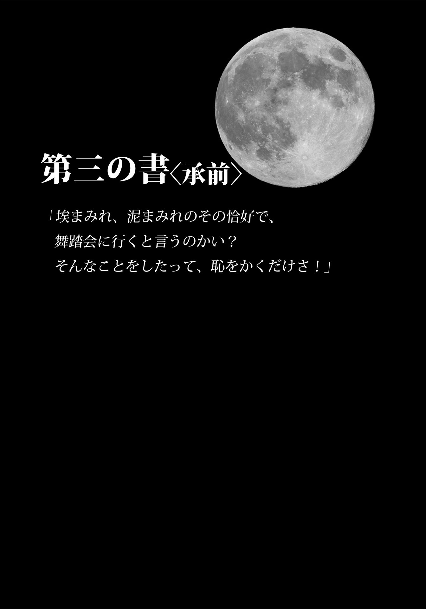

| Ｃｉｎｄｅｒ シンダー 下 (竹書房文庫) | |
| マリッサ・メイヤー | |
| (2015) | |
この作品は縦書きでレイアウトされています。
また、ご覧になる機種により、表示の差異が認められることがあります。
一部の漢字が簡略字で表示されていることがあります。
主な登場人物
リン・シンダー.........東方共和国の修理工 。
カイト（カイ）.........東方共和国皇太子。
アイコ.........シンダーの相棒のアンドロイド。
ナインシ.........カイに仕えるアンドロイド。
リン・アドリ.........シンダーの継母。
リン・パール.........シンダーの義姉。
リン・ピオニー.........シンダーの義妹。
チャン・サチャ.........パン屋の女主人。
チャン・スント.........サチャの息子。
ドクター・ドミトリ・エルランド.........レトモーシス対策研究チームを率いる科学者。
コン・トリン.........東方共和国の王室顧問。
リカン.........東方共和国皇帝。カイの父親。
シビル・ミラ.........レバーナに仕える第一妖術師。
チャナリー.........ルナー星の女王。レバーナの姉。
セレーネ.........チャナリー女王の娘。レバーナの姪。
レバーナ.........ルナー星の女王。
Ｃｉｎｄｅｒ シンダー 下

第二十二章
王宮へ向かう十キロの道のりのあいだじゅう、シンダーの頭のなかでは壊れた音声ファイルのようにドクター・エルランドの警告がくり返し鳴り響いていた。
女王はみずからの権力を邪魔立てする者には容赦がなく、抵抗する者は徹底的に叩き潰す。つまり、自分に逆らう可能性のあるきみのような娘は殺してしまう。わかるかね、ミス・リン？ 目に留まったが最後、女王は間違いなくきみを殺しにかかる。
それでももし、アパートから王宮に行く途中で、行方不明のルナーの王女の情報を握るこのアンドロイドに何かあったら、一生自分が許せない。このアンドロイドを無事、カイの手元に返すことが、いまやシンダーの使命となっていた。
それに、王宮はとてつもなく広いから、うっかりルナーの女王に出くわす可能性は万に一つもないだろう。相手は一般市民と交流する気などありそうにない女王なのだから。
同じアンドロイドでも、ナインシのベルト付きの足 が進む速度はアイコのそれよりずっと速く、早足でないとついていけなかった。けれどいつしか、どちらの足取りも遅くなった。この日の午後、王宮に向かうのはシンダーたちだけではなかったのだ。大通りは崖のふもとで終わり、その先は街を背にして、ねじれた松やヤナギが鬱 蒼 と茂る王宮専用の私道になる。蛇行するその道が、ぞろぞろと坂をのぼる人で埋まっていた。一人の者もいれば、大所帯もいた。怒りに燃え、腕を振りまわしている彼らのやりとりが、シンダーの耳にも届く。あんな女はごめんこうむる。殿下はいったいどういうおつもりだ？ 暴徒たちの怒声はしだいに大きさを増して、通りに響き渡った。何百、いや何千という人たちが、怒りのままにシュプレヒコールをあげている。
「月の女王は出ていけ！ 月の女王は出ていけ！ 月の女王は出ていけ！」
最後の角を曲がると、莫 大 な数の群衆が目に飛び込んできた。えび茶色をした王宮の門の前におさまりきれない人たちが、道にまで溢 れている。うろたえる衛兵たちは、その人波をやっとのことで堰 き止めていた。
群衆の頭上で、いくつものプラカードが上下している。「奴隷は嫌だ、戦争だ！」、「欲しいのはお后 、独裁者は帰れ！」、「悪魔との同盟にＮＯ！」。プラカードの多くには、ベールをまとった女王にバツ印をした絵が描いてあった。
上空に目を転ずれば、報道関係のホバーが半ダースほど旋回し、全世界に放送するべく反逆者たちを撮影している。
シンダーは人混みを押しのけ、小柄なナインシをかばいながら、群衆をまわり込んで正門に向かった。だがたどり着いた先の門は閉じられているうえに、人間とアンドロイドの衛兵たちが肩を並べて門を守っていた。
「すみません」近くにいた衛兵に声をかけた。「王宮に入りたいんですけど」
衛兵が腕を突きだし、シンダーを押しやった。「今日は一般の立ち入りは禁止だ」
「でも、わたしはデモの参加者じゃありません」シンダーはナインシの頭に両手を載せた。「このアンドロイドは皇太子殿下のものです。修理を頼まれていたので、お返しにあがりました。できるだけ早くお渡ししなければならないんです」
衛兵はアンドロイドをのぞき込んだ。「皇太子殿下から通行証をもらってるか？」
「いえ、もらってませんけど、でも──」
「そのアンドロイドにＩＤはあるのか？」
「あります」ナインシは胴体をぐるりとまわし、自分のＩＤコードを衛兵に向けて光らせた。
衛兵が頷 く。「入ってよし」門が開いた。わずかな隙間だったが、あっという間に暴徒たちが押し寄せてきた。耳をろうする怒声と、突如、殺到してきた人々にシンダーは悲鳴をあげた。衛兵のほうへ押しやられる。ナインシはすかさず門の隙間をすり抜けたが、それに続こうとしたシンダーは、群衆を押し戻す衛兵にさえぎられた。「アンドロイドだけだ」
「わたしも一緒です！」シュプレヒコールに負けじと、シンダーは声を張りあげた。
「通行証がないのに、通すわけにはいかない」
「ですけど、わたしが彼女を修理したんです！ ちゃんと皇太子にお届けしないと。それに......お支払いもまだです」半べそをかいてみたが、やはり押し返された。
「所定の手続きに沿って、財務省に請求書を送れ」衛兵は言った。「通行証のない者は通せない」
「リン・メイ」鉄の門の向こうからナインシが語りかけてくる。「皇太子にあなたが会いたがっていると伝えたら、きっと通 信 を使って正式な通行証を出してくれます」
シンダーは瞬時に自分の愚かさを悟った。なにも皇太子に会う必要などないのだ。アンドロイドは無事に届けたのだから、これで仕事は完了。もともと修理代をもらう気などなかった。けれどそれを伝える暇もなく、ナインシはくるりと方向転換し、王宮の正面玄関へと遠ざかっていった。取り残されたシンダーは、そこまでしてカイに会わなければならない理由を考えだそうとした。最初に頭をよぎった、ただ彼に会いたいという、愚にもつかない子供っぽい理由よりもましな何かでなければならない。
そのとき、抗議の声が止んだ。あまりに唐突だったので、思わずびくりとした。
群衆の沈黙によって真空が生まれ、それが人の吐息なり声なり音なりを求めていた。あたりを見まわすと、人々が恍 惚 の表情で王宮を見あげ、プラカードを下げていた。恐怖がさざ波となってシンダーの背筋を走った。
人々の視線を追い、王宮の最上階に突きだしたバルコニーを見あげた。
そこにいたのはルナーの女王だった。片方の手を腰、もう片方をバルコニーの手すりに載せている。表情は険しく、苦々しげでもあるけれど、異様なまでに美しいことに変わりはなかった。遠目にも、肌が透き通るように白くて艶やかなことや、唇がルビーのように赤いことがわかる。その黒い瞳が黙り込んだ群衆を見渡している。シンダーは人々のうつろな表情に紛れてしまおうと、そっと門から後ずさりした。
だが女王をまのあたりにしたショックや恐怖は、たちまちかき消えた。この人は恐ろしくもなければ危険でもない、という思いがどこからともなく湧いてきた。
温かくて、やさしくて、寛大な人。この人を女王として戴 きたい。この人に支配され、導かれ、守られたい......。
網膜ディスプレイで警告灯が点滅した。瞬 きをしても消えず、それが煩わしくてたまらなかった。いまはただ、一心に女王を見あげていたい。女王にお言葉を賜りたい。天下泰平と豊かさと長閑 さを約束してもらいたい。
オレンジの光がビジョンの隅に走った。その光の意味を思いだすのに、少し間があった。そして、こんなときにおかしい、と思った。どういうことなの？
噓 。
シンダーは無理やり目をつぶった。もう一度目を開けると、先ほどまでの幸福感は消えていた。女王のやさしい笑みも、高慢で支配的にしか見えない。胃がぎゅっと締めつけられた。
この女は人々を洗脳している。
わたしを洗脳した。
シンダーは一歩下がり、呆 然 としている中年男にぶつかった。
女王の視線がすばやく動き、シンダーを捕らえた。その顔に驚きが走る。それは憎悪となり、嫌悪となった。
シンダーはうろたえた。身を隠したい。冷たい指で心臓を鷲 摑 みにされたようで、走りださずにいられなかった。けれど、膝が笑って力が入らず、これ以上女王を見てはいけないとばかりに、網膜ディスプレイには無秩序に無数の線が映しだされた。
洗脳された群衆のなかにあって、シンダーは一人、我が身の無力さと脆 弱 さを突きつけられていた。地面がぱっくり口を開け、いまにも吞 み込まれそうだ。女王に睨 まれたら、石畳の通りで灰の山に変わってしまうにちがいない。
女王の目が残虐な光を帯びた。それを見ているうちに、声をあげて泣きたくなった。涙腺の有無など、関係ない。
しかしそのとき、女王のほうが回れ右をし、背筋を伸ばして王宮に戻った。
女王がいなくなれば、たちまち抗議の声があがるだろう、とシンダーは思っていた。女王は本性をあらわにしていたから、みんなもっと怒りに燃えるはずだ。だが、そうはならなかった。集まった人たちは夢遊病患者のようにふらふらと、帰路につきだした。プラカードはうち捨てられ、踏みつけられ、忘れ去られた。シンダーは王宮の塀まで後ずさりをして、ぞろぞろと帰りはじめた人々に道を空けた。
そうか、これがルナーの妖力なのか。人を惑わし、誑 かし、妖力をふるった者を崇拝させると同時に敵に刃向かわせる。そしてこれだけの群衆がルナーの女王を憎悪していたのに、それに抵抗できたのは、シンダーただ一人らしかった。
そのシンダーにしても、女王の妖力から完全に自由だったわけではない。少なくとも最初は惑わされた。腕に鳥肌が立ち、金属との接合部がずきずきした。
シェルならばまったく妖力が効かないはずなのに、そこまでの抵抗力はなかった。
しかもあろうことか、女王に姿を見られ、こちらの存在に気づかれてしまった。
第二十三章
抗議の声が止むと、カイは爪が突き刺さるほど強く自分の膝を握りしめた。トリンがふり返った。どちらも驚きの表情だったが、トリンのほうは瞬時に平静を装った。市民の抵抗に期待していたのに、女王によってやすやすと鎮圧されてしまった。
カイは唾を吞 み、驚きを消した。
「かくも便利な技があるでしょうか」ホログラムの暖炉の傍らで、長椅子の端に腰かけたシビルが言った。「とりわけ暴徒を鎮めるにはうってつけでございます。あのような蛮行、月 では断じて許されません」
「民が暴徒となるには、それなりの理由があると聞く」カイが反論した。トリンが目顔で警告するが、無視して続けた。「それに、洗脳がまっとうな解決手段とも思えないが」
シビルはとり澄ました顔で、膝の上の手を組んだ。「まっとうかどうかの判断は、主観によって大きく左右されます。洗脳が効果的であることには、議論の余地がございません」
両手を握りしめたレバーナ女王が、つかつかと部屋に戻ってきた。女王から睨 まれて、カイの鼓動は速くなった。彼女のそばにいると、密室に閉じ込められて急速に酸素が薄くなっていくような感覚に襲われる。
「わたくしが拝見したところ」女王は言葉を区切って、強調した。「貴国はＴＥ五四年に締結された惑星間協定の第十七条に違反されておられるようです」
頭ごなしに非難されたカイは、それでも平静を保とうと努力したが、右まぶたのひくつきは抑えられなかった。「残念ながら、惑星間協定の全条文が頭に入っているわけではありません。問題の条項を教えていただけませんか？」
女王は憤 懣 やるかたないといった様子で、大きく息を吸った。憎しみと怒りをむきだしにしていても、なお息を吞む美しさだ。「十七条は、協定の締結当事者にルナーの亡命者を匿 ったり保護したりすることを禁ずるものです」
「ルナーの亡命者？」カイはトリンを見た。だが、顧問は表情を崩さない。「なぜ、我が国がルナーの亡命者を匿っているなどとおっしゃるのです？」
「王宮の中庭にいるのを、この目で見ました。抗議の声をあげていた無作法な民のなかに紛れ込んでいたのです。ありうべからざることです」
カイは立ちあがって、腕組みをした。「我が国にルナーがいるとは初耳です。もちろん、いまご一緒させていただいている方々以外に、という意味ですが」
「つまり、あなたはこの問題を看 過 されるおつもりですね。お父君様同様」
「看過するも何も、そんな問題は聞いたことがありません」
トリンが咳 払 いをした。「おそれながら、女王陛下、手前どもは東方共和国に出入りする宇宙船すべてに目を光らせております。ルナーの民が当方のレーダーをすり抜けて密入国する可能性も否定はできませぬが、手前どもとしましては惑星間協定を順守すべく、最大限の努力をして参りました。さらに申しますれば、よしんばこの共和国にルナーの亡命者が居住していようとも、見つかるかもしれない危険を冒して抗議に現れるでしょうか。失礼ながら、何か勘違いをされたのではないかと」
女王の目が怒りに燃えた。「我が国の民なら、一目でわかります。そしていま、この街の城壁内に一人いるのです」バルコニーを指さす。「その女を見つけだして、わたくしのもとへお連れください」
「そうですね」カイは答えた。「人口わずか二百五十万の街ですから、さほどむずかしいことではないでしょう。ルナー検知器を取りだしてきて、すぐに捜索にかかりましょう」
女王は顎を突きだし、自分より長身のカイを鼻先で睨んだ。「そんな皮肉をおっしゃられて、わたくしの忍耐力を試されないほうが、ようございますよ、皇太子様」
カイは歯を食いしばった。
「貴国にあの女を見つけられないのであれば、わたくしどもの近衛連隊を呼んで探させるまでのことです」
「ご心配には及びません」トリンが口を出した。「女王陛下のお言葉を疑ったことを、深くお詫 び申しあげるとともに、協定を順守すべく全力を尽くす所存でございます。戴冠式と祭典の準備がございますゆえ、いましばらくお時間をいただけますでしょうか。時間と人員の余裕ができ次第、亡命者の捜索にかからせていただきます」
レバーナは目を細めてカイを見た。「今後もご自身の決断を家臣任せにされるおつもりですか？」
「とんでもない」カイは冷笑とともに答えた。「いずれはその任を、妃に任せるつもりです」
レバーナ女王が表情を和らげたのを見て、カイは次の言葉を吞み込んだ。ただし、それはおまえじゃないぞ、という言葉を。
「いいでしょう」女王はその場を離れて、シビルの隣に腰かけた。「戴冠式の終了後、月の一周期以内に、先ほど見たルナーを含む全亡命者を連れてきてください」
「わかりました」それまでにこの件をレバーナが忘れてくれることを願いながら、カイは答えた。ニュー北京 にルナー？ そんな突拍子もない話は聞いたことがない。
この数分間のやりとりなどなかったように、レバーナの顔からきれいさっぱり怒りが消えた。彼女が脚を組むと、薄地のドレスのスリットから、ミルクのように白い肌がのぞく。カイは奥歯を嚙 みしめて、窓の外に視線を逃した。赤面するべきか、はたまた息を吞むべきか。
「戴冠式と言えば」女王がふたたび口を開いた。「贈り物をお持ちいたしましてよ」
「恐れ入ります」カイは慇 懃 に答えた。
「戴冠式の夜まで内緒にしようかとも思いましたが、それでは悪印象を与えそうですので」
好奇心を煽 られて、カイは女王を見た。「そうですか？」
女王が小首をかしげた。たっぷりとしたとび色の巻き毛が胸元に落ちる。手を第二妖術師である赤い上着の男に伸ばした。男が袖口からカイの小指ほどのガラスの小瓶を取りだして、女王の手に載せた。
「ご理解いただきたいのですが」女王は話を続けた。「わたくしは共和国民の安 寧 を心から願うとともに、レトモーシスに苦労されるあなたのお姿にも、たいそう心を痛めて参りましたのよ」
カイは爪が手のひらに突き刺さるほど、ぐっと拳を握った。
「ご存じないでしょうが、わたくしは数年前よりレトモーシス研究班を組織して、研究を進めさせて参りました。そして、どうやらわたくしどもの研究者たちが抗菌薬を見つけたようですの」
カイの頭に血がのぼった。「なんですって？」
レバーナは親指と人差し指で摘 んだ小瓶を差しだした。「これが、成人男子一人分」そう言って、舌打ちする。「ああ、なんというタイミングでしょう」
頭がくらっとする。絞め殺してやりたい。指が震え、それが腕全体に広がった。
「どうぞ」やさしげな目でレバーナが続ける。「お受け取りください」
カイは小瓶をひったくった。「これはいつできたのです？」
女王の眉が吊 りあがった。「あら──これが抗菌薬になると確認されたのは、わたくしが出発するほんの数時間前のことでした」
噓 だ。しかも噓をついていることを隠そうともしない。
魔女め。
「殿下」トリンがカイの肩に手をかけた。そっと置き、肩を握りしめる。警告を与えてくれている。その鼓動によって、女王殺害の妄想がなんとか押しとどめられた。
レバーナは膝で両手を重ねた。「それは貴国への贈り物です。お役に立つことを願っておりますわ、皇太子殿下。この惑星からレトモーシスを駆逐することは、両国共通の関心事ですものね。我が国では、今月末までに数千人分の抗菌薬が用意できる見通しが立ちました。とはいえ、六年分の労力と資源をつぎ込む大々的な研究は、我が国にとっても大きな負担となりましたので、ただというわけにいかないことはご理解いただけますでしょう？ この件についても、やはり話しあいで決めさせていただきとうございます」
カイは胸が痛くなって、息苦しさを覚えた。「まだ渡せないと言われるのか？ かくも多くの人々が死にかけているのに？」尋ねるほうが、どうかしている。これまで渡さなかったのだから、地球人がさらに病に倒れたところで、彼女には痛くも痒 くもない。
「まだ政治というものが、おわかりになっておられないようですね。すぐにおわかりになるでしょうが、政治とはすなわち駆け引きでしてよ、わたくしのハンサムな皇太子様」
カイのこめかみの血管は脈打っていた。おそらく顔は真っ赤だろう。そして、自分がこのように怒ることもまた、彼女には計算済みなのだろう。だが、それがなんだ？ 薬を交渉の切り札に使うとは、なんという厚 顔 無 恥 。
シビルがすっくと立ちあがった。「誰か来たようです」
詰めていた息を吐いて、カイはシビルの視線をたどった。おかげで、女王から顔をそむけられた。ほっとするが早いか、入り口を見て息を吞んだ。「ナインシ！」
ナインシのセンサーが光った。「殿下、お邪魔して申し訳ございません」
カイは驚きを払うように、首を振った。「どうやって──いつ──？」
「一時間四十七分前に意識を回復いたしました」ナインシは説明した。「これより職務に復帰いたします。リカン皇帝の早すぎるご逝 去 、心よりお悔やみ申しあげます。訃報に接し、胸の張り裂ける思いです」
背後でレバーナ女王がせせら笑った。「金属の塊が感情を持つなど、笑止千万。この怪物をいますぐ追いだしていただきます」
カイは口を結んだ。彼女の冷酷さを罵る言葉はいくらでもあるが、黙ってトリンを見た。「だったら、わたしがこの怪物を女王陛下の御前から下がらせて、通常の任務に就かせてこよう」
こんな逃げを打ったら眉を顰 められるかもしれないと思ったが、トリンは口論が終わってほっとしているようだ。青ざめた顔をしているから、さすがの顧問にも自制心を保つのは至難の業だったのだろう。「けっこうでございますね。では女王陛下、よろしければ庭園を案内させていただきます」
カイは嫌悪の目でレバーナ女王を睨みつけ、音を立てて靴のかかとを合わせた。「心のこもった贈り物、深謝いたします」小さく頭を下げた。
「喜んでいただけてなによりですわ、皇太子様」
カイはナインシを連れて、部屋を出た。廊下に出ると声を殺して叫び、拳で壁を殴って、漆 喰 の壁に額をつけた。
呼吸が落ち着くと、ふり向いた。ふいにわっと泣きだしたくなった。怒りと絶望と安 堵 がない交ぜになって押し寄せる。ナインシが帰ってきてくれた。
「きみが帰ってきてくれて、どんなに嬉 しいかわからないよ」
「そのようですね、殿下」
カイは目をつぶった。「きみには想像もつかないだろうな。調査はもう続けられないと思っていた」
「記録はなんら欠けることなく保持されております、殿下」
「助かった。じゃあ、すぐに捜索を再開しよう──重要度がさらに増してるんだ」
ぞわぞわっと湧きあがってくるパニックに必死で抗った。戴冠式までまだ九日ある。だが女王は地球に降りたって二十四時間と経 たないうちに、早くも同盟協定の交渉を引っかきまわしている。戴冠式までに、また、どんな秘密が飛びだすやら。王位に就けば、祖国を守るという重責がいよいよ自分の肩にのしかかってくる。
頭が割れるように痛く、女王への憎しみで爆発しそうだった。彼女の存在や、その一挙手一投足、そして地球人の苦しみを政治に利用しようとするその態度が、憎くてたまらなかった。
だが、自分を操り人形にできると考えているとしたら、考え違いもいいところだ。ありとあらゆる手段を使って、できるかぎり抵抗してやる。そして、セレーネ王女を探しだす。ドクター・エルランドに、あの抗菌薬と同じものを作らせよう。できれば、ばかげた舞踏会でレバーナと踊るはめになることも避けたい。外交儀礼など知ったことか。
舞踏会のことを思うと、心の中の靄 がたちまち晴れた。片目を開けて、ナインシを見おろした。「なんでメカニックは一緒じゃないんだい？」
「王宮の外でお待ちです。正式な通行証がないので、入れませんでした」
「王宮の外？ まだそこにいるのか？」
「いると思います、殿下」
カイはポケットの小瓶を握りしめた。「彼女、舞踏会のことを何か言ってた？ 気が変わったとか？」
「舞踏会のことは何もうかがっておりません」
「そうか」唾を吞んで、ポケットから手を取りだし、汗ばんだ手のひらをズボンで拭いた。怒りで体が燃えるようだ。「出る気になってくれたらいいんだが」
第二十四章
シンダーはしゃがんで、王宮を囲む城壁にもたれかかった。石の冷たさがＴシャツを介して徐々に染み込んでくる。群衆は立ち去り、その名 残 として踏みつけられたプラカードが散らばっている。衛兵たちも姿を消し、こまかな模様の入った鉄の門は閉じられたままだった。門の両側には麒 麟 の石像が置かれ、そこからときおり送られてくる磁気パルスが耳鳴りを誘っている。
やっと手の震えが止まり、ビジョンに流れていた警告が消えた。しかし、気持ちは揺れ動いたまま、おさまりそうになかった。
わたしはルナー星人。それが何？
しかもシェルという、珍しいタイプのルナー星人で、他者の思考や感情を操ることはできず、操られることもない。
それならそれでいい。
でも、だとしたら、どうしてみんなと同じようにレバーナの妖力 に惑わされたのか。
ドクター・エルランドの間違いでなければ、彼が噓 をついていることになる。たんなる勘違いで、ルナーなどではなく、疫病に免疫がある理由はべつにあるのかもしれない。
いらだちが、うめき声になった。これほど切実に、自分の素性や生い立ちを知りたいと思ったことはない。何がなんでも真実を突きとめたかった。
門扉が開く際のかすかな車輪の音にびっくりして、顔を上げた。真っ白なアンドロイドが小さな丸石を踏みしだいて近づいてくる。
「リン・シンダーですか？」アンドロイドは尋ね、シンダーにスキャナを向けた。
シンダーは驚きに目を瞬きながら、壁にもたれて立ちあがった。「そうだけど」手首を差しだす。
スキャナがピッと鳴った。アンドロイドは立ち止まることなく百八十度回転し、そのままゴトゴトと王宮に引き返しだした。「どうぞこちらへ」
「あの──何？」シンダーはルナーの女王が立っていたバルコニーをおずおずと見あげた。
「皇太子殿下からお話があるそうです」
グローブがちゃんとはまっているのを確かめたシンダーは、王宮から遠ざかる道をちらりとふり返った。この道を戻れば、一人の名もない少女として大都会の雑踏に紛れ込むことができる。深々と溜 息 をついたのち、その道に背を向けて、アンドロイドの後ろを歩きだした。
二階分の高さがある王宮の両扉には凝った模様に金メッキが施されており、門扉が開くと、まばゆいほどに日差しを照り返した。その先にある、ひんやりとして心地よいロビーは大きな翡 翠 の彫刻や珍しい花々に溢 れ、せわしげに行き来する多数の外交官や役人たちの足音や話し声が、水の湧きだす穏やかな音と渾 然 一体となっている。だがそんな物音もシンダーにはほとんど聞こえていなかった。レバーナ女王に出くわしそうで、気が気ではなかったからだ。けれど、それもカイ皇太子に会うまでのこと。皇太子は彫刻が施された柱にもたれて待っていた。
シンダーを見ると、体を起こし、小さく微笑んだ。だが、先日の屈託のない明るい笑顔ではない。ひどく疲れて見える。
シンダーはお辞儀をした。「皇太子殿下」
「リン・メイ、ナインシから、きみが待っていると聞いた」
「王宮には入れないと言われました。ナインシがお手元に戻ったことを確かめたかっただけです」シンダーは両手を後ろに隠した。「国の安全保障問題が、早急に解決することをお祈りしています」軽口を叩 いてみたが、カイの表情は曇ったままだった。
彼はアンドロイドを見おろして「下がっていい」と告げ、アンドロイドがエントランスの横のアルコーブに消えるのを待って、口を開いた。「時間を取らせて悪かったね。修理のお礼をじかに伝えたくて」
シンダーは肩をすくめた。「身に余る光栄です。お探しに......お探しになっているものが見つかるといいのですが」
カイは不審げに目を細め、通りかかった身なりのいい女性二人をふり返った。片方が身ぶり手ぶりも派手に熱っぽく語り、もう一人が頷 いている。どちらも皇太子とシンダーのことなど眼中にないようだ。二人が通りすぎると、カイはほっと息をついてシンダーに向き直った。「問題が起こってね。これからドクター・エルランドに会いに行くんだ」
シンダーは訳知り顔で頷いた。いささか力みすぎだったかもしれない。「そうですか」巨大な両開きの扉のほうに後ずさりをした。「ナインシが無事、お手元に届いたのがわかりましたから、わたしはこれで──」
「少し歩かない？」
踏みだしかけたシンダーの足が止まった。「はい？」
「原因を教えてくれないか。彼女が故障した」
いっきに不安になった。肌がぴりぴりするのは、嬉 しいから？ それとも恐怖のほうが勝ってる？ 女王が王宮にいることを忘れることはできない。それでも気がつくと、頰が緩むのを、必死でこらえていた。「ええ、もちろんです」
カイはほっとした顔になり、広い廊下を頭で指し示した。「それで......彼女はどこが悪かったの？」尋ねられながら、絢 爛 豪華なロビーを奥へ進んだ。
「チップです。ダイレクト通信用のチップが電源コネクタを遮断していたようです。チップを外しただけで復旧しました」
「ダイレクト通信用のチップ？」
シンダーは行き交う人々をこっそりとうかがった。誰もこちらを見ていないようだが、念のために声を潜めた。「ええ、Ｄ‐ＣＯＭＭです。殿下が取りつけられたのでは？」
皇太子が首を振る。「いや。国際会議ではＤ‐ＣＯＭＭを使っているが、それ以外じゃ見たことないよ。誰がそんなものをアンドロイドに？」
シンダーは口を結んで、ナインシが目覚めた直後に語った内容を思い起こした。たぶんナインシはあの情報を伝達中に意識を失ったのだろう。そしておそらくその伝達はダイレクト通信リンクを介して行われていた。
問題は、情報の受け取り側に誰がいたかだ。
「シンダー？」
シンダーはグローブの裾を引っ張った。あなたが探しものをしているのを知っている、と皇太子に言いたかった。そして何者かがそのことを突きとめたようだ、と。だが、人通りの多い王宮の廊下でしていい話ではない。
「故障する直前に、誰かが彼女をいじったんでしょう。チップを取りつけるために」
「誰だか知らないけど、どうしてそんな欠陥チップをナインシに取りつけようとしたんだろう？」
「まったくの欠陥チップでもなかったようですよ。ナインシがシャットダウンする直前に、チップによるリンクを介してなんらかのデータが送られたようですから」
「なんだって──」カイは口ごもった。目が泳ぎ、体が硬直している。足取りを合わせながら、シンダーに顔を寄せた。「ダイレクト通信で送れる情報の種類は？」
「ネットで送れる情報であれば、どんなものでも」
「でも、誰かが遠隔操作で彼女にアクセスした場合は、そうはいかない......ほら、つまり、どんな情報にしても、ナインシの側で許可しなければ、受け取れないよね？」
シンダーは口を開き、何か言いかけて、いったん閉じた。「よくわかりません。アンドロイドにダイレクト通信チップを組み込むとどう機能するのか、よく知らないんです。本来ダイレクト通信機能を持たないアンドロイドについてはとくに。でも、あのチップを取りつけた人物の目的が情報収集だった可能性は捨てきれません......ある特定の情報を狙って」
カイは遠くを見つめながら、研究棟に続くガラス張りの渡り廊下を進んだ。「じゃあ、あのチップを取りつけたのが誰で、どんな情報が渡ったのかを知るにはどうすればいい？」
シンダーは唾を吞 んだ。「相手に接続を試みたんですが、リンクがもう無効になってるみたいでした。これからも何度か試してみますけど、いまのところ、相手は不明です。相手に渡った情報については......」
含 意 に気づいたカイは、足を止めてシンダーを見た。瞳に炎が燃えていた。
シンダーは声を落とし、早口で言った。「殿下が何をお探しかわかっています。ナインシが探りあてた情報の一部を聞いたので」
「ぼくはまだ、彼女が何を探りあてたのかさえ知らない」
シンダーは頷いた。「あの......興味深い情報でした」
カイが目を輝かせて、顔を寄せてきた。「じゃあ、彼女は生きてるんだね？ ナインシが居場所を知ってるの？」
シンダーは首を振った。王宮内のどこかにレバーナがいると思うと、恐怖に身がすくむ。「ここでは話せません。それに、わたしよりナインシのほうが詳しいはずです」
カイが顔を顰 めて、後ずさりをした。だが、心が激しく揺れ動いているのがわかる。エレベーターホールに着くと、カイはアンドロイドに指示を出した。
「つまり」カイは腕組みをして、エレベーターを待った。「ナインシは重要な情報を摑 んでるけれど、同時に、正体不明の何者かもその情報を摑んでる可能性があるってことだね」
「そうです。それと、チップも普通のものじゃありませんでした。シリコン製でもカーボン製でもない、見たことのないチップです」
カイが眉を顰 めて、シンダーの顔をのぞき込んだ。「どういうこと？」
シンダーはそこにあるチップを摘みあげるような手つきをした。「サイズも形も、見た目はごくありふれたチップなんです。でも、ちらちら発光してて......そう、小さな宝石みたいに。真珠みたいな光沢です」
カイの顔から血の気が引いた。厳しい顔で目を閉じる。「ルナー製だ」
「ほんとですか？」
「彼らの宇宙船にも同様の素材が使われてる。どういう素材かは知らないんだけど──」小さく悪態をつき、親指でこめかみを揉 んだ。「たぶんシビルか、彼女の護衛の仕業だろう。シビルが護衛を連れて到着した翌日に、ナインシが故障したんだ」
「シビル？」
「レバーナのお抱え妖術師だよ。汚れ仕事を一手に引き受けてる」
胸に大きな塊がつかえたように、シンダーの息は止まりかけた。そのシビルとやらが例の情報の入手者なら、女王に伝わるのはほぼ確実だ。
「エレベーターＢが参りました、皇太子殿下」アンドロイドが言った。二台目のエレベーターのドアが開く。シンダーはカイのあとから乗り込み、ふと天井のカメラを見あげた。もしルナーが皇太子のアンドロイドにチップを仕込んだのなら、この王宮のどこに何を忍び込ませているか、わかったものではない。
シンダーは後れ毛を耳にかけた。エレベーターのドアが閉まる。疑心暗鬼のいまだからこそ、自然なふるまいを心がけねば。「女王との交渉は難航してるんですか？」
最悪の話題とばかりに、カイは苦虫を嚙 み潰したような顔になった。皇太子らしい気高さが消える。そのことに胸を痛めたシンダーは、うつむいて、ブーツのつま先を見つめた。
「こんなに人を憎めるのかと思うぐらい彼女が憎い。あれは悪魔だ」
シンダーはびくりとした。「そんなことを言って大丈夫ですか......もしあのチップをナインシに埋め込んだのが彼女なら......」
カイが、ああそうか、という顔でカメラを見あげて、首をすくめた。「かまうものか。ぼくから憎まれていることくらい、向こうだって先刻承知さ。それでいて、気に入られようとするふりすらしない」
シンダーは唇を舐 めた。「女王がデモの参加者たちに何をしたか、さっきこの目で見ました」
カイは頷いた。「民に対面させるべきではなかった。女王がいともたやすく人心を操るさまがネットスクリーンに流れたら、街は大混乱に陥る」腕組みをして、大きく肩をすくめる。「しかも、彼女は我が国がルナーの亡命者を匿っていると思い込んでるんだ」
シンダーの心臓が跳ねあがった。「ほんとですか？」
「ほんと、ばかげてるよな。権力欲にまみれたルナーをこれ以上地球に増やしてどうするっていうんだろうね。なんでぼくがそんなこと──ああ、もう、いいかげんにしてもらいたいよ」
急に不安になって、シンダーは両腕をこすった。カイがルナー星人を匿 っているとレバーナから非難されたのは、自分のせいだ。自分が女王に見つかったせいでカイの立場まで危うくなるとは、考えもしなかった。
沈黙が気になってカイを盗み見ると、彼はシンダーの両手を見ていた。とっさに手を胸に抱き寄せた。グローブはちゃんとはまっている。
「グローブを外すことはないの？」カイは尋ねた。
「ありません」
カイが小首をかしげて、こちらを見ている。頭の金属プレートの内側まで見透かしそうな、揺るぎのない視線だった。「きみはぼくと舞踏会に出るべきだよ」
シンダーは手を握りしめた。彼の自信に満ちた真剣な表情を見ていたら、神経がちりちりしてきた。「あの......このあいだお答えしたはずですけど」
「今回はもっといい答えを聞けるんじゃないかと思ってさ。時間が経 つにつれて、きみを連れていきたいという思いが強まってる」
「わあ、素敵」
カイの唇がひくついた。「来てもらえないかな？」
「どうしてですか？」
「どうしてだめなの？」
「でも、どうしてわたしなんですか？」
カイは両手の親指をポケットに引っかけた。「脱出用浮動車 が壊れたとき、修理してくれるメカニックがいるから」
シンダーはあきれて目をぐるりとまわしたが、彼と目を合わせるのが憚 られて、ドアの横の非常ボタンを睨 みつけた。
「本気でお願いしてるんだよ。一人じゃ舞踏会には行けない。レバーナをエスコートするなんて、まっぴらだしね」
「この街にはそんな栄誉のためなら喜んで身を投げだす独身娘が、二万人はいます」
ふと沈黙がよぎる。触れられてもいないのに、シンダーは彼の温 もりをひしひしと感じた。内蔵された温度計によると気温は変わらないのに、エレベーター内が急に暑くなったような気がする。
「シンダー」
しかたなく彼を見あげた。邪気のない茶色の瞳を見たとたん、身構えていた気持ちがかすかに揺らいだ。さっきまでは自信たっぷりだった皇太子が、いまは心 許 なさそうにしている。不安なのだ。
「二万人の娘たち」カイはおうむ返しにした。「じゃあ、どうしてきみはだめなの？」
サイボーグだから。ルナーだから。しかもメカニック。どう考えても、皇太子には不釣りあいだ。
シンダーが口を開いたとき、エレベーターが止まった。「すみません。でも、悪いことは言いませんから──わたしはやめておいたほうがいいです」
エレベーターのドアが開き、緊張が緩んだ。シンダーはエレベーターを待っていた人たちを見ないように顔を伏せ、そそくさと外に出た。
「ぼくと一緒に舞踏会に出てくれ」
シンダーはぴたりと立ち止まった。廊下にいる全員が硬直していた。
ふり返ると、カイはまだエレベーターＢのなかで片方の手をドアにかけている。
もはやシンダーの神経はぼろぼろだった。この一時間に味わったさまざまな思いが一つになって、胸が悪くなるような感情が立ちのぼってくる。激しい怒りだ。廊下にいる大勢のドクターや看護師、アンドロイド、役人、技術者たちが、揃 いも揃って奇妙な沈黙に陥り、皇太子と、皇太子が弄んでいるだぶだぶのカーゴパンツをはいた娘を見つめていた。
何よ、人をおもちゃにして。
シンダーは肩を怒らせてエレベーターに戻ると、金属製の手のことを忘れて、彼を奥へ押しやった。「エレベーターを止めておいて」彼がアンドロイドに声をかけ、二人を乗せたエレベーターのドアが閉まった。カイはにっこりした。「やっと、きみをふり向かせられたね」
「すみません」シンダーは言った。「本当に申し訳ないと思ってます。でも、舞踏会にはご一緒できません。殿下のためでもあるんです」
カイは彼の胸を押さえつけているグローブの手を見おろした。シンダーは慌てて手を引っ込めて、腕を組んだ。
「どうしてかな。どうしてぼくと行きたくないの？」
シンダーは言い返した。「殿下と行きたくないんじゃありません。舞踏会に行く予定がないんです」
「つまり、ぼくとは行きたいんだね」
シンダーは肩をこわばらせた。「どっちだって関係ありません。どうせ行けないんですから」
「でも、きみが必要なんだよ」
「わたしが必要？」
「そうだよ。ほら、舞踏会のあいだきみといれば、いくらレバーナ女王でもぼくには話しかけられないし......」身震いして、先を続けた。「ダンスにも誘えない」
シンダーはくらっとして、よろめくように後ずさりした。そうだ、レバーナ女王。問題はレバーナ女王だ。ピオニーが言っていたではないか。そう、結婚によって同盟関係を結ぶという噂 があるとかないとか。
「ダンスが嫌いだからじゃないよ。踊ることはできる。きみが踊りたいのなら」
細めた目でカイを睨みつけた。「はい？」
「もちろん、踊りたくないなら、それはそれでいい。踊り方を知らなくたってかまわない。べつに恥じることじゃないからね」
頭が痛い。シンダーは額をこすった。だが、グローブが汚いのに気づいて手を止めた。「でも、無理なんです」シンダーは言った。ドレスもアドリの許可もないから。それに、レバーナ女王に見つかったら、殺されてしまうから。「妹のことがあって」
「妹さん？」
シンダーは喉を湿らせ、磨き込まれたブラックウッドの床に視線を落とした。王宮ではエレベーターまでがこんなにも豪華だ。「ええ、妹のことが心配で。妹も疫病に感染したんです。あの子がいないのにそんな気になれません。行けない、いえ、行く気になれないんです。ごめんなさい」われながら、もっともらしい言い訳だった。自分自身の噓 探知機が発動しても、噓と見破れないかもしれない。
カイはふたたび壁に寄りかかった。前髪が目にかかっている。「すまない。そんなこととは知らなくて」
「しかたないですよ」シンダーは両手で脇腹を撫 でおろした。グローブをはめていても、肌が火 照 っているのがわかる。「実は......お話しがあって......お伝えしておきたいんです」
皇太子が怪 訝 そうに首をかしげた。
「殿下に知っていただいたら、妹も喜ぶと思うから。あの......名前はピオニー、まだ十四歳で、殿下のことが大好きなんです」
彼の眉が吊 りあがった。
「もしめざましい奇跡が起きて、あの子が生き延びたら──あの子をダンスに誘ってやってもらえませんか？ 舞踏会で」言いながら、喉が詰まった。そんな奇跡など望むべくもないけれど、頼まずにいられなかった。
食い入るようにこちらを見ていたカイは、やがてゆっくりと頷いた。「喜んで」
シンダーはさっと頭を下げた。「楽しみにするよう、妹に言ってやります」そのとき視界の隅に、カイが手をポケットに入れて、握りしめるのが映った。
「外にいる人たち、怪しがってますね」シンダーは言った。「噂ってあっという間に広がるから」と、ぎこちなく笑ったが、カイは笑わなかった。思いきってもう一度、顔を上げてみると、肩を落としたカイが、シンダーの背後の羽目板を見るともなしに見ていた。
「大丈夫ですか？」
カイは頷きかけて、やめた。「レバーナはぼくを操るつもりでいる」眉間に皺 が寄る。「実際、意のままにされるかもしれないと、急に弱気になってしまった」
シンダーはグローブの手をそわそわと動かした。カイと話していると、つい彼の置かれた立場を忘れてしまう。皇太子には心配事がたくさんある。自分やピオニーなんかよりも、ずっと深刻な心配事が。
「ぼくがすべてを台無しにしてしまうんじゃないだろうか」
「大丈夫です」彼に手を差し伸べたい。シンダーは強い衝動を必死に抑え込んだ。「殿下は、国民から敬愛される、立派な皇帝になられます」
「ああ、まったくだよ」
「わたし、本気で言ってるんですよ。だって、殿下はまじめで努力家です。まだ皇帝に即位してもいないのにです。それに」腕を組んで、両手を隠した。「殿下はお一人じゃありません。顧問の人たちや、州の代表たち、秘書や出納係たちもいる......だから、ほら、殿下一人で台無しにできることなんて、たかが知れてます」
カイはかすかに笑った。「励ましにはなってないけど、気持ちはありがたくもらっておくよ」天井を見あげた。「だいたいこんな話、きみにしちゃいけなかったよね。ぼくの問題できみまで煩わせるなんて。でも......きみは話しやすいから」
シンダーは足をもじもじ動かした。「でも、わたしの問題でもあります。だって、わたしたちみんな、この国の住人ですから」
「なんだったらヨーロッパに引っ越したっていい」
「実は最近、それもいいなと思ってるんです」
カイはまた声をあげて笑った。声に温もりが戻った。「それってつまり、信用してないってことだよね」
シンダーは首をすくめた。「殿下が皇族だっていうことはよくわかってます。でも、たぶんみんな我慢ができなくなってるんですよね、この──」シンダーは息ができなくなった。カイが屈 んで顔を近づけてきたからだ。すぐ近くまで迫っていたので、一瞬、キスされると思った。驚きに立ちすくみ、パニックの波に吞まれて、顔すら上げられない。
けれど、皇太子はささやいた。「治療法があるとする。それを見つけるためにすべてを犠牲にしなければならないとしたら、きみならどうする？ そのために、自分の人生を捧げなければならないとしたら？」
シンダーは温 もりに包まれていた。彼との距離が近く、石 鹼 のような香りがする。
皇太子はまっすぐなまなざしで、返事を待っている。その目にはどことなく破れかぶれなところがあった。
シンダーは唇を湿らせた。「自分の人生を投げだせば、何百万人もの命が救えるんですか？ だったら、迷うまでもないと思いますけど」
カイが唇を開く。いやおうなく目を引かれたが、すぐにまた彼の目に視線を戻した。近すぎて、瞳を縁取る黒いまつげの本数まで数えられそうだ。そのとき、彼の目に悲しみが滲 んだ。
「きみの言うとおりだね。迷うまでもない」
彼に寄り添いたい衝動と、押しのけたい衝動の両方が、同時に押し寄せてきた。期待に唇が火照り、近づくことも、遠ざけることもできない。「殿下？」
首を傾けて、彼を見あげた。ごく控えめな動きだった。カイはためらうような吐息を漏らしつつも、こんどは目を唇に向けた。
「すまない。こんなことを言うのはひどく不謹慎だけど、でも......ぼくの人生はいま破滅するかどうかの瀬戸際みたいなんだ」
シンダーは眉を寄せて、先をうながすような目つきになった。だがカイはそれきり口を閉ざしたままシンダーの肘にそっと触れると、顔を近づけてきた。まともに動けないシンダーは、どうにか唇を湿らせて、そっと目を閉じた。
そのときだった。頭で痛みが爆発し、それがいっきに脊髄を駆け抜けた。
あえぎながら、腹を抱えて二つ折りになった。世界が大きくかしぎ、込みあげてきた酸っぱいもので喉を焼かれた。カイは驚きの声とともに、前のめりに倒れ込むシンダーを受けとめて、エレベーターの床に座らせた。
シンダーはカイの腕のなかで激しく震えた。ひどい目眩 がする。
と、ふいに痛みがやんだ。始まったときと同じように、唐突な終わり方だった。
カイの腕にしがみついて肩で息をするうちに、ようやく彼の声が鼓膜を通って聞こえてきた。シンダーの名を呼んでいる、何度もくり返して。その声はくぐもっていた。大丈夫かい？ いったいどうしたの？ ぼくが何かした？
全身が熱かった。グローブのなかで手が汗ばみ、顔が燃えるようだ。この前、ドクター・エルランドに触れられたときと同じ。いったい何が起きたの？
唇を舐めてみた。舌が腫れあがっているように感じる。「大丈夫」言ってはみたものの、自信はなかった。「最悪の状態は脱したから、大丈夫です」目を閉じて、じっとしていた。少しでも動いたら、あの痛みがぶり返しそうで、怖かった。
カイが額や髪に手を当ててくれる。「ほんとに？ 動ける？」
どうにか頷き、気力をふり絞って彼を見た。
カイが息を吞んで、さっと身を引いた。手がシンダーの額から数センチのところで固まっている。シンダーは恐怖に胃を鷲 摑 みにされた。網膜ディスプレイを見られたの？
「どうしたんです？」顔に手をやり、震える指で肌と髪を撫でながら尋ねた。「どうかしましたか？」
「い、いや、なんでもない」
意を決してふたたびカイの目を見ると、彼はとまどっているらしく、しきりに目を瞬 いていた。
「皇太子殿下？」
「いや、なんでもないんだ」取ってつけたような笑みが返ってきた。「幻を見た」
「え？」
カイは首を振った。「本当になんでもないから。さあ」立ちあがって、シンダーを引っ張り起こした。「きみを診てもらえるかどうか、多忙なドクターに尋ねてみないとね」
第二十五章
エレベーターを降りてドクター・エルランドのオフィスに着くまでのあいだに、カイのもとには二通の通 信 が届いた。シンダーがなぜそれを知っているかというと、彼のベルトから二度、着信音がしたからだ。けれどカイは出なかった。いくらシンダーが一人で歩けると訴えようと、すれ違う人たちから好奇の目で見られようと、カイは歩くのに手を貸すと言って聞かなかった。シンダーの半分も人目を気にしていないようだ。
カイはドクターのオフィスのドアをノックしなかったし、対するドクターも、前触れなくいきなり登場した皇太子に驚いた顔を見せなかった。
「まただ」カイは言った。「失神だかなんだか知らないが、彼女がまた倒れた」
ドクター・エルランドの青い瞳がシンダーに向いた。
「もう大丈夫」シンダーは言った。「もうなんともありません」
「大丈夫なわけないだろ」カイが言った。「どうしてあんなことに？ あんなふうにならないようにするには、どうしたらいいんだ？」
「診ましょう」ドクターが答えた。「どうしたら今後そんなことが避けられるか、わかるかもしれない」
カイはその返事を一応受け入れたものの、完全に納得してはいないようだった。「検査や特別な実験などに資金が必要なら......」
「急 いてはことを仕損じると言いましてね」ドクターは応じた。「たぶんもう少しゆがみを直せば、それでよくなるでしょう」
シンダーは奥歯を嚙 みしめた。噓 発見装置が点滅したのだ。ドクターはまた皇太子に噓をついている。そして自分にも。だが、カイは反論もしなければ、疑問も投げかけず、深々と息を吸って、こちらを見た。その顔つきを見て、シンダーはかえって心細くなった。壊れやすい陶器の人形を見るような目で、こちらを見ている。
それに、目の奥のほうにうっすら失望が漂っているようでもあった。
「心配いりません、わたしはなんともないですから」
皇太子は怪しみながらも追及できずにいる。そのときふたたびコムが鳴った。カイはついにそちらを見ると、難しい顔でスイッチを切った。「行かなきゃ」
「そうですね」
「アフリカのカミン首相の呼びかけで、国際首脳会議が開かれる。退屈な政治の話しあいだけど、ぼくの顧問が爆発しそうになってる」
シンダーは目を大きく見開き、眉を吊 りあげてみせた。わたしは大丈夫だと伝えたい。結局のところ、カイは皇太子。世界じゅうの権力者が彼を待っていることくらい、シンダーにもわかっている。
それでもなお、カイはそばから動こうとしない。
「大丈夫ですから、行ってください」
心配が少し薄らいだようだった。カイはポケットから何かを取りだし、それをドクターの手に押しつけた。「ここに来たのは、あなたにこれを渡すためでもある」
ドクター・エルランドは眼鏡をかけ、ガラスの瓶を明かりにかざした。透明な液体が入っている。「これは？」
「レバーナ女王からの寄贈品。レトモーシスの抗菌薬との触れ込みだ」
シンダーはどきりとした。小瓶から目が離せない。
抗菌薬？
ピオニー。
ドクターが青ざめ、眼鏡の奥で目を瞠 った。「抗菌薬ですと？」
「罠 の可能性もある。そこはわからないが。一回分、成人男性の一回分だと」
「そうですか」
「複製できるだろうか？ 触れ込みどおり、抗菌薬だったとしたらの話だが」
ドクターは唇を引き結び、小瓶を持つ手を下ろした。長い沈黙の末に答える。「それには数多くの条件があります、殿下。もちろん最善を尽くしますが」
「ありがとう。何かわかったら、どんな小さなことでもいい、すぐに知らせてくれ」
「承知しました」
カイは愁 眉 を開き、シンダーに話しかけた。「きみにもお願いしておく──」
「はい」
「──気が変わって、舞踏会に出たいと思ったら知らせてくれ」
シンダーは唇を嚙んだ。
カイは頰をほころばせ、けれど目までは笑っていないようだった。そしてドクターに小さく頷 いて、立ち去った。
シンダーは、ドクターが握りしめている小瓶に視線を戻した。喉から手が出るほどこの薬が欲しい。だが、そのときドクターの手が白くなるほど強く握りしめられていることに気づいて、目を上げた。ドクターは鬼の形相でこちらを睨 みつけていた。
「どういう了見だ？」ドクターは空いている手でデスクを叩 いた。あまりの剣幕に、シンダーは縮みあがった。「レバーナ女王がこの王宮にいるのを知らなかったとは、言わせないぞ。あれほど近づくなと言ったのに、なぜ言うことを聞けない？」
「皇太子にアンドロイドを届けなければならなかったの。それも仕事のうちよ」
「それもこれも、命あっての話、その命が危ういんだぞ。ここにいては危険だ！」
「だったら言わせてもらうけど、そのアンドロイドだって命にかかわる問題になるかもしれないのよ」シンダーはそれ以上は漏らすまいと、歯を食いしばった。大きく溜 息 をついてグローブを外し、ポケットにしまった。「でも、そうだね、ごめんなさい。でも、もう来ちゃったから」
「いますぐ帰りなさい。女王が研究所を視察したいと言ってくるかもしれない」
「女王が研究所に興味を持つかな？」シンダーはドクターの正面の席に座った。彼は座ろうとしない。「それにどうせ手遅れだし。もう女王に見られちゃったの」
それを伝えたら大爆発すると思っていた相手は、それまでの仏 頂 面 を怯 えにゆがめ、吊りあがった太い眉が帽子のなかに隠れそうになった。ドクターはゆっくりと椅子に腰かけた。「見られただと？ 確かなのか？」
シンダーは頷いた。「デモの人たちが反対の声をあげてるときに中庭にいたら、レバーナ女王が上のバルコニーに出てきて......で、集まってた人たちに何かをしたの。洗脳だか、妖力 だか、知らないけど、みんな怒りをおさめて黙り込んじゃって。気味が悪かった。みんな、なぜここにいるのか、どうして女王が嫌いだったのか、ころっと忘れちゃったみたいで、おとなしく帰ってったわ」
「そのとおり」ドクター・エルランドは小瓶をデスクに置いた。「女王がどうやって人民の反乱を抑えているか、これでわかったろう？」
シンダーは身を乗りだし、金属の指でデスクをコツコツ叩いた。「でも、一つ疑問がある。シェルはルナーの妖術にかからないんでしょ？ だから女王はシェルを──わたしたちを──殺せって命じたんだよね？」
「そうだ」
「でも、わたしも術にかかって、みんなと同じように女王を信じたのよ。そのあとプログラムが作動したおかげで、自分を取り戻せたけど」見るとドクターは、帽子を脱いでつばの形を整えてから、あらためてもじゃもじゃの白髪 頭 に載せた。「変でしょ？ わたしはシェルなんだから」
「そうだな」あやふやな口ぶり。「そんなはずはないんだが」
ドクターは椅子から立ちあがり、床から天井までの窓が並ぶ壁を眺めた。
シンダーの指が疼 く。手を伸ばしてデスクの上の小瓶を摑 み取りたい。けれど抗菌薬は──もし本当に抗菌薬なら──全人類のためのものだ。
唾を吞 んで、椅子の背にもたれた。「あんまり驚いてないみたいだね、ドクター」
ドクターは手を口元にやり、二本の指で唇を叩いて思案していたが、やがてゆっくりとふり返った。
「診断を誤ったかもしれんな」噓だ。
シンダーは膝の上で両手を握った。「あなたが事実を言ってないんじゃないの？」
ドクターは眉を寄せて顔を顰 めただけで、否定しなかった。
シンダーは手を握りしめた。「わたしはルナー星人じゃないんでしょう？」
「いや、きみは間違いなくルナーだ」真実。
シンダーはがっかりして、暗い顔になった。
「きみの家族を調べさせてもらったよ、ミス・リン」シンダーの目が輝くのを見て、ドクターは慌てて両手を挙げた。「いや、きみが引き取られた先の家族のことだ。きみの後見人の故リン・ギャランが、アンドロイド・システムを設計したことは知っているな？」
「ええ」シンダーは自宅の居間を思い浮かべた。マントルピースに額や記念品が飾ってあった。「なんとなくだけど」
「そうか。きみが手術を受ける一年前のことだ。ギャランはニュー北京 の科学博で、ある発明品を発表した。試作段階のだ。彼はそれを生体電気 セキュリティシステムと呼んでいた」
シンダーはドクターをまじまじと見た。「え？」
ドクターは立ってネットスクリーンを操作し、いまや見慣れたホログラムを呼びだした。シンダーの首の映像が拡大され、背骨上部の小さな黒い部分が映しだされた。「これだ」
シンダーは首に手をまわして、うなじをさすった。
「この装置は神経系と接続されている。目的は二つ。地球人に装着するのは、本人の生体電子を外部から操作させないため。つまり、ルナーに操られずにすむ。一方、ルナーに装着すれば、他人の生体電子を操れなくなる。きみがルナーの力を封印されていたように」
シンダーは手でさすりながら首を振った。「封印って、妖力を？ そんなこと、可能なの？」
ドクターが指を突きだして、注意する。「いや、妖力じゃない。その呼称は、ルナーをつけあがらせる」
「わかった。で、生体電気なんとかという装置だけど、そんなことができるの？」
「できるとも。ルナーの持つ力とはすなわち、他人の脳に働きかけて、電磁エネルギーの出力を制御する能力のことだ。それは脳幹にまで入ってくるため、遮断するとなったら神経系を変容させてやらなければならん。しかも、対象者の行動や感覚をいっさい損なうことなくそれをするとなると......だから、すごい発明なのだ。まったくもって独創的な」
シンダーは呆 気 に取られたまま、ふたたび椅子に座るドクターを目で追った。「大金持ちになったかもしれないってことだね」
「生きていればな」ドクターはスクリーンを消した。「科学博で発表した当時は、まだテスト前の試作段階だったこともあって、際 物 扱いされた。いや、無理もないさ。だから、まずはテストするしかなかった」
「そして、そのためにルナーが必要だった」
「贅 沢 を言えば、ルナーと地球人の両方の被験者がいることが好ましかった。それならそれぞれに目的の異なる実験を施せる。地球人の被験者が見つかったかどうかはわからんが、ギャランはきみを見つけて、自分が考案した装置を取りつけ、能力を封じた。そのせいできみは、手術を境にして能力を使えなくなった」
じっとしていられなくて、シンダーは勢いよく立ちあがった。「つまりあなたの誤診じゃなかった。あなたは最初から知ってた。わたしがここに来たときから、わたしがルナーであることや、その意味不明のロックをかけられていることを──全部、知ってたのよ」
ドクター・エルランドが両手を揉 み絞る。そのとき初めて、シンダーはドクターが金色の指輪をはめていることに気づいた。
「わたしに何をしたの？」足を踏んばった。「あなたに触れられたとき、すごい痛みがあって、気絶したわ。それが今日またあった。何が原因なの？ わたしに何が起きたの？」
「落ち着きなさい、ミス・リン」
「なんで落ち着かなきゃならないのよ？ またわたしに噓をつくつもり？ 皇太子にも噓をついたでしょ？」
「わたしが噓をついたとしたら、それはきみを守るためだ」
「守るって、何からよ？」
ドクターは両手の指先を突きあわせた。「きみが混乱してるのはわかるが──」
「適当なこと言わないで！ 一週間前のわたしには、自分が何者だかわかってた。価値のないサイボーグかもしれないけど、それがわかってた。でもいまは......わたしはルナーで、妖力があるにしても使えなくて、頭のおかしい女王がなぜかわたしを殺したがってる」
コントロールパネルが警告を発しだす。
アドレナリンレベル上昇。
推奨行動：ゆっくりと規則的に呼吸せよ。一、二、三......
「頼むから落ち着いてくれ、ミス・リン。選ばれて能力を封印されたことによって、きみは助けられたんだ」
「そうでしょうとも。ご存じのとおり、わたしはモルモット扱いされるのが大好きだものね」
「きみが好むと好まざるとにかかわらず、封印がきみを救った」
「どんなふうに？」
「叫ぶのをやめたら、教えよう」
シンダーは唇を嚙みしめた。胸の内とは裏腹に、呼吸が安定してきた。「わかった。でもこんどは噓をつかないで」腕組みをして、ふたたび椅子に腰かけた。
「きみにはたまにぎょっとさせられるよ、ミス・リン」ドクター・エルランドは溜息をついて、こめかみを搔 いた。「ルナーにはごく自然に生体電子が操れるため、使わないでいるのは、ほぼ不可能に近い。幼いころはとくにそうだ。そんな能力を使えるままにしておいたら、きみは嫌でも世間の注目を集めたろう。額に〝ルナー〟と入れ墨してあるようなものだ。仮に力を制御できるようになったとしても、我々にとって根源的な能力だけに、抑えれば心理的に重 篤 な副作用が出かねない。幻覚、抑鬱......正気を保てなかった可能性すらある」合わせた指先に力を込める。しばらく待って、つけ加えた。「だから、その力が封印されていることによって、きみはさまざまな意味できみ自身から守られたわけだ」
シンダーは目を瞠り、黙ってドクターを見つめた。
「両者にとって有益だったことが、わかるかね？」ドクターが続ける。「リン・ギャランは被験者を手に入れ、きみは正気を失うことなく地球人に溶け込めた」
シンダーはゆっくり身を乗りだした。「我々？」
「なんだね？」
「あなた、我々って。この力は〝我々にとって根源的な能力〟って、いま言ったよね」
ドクターは立ちあがり、コートの襟を整えた。「そうだったかな？」
「あなた、ルナー星人なのね」
ドクターは帽子を脱ぎ、デスクに放った。帽子がないと小柄で老けて見える。
「噓つかないで」
「噓をつくつもりはないよ、ミス・リン。どう説明すれば、きみからそれほど非難を受けずにすむか考えているだけだ」
シンダーは険しい顔で立ちあがり、デスクから後ずさりをした。眉間に〝ルナー〟という入れ墨があるかのように、ドクターを凝視した。「あなたの話を信じていいって、どうしたらわかるの？ あなたに洗脳されてるのかもしれない」
ドクターは肩をすくめた。「もしわたしが一日じゅう、周囲の連中を惑わせているんだとしたら、自分の身長をもう少し高く偽ってると思わんかね？」
シンダーは眉を顰めて、黙っていた。バルコニーにいた女王のことを思いだした。女王が口を開かないうちから、視覚工学装置 で噓を察知した。どういうわけだか、目で見ただけではわからなくても、脳には事実と幻影が見分けられるらしい。
ドクターを睨みつけながら、シンダーは指を突きつけた。「あなた、力を使ってわたしの心を操ったわ。出会ったときに。そう......わたしを洗脳した。女王と同じ。そうやってわたしに信頼させたのよ」
「お互い様だ。きみはレンチで襲いかかってきただろう？」
シンダーの怒りは揺らいだ。
ドクター・エルランドが両方の手のひらを開いて訴える。「これだけは言わせてくれ、ミス・リン。地球に来て十二年、わたしは一度たりとも力を悪用していない。その決心によって、毎日、犠牲を払わされてきた。周囲の人たちの心や感情を操るまいとすることで精神は安定を欠き、心の健康は蝕 まれ、感覚にはくるいが生じる。すべてのルナーが信用できるわけじゃない。それぐらい、わたしにだってよくわかっている。だが、わたしは信頼できる」
シンダーは唾を吞み、椅子の背に摑まって体を支えた。「カイは知ってるの？」
「むろん、知らんさ。このことは誰にも知られてはならない」
「でも、王宮で働いてて、しょっちゅうカイに会ってるわ。リカン皇帝とも！」
ドクターの青い目に一瞬、怒りの炎が閃 いた。「そりゃそうだが、なぜそのことがそんなに気に障るんだね？」
「あなたがルナーだからよ！」
「きみだってそうだ。じゃあ、皇太子がきみを舞踏会に誘ったからといって、皇太子の身を案ずるべきなのか？」
「それとこれとは、話が違うわ！」
「ばかを言うもんじゃないよ、ミス・リン。偏見のなんたるかを、わたしはよく知っている。地球と月とのこれまでの経緯を考えればもっともだ。当然といってもいい。しかし、我々全員が貪欲で利己的な悪魔じゃないんだ。いいかね、この地球上に、レバーナが王座を追われる姿を見たいとわたしほど強く願っている者はいない。わたしにその力さえあれば、この手で女王を殺してやるものを」ドクターは顔を真っ赤にして、目をぎらつかせた。
「そう」シンダーは鋼の指でクッションを摑んだ。穴が空いた。「そうよね。ルナー全員が悪魔じゃないし、全員がやすやすと洗脳されてレバーナにかしずいてるわけでもない。でも、いくら女王に反抗したくても、いったいどれだけの人が命の危険を覚悟で逃げだそうとする？」少し間を置いて、ドクターを見つめた。「で、あなたはなぜ逃げだしたの？」
いったんは立ちあがろうとしたかに見えたドクターだが、しばらく迷った挙げ句、椅子にかけたままがっくりと肩を落とした。「女王に娘を殺されたのだ」
真実。
シンダーはさっと身を引いた。
「何より救いがたいのは」ドクターは続けた。「もしそれがよその子だったら、わたしはそれを正しいと感じたであろうことだ」
「なんで？ どうしてなの？」
「娘はシェルだった」ドクターはデスクにあった帽子を手に取り、それをためつすがめつしながら、杉綾 模様の織目を指でなぞった。「かつてのわたしは、シェルを危険分子とみなして、その法律を認めていた。シェルを生かしておけば社会が崩壊すると思っていた。だが、かわいい娘は例外だった」唇をゆがめて苦笑する。「娘が生まれると、娘を連れて地球へ亡命したくなった。だが、妻はかつてのわたし以上に女王を崇 め奉 っていたので、娘のために手を打とうとはしなかった。それで、まだ幼かったわたしの愛する娘、三日月 は、他の子たちともども、連れ去られた」帽子を頭に戻し、目を細めてシンダーを見あげた。「生きていればきみくらいの年になる」
シンダーは椅子の前へまわり、浅く腰かけた。「お気の毒に」
「はるか昔の話だよ。だがな、ミス・リン、きみをここに連れてきた人物がどれほど苦労したかは、わかっておいてもらいたい。それもこれも、きみのルナーとしての能力を隠して、きみを守るためだったんだ」
シンダーは腕を組んで、体を丸めた。「でもどうしてわたしを？ わたしはシェルじゃないんだから、身の危険はなかった。理屈に合わない」
「いつかわかる日が来る。心して聞いてくれ、きみにはショックな話かもしれない」
「ショック？ いままでの話がただの前置きだったってこと？」
ドクターの目がやさしくなった。「きみは力を取り戻しつつある、ミス・リン。一時的とはいえ、きみの生体電子はリン・ギャランの試作品を凌 駕 した。きみが最初にここに運ばれて、意識を失っているあいだのことだ。そのせいで、きみの力を抑えている装置に修理不能な不具合が生じた。訓練すれば自力で安全装置を無効にできるようになるし、いずれは自分の能力を自由自在に操れるようになる。今日のように、唐突に力が発揮されるとつらいだろうが、感情が激しく揺れ動いたときだけだから、ここまでひどくなることはまれなはずだ。さっき、力が発動した理由に思いあたるふしはあるかね？」
シンダーはどきっとした。エレベーターですぐそばにカイがいたからかも。咳 払 いをして、答えた。「わたしは本来のルナーになりつつあるってことね。妖力もひっくるめて」
ドクター・エルランドは唇をすぼめたが、こんどは否定しなかった。「そうだ。多少時間はかかるだろうが、そのうち生来の能力をフル活用できるようになる」中空で手をまわした。「なんなら、いま試してみるか？ できるかもしれんぞ。保証のかぎりじゃないが」
シンダーは体内の回路で火花が散り、背骨の付け根で何かが弾 けたような気がした。おそらく動揺のあまり、勝手に妄想したのだろうが、そう切って捨てることもできない。ルナーとして、そういう力を我が物にするのは、どんな気分だろう？
シンダーは首を振った。「ううん、やめとく。まだ心の準備ができてないから」
ドクターはちょっぴりがっかりしたように、うっすら微笑んだ。「そうだな。きみの準備ができてからにしよう」
シンダーは自分を抱えるように両腕を体に巻きつけて、震える息を吸った。「ドクター？」
「なんだ？」
「ドクターもわたしと同じように、レトモーシスに免疫があるの？」
ドクターは正面からまなざしを受けとめてくれた。「ああ、あるよ」
「だったら、どうして自分の血液を使って治療法を見つけなかったの？ こんなに大勢の人が死んでるのに......それでサイボーグが徴集されて......」
ドクターの顰めっ面が和らいだ。「やってみたとも、ミス・リン。これまで試した二十七の抗菌薬をどうやって作ったと思うね？」
「どれも効かなかったのね」シンダーは椅子の下に足を引いた。またもや自分がちっぽけでつまらない存在に思えた。「だったらわたしの免疫も、あなたが思ってるような奇跡の薬にはならないかも」目がおのずと小瓶に引き寄せられた。女王が持参した抗菌薬。
「ミス・リン」
ドクターを見ると、目を輝かせていた。初対面のときのように、興奮を抑えきれずにいる。
「きみこそが、わたしが探し求めていた奇跡だ」ドクターは言った。「そして、そうだ、それはきみの言うとおり、きみに免疫があるからではない」
シンダーは説明してもらおうと、彼を見つめた。わたしの何が特別なの？ ドクターは本当に、妖力を封印していたという、リン・ギャランの独創的な試作品を調べていたのだろうか？
ドクターが話しだす前に、シンダーの体内で着信音が鳴った。シンダーは、ドクターから顔をそむけた。緑色の文字がビジョンをよぎる。
ニュー北京二十九地区、レトモーシス感染隔離施設よりコム。
リン・ピオニーはレトモーシスの第四ステージに移行。
ＴＥ１２６年８月１８日１７時２４分。
「ミス・リン？」
指が震えた。「妹が第四ステージに入ったって」シンダーの目はデスクの上にある小瓶に吸い寄せられた。
ドクターがその視線を追った。「そうか。第四ステージになるといっきに進む。ぐずぐずしている暇はないぞ」身を乗りだして、人さし指二本で小瓶を挟んだ。「約束は守らないとな」
シンダーの鼓動が激しくなった。「でも、ここでも必要なんでしょ？ 複製しなきゃならないんだから」
ドクターは立ちあがって本棚まで行き、ビーカー立てを引き寄せた。「妹さんはいくつかね？」
「十四よ」
「ならば、この程度で足りる」ドクターは抗菌薬の四分の一をビーカーに移し、小瓶に栓をしてから、シンダーのほうに向けた。「これがレバーナ女王から渡されたものだということは、きみにもわかっている。女王が何を企んでいるかわからないが、地球にとって喜ばしいこととは思えない。これが罠である可能性も高い」
「妹はもう死にかけてるのよ」
ドクターは頷き、薬を差しだした。「そうだったな」
シンダーは立ちあがって小瓶を受け取り、そっと手のひらに載せた。「ほんとにいいの？」
「一つ条件がある」
シンダーは覚悟を決めて、小瓶を胸に抱き寄せた。
「レバーナ女王の滞在中は、この王宮に近寄らないでくれ」
第二十六章
十七分遅れで会議場に入ったカイは、長いテーブルについたトリン他四人の政府関係者から冷ややかな目を向けられた。さらには、目前の壁にはめ込まれた十数個のネットスクリーンに映る面々からも。いずれも地球各国──イギリス連合王国、欧州連合、アフリカ連邦、アメリカ共和国、オーストラリア──の代表だ。女王が一人、首相が二人、大統領が一人、総督が一人、州代表が三人、それに地域代表が二人。ありがたいことに、スクリーンの下部にそれぞれの名前と肩書と国名が明示されている。
「殿下、ご列席を賜わり、感謝いたします」トリンとテーブルについた人々が立ちあがった。
カイはそれを制するように手を振った。「ぼくの助言が必要かもしれないと思ってね」
壁のスクリーンでアフリカのカミン首相が女性らしからぬ不満げなうめき声を漏らした。あとの人たちは沈黙を守っている。
カイがいつもの席につこうとすると、トリンがそれを押しとどめて、テーブルの端の椅子を指さした。皇帝の席だ。カイは口元を引き結んでそちらへ移動し、縦横に並んだ顔を見あげた。世界各国の代表は銘々、各自のネットスクリーンに向きあっているのだが、遠く離れていても彼らの視線が突き刺さるようだった。
気後れするまいと、咳 払 いをして、「会議の回線は安全なのか？」と尋ねた。シンダーによってナインシのなかに取りつけられていたのがわかったダイレクト通信チップのことが頭をよぎる。この部屋のスクリーンには、盗聴の心配なくネットを介して国際会議ができるようにＤ‐ＣＯＭＭがついている。ナインシのなかにあったチップは、レバーナの部下の誰かに仕込まれたのか。目的はやはり、極秘情報なり個人情報なりの入手だろうか。だとしたら、女王にどんな情報を盗まれたのだろう？
「もちろんでございます」トリンが答えた。「接続確認に入って、すでに二十分ほど経過いたしました。殿下がいらっしゃったときには、ちょうど地球と月の関係について協議中でした」
カイは両手を握った。「そうか。つまり威圧的な女王が、自分の思いどおりにならないと、そのたびに癇 癪 を起こして戦争をしかけるぞと脅すという、その関係のことですね？」
誰一人くすりともしなかった。トリンがカイを凝視して言った。「このお時間、何か差し障りがございましたか、殿下？」
カイはまた咳払いをした。「申し訳ない。不適切な発言だった」何千キロも離れた場所から自分を見つめる地球の代表者たちに謝った。本来なら父親が出席すべき会議に座らされた子供の気分で、テーブルの下で両手を握りしめた。
アメリカのバーガス大統領が口を開いた。「言うまでもなく、地球と月は長きにわたって緊張関係にあり、レバーナ女王が王位に就いたことでさらに緊迫の度合いが増した。どちらか一方を責めることはできない。大切なのはその関係を修復すること。さもなくば──」
「女王が戦争を始める」南アメリカの地域代表が続けた。「先ほど殿下がご指摘になられたとおりです」
「ですが、ネットの情報にあやまりがなければ」割って入ったのはオーストラリアのウィリアムズ総督だった。「地球と月のあいだで、すでに交流が再開しているとか。レバーナ女王が地球を来訪中というのは事実ですかな？ 聞いたときは、我が耳を疑ったが」
「事実でございます」答えたトリンに、全員の視線が集まった。「女王は昨日の午後、到着されました。女王の第一妖術師であるシビル・ミラは、二週間以上前から王宮に滞在しておられます」
「レバーナから来訪目的を聞かされたのか？」カミン首相が尋ねた。
「平和協定を締結したいとのこと」
アメリカ共和国の代表が笑いだした。「にわかには信じられませんね」
バーガス大統領がそれを無視して言った。「時期的に怪しくないかね？ 何しろ少し前に......」大統領は言葉を濁し、みなカイを見ないようにしている。
「当方もそう考えております」トリンが答えた。「ですが、女王のお言葉とあれば無 碍 に扱えません」
「かねてから女王は、他のどの国より東方共和国との同盟締結にこだわっていた」バーガス大統領が言った。「だが、納得できる条件を出さない。こんどは要求を変えてきたのかね？」
カイは視界の隅で、トリンの胸がゆっくりと盛りあがるのを見た。「いいえ」トリンが答えた。「当方の知るかぎり、要求の内容に変更はございません。依然として東方共和国の皇帝との婚姻を通じた同盟関係を望んでおられます」
その場にいる人たちも、スクリーンの向こうにいる人たちも、表情を変えまいとしているものの、気まずい空気が漂いだした。カイは爪の痕がつくほど強く両手を握りしめた。昔から、こうした会議における腹の探りあいを軽蔑してきた。みな同じことを考えながら、あえて口に出そうとしない。
もちろんカイの運命にはみな同情しているのだろうが、反面、当事者にならずにすんだことに安 堵 しているにちがいなかった。レバーナ女王が地球のどこかの国に入り込んで専横することは腹立たしいが、軍隊を率いて地球に攻め入られるよりはずっとましだ。
「我が共和国の立場も」トリンが続けた。「変わっておりません」
この発言が集まった代表者たちの動揺を誘ったようだった。
「レバーナと結婚しないというのですか？」イギリス連合王国のカメリア女王が額に深く皺 を寄せて尋ねた。
カイは肩を引いて、身構えた。「父はそうした形を通じた同盟は断固として結ばないと、決めておりました。わたしはその判断は現在も正しいと考えています。先週も、昨年も、十年前も、それが正しかったように。我が国の国益を最優先に考えることがわたしの務めです」
「そのことをレバーナに伝えたのですか？」
「女王に噓 はついておりません」
「そうなると、レバーナはどう出るだろうか？」金髪でやさしいまなざしをした、欧州連合のブロムスタッド首相が尋ねた。
「おそらく」カイは答えた。「さらに交渉材料を増やして、我々を屈服させようとするでしょう」
スクリーンを介して視線がカイに突き刺さった。トリンが唇を青ざめさせ、話を慎重に進めるよう目顔で注意している。どうやら顧問は抗菌薬のことを話さないつもりらしい。少なくとも次の方針が決まるまでは控えたいのだろう。だが、レトモーシスは地球じゅうに広まる伝染病なのだから、抗菌薬があるかもしれないことは伝えてしかるべきだろう。レバーナが噓をついていないければ、という条件付きだとしても。
カイは一つ深呼吸すると、テーブルに両手をついた。「レバーナによると、レトモーシスの治療法が見つかったそうです」
驚きにスクリーンがパチパチと鳴りだしそうだった。代表者全員が絶句している。
「女王から一服分の薬を渡されたので、王立研究所に託しました。効果のほどは調べてみるまでわかりませんが、本物であれば、複製方法を見つけなければなりません」
「複製できなかったらどうされるのかね？」
カイはウィリアムズ総督に目をやった。カイの父よりもはるかに年配だった。列席者はみな、カイよりうんと年上だ。「わかりません。ただ、わたしは東方共和国のためにすべきことをします」用心深く自国の国名を紛れ込ませた。確かに同盟関係にある六カ国が一つにまとまればこの星は強くなる。だが、それぞれに忠誠を尽くすべき国があり、カイにしても自国を二の次にすることはできない。
「と申しましても」トリンが言った。「依然として、婚姻によって同盟を結ぶことなく、ブレーメン条約を締結させられる可能性は残っております」
「女王が受け入れるとは思えない」欧州連合の地域代表が言った。「ごまかしてはいけません。あれほど頑固な女王が──」
「それはともかく、レバーナ女王と縁組み可能な王族は、東方共和国の皇族だけではありません」アフリカ代表が言った。君主国ではない自国が、選択肢から外れていることを承知のうえでの発言だ。仮に婚姻関係を結んでも、一時的なものにしかならない。アフリカ代表は続けた。「レバーナが何を仕掛けてくるにせよ、こちらから提案できるように、可能性を一つずつ検討しておくべきでしょう。地球の住人たちに最大の利益をもたらすであろう可能性を」
他の参加者ともども、カイはイギリス連合王国のカメリア女王を見た。女王には独身の息子がいる。三十代前半なので、カイよりもレバーナに年齢が近い。カメリア女王が控えめにしていることに気づいて、カイはそれ見たことかという顔をしないように注意した。立場が逆転するのは愉快なものだ。
とはいえ、レバーナ女王にとって政治的に見て、最適の相手がカイであることには、変わりがなかった。イギリス連合王国の皇太子が王座に就かない可能性のある三男であるのに対して、カイのほうは来週、皇帝になる。
「他の者ではだめだとレバーナが突っぱねたら？」長いあいだに何度となく整形手術を受けてきた眉を片方だけ吊 りあげて、カメリア女王が言った。誰も答えないとわかると、続けた。「いたずらに不安を煽 るつもりはありませんが、レバーナ女王は同盟を無理強いしたくて地球に来たのではありませんか？ 皇太子を洗脳して結婚に持ち込もうという魂胆かもしれませんよ」
カイは胃がむかむかするのを感じた。他の人たちの顔にも不安が映しだされている。「そうでしょうか？」カイは疑義を呈した。
一同が即答を避けているので、トリンを見た。
たっぷり時間を置いて、トリンが首を振った。見ていて不安になるほど心許ない様子だ。「いいえ。技術的には可能でしょうが、それはないかと。殿下のそばにいつづけなければ、影響を保てません。影響から脱するやいなや、殿下は婚姻が合法でなかったと訴えることができる。女王がそんな危ない橋を渡るでしょうか」
「それを祈れということか」その答えに安心できず、カイは言った。
「レバーナの娘、ウィンター王女は？」バーガス大統領が言った。「検討してみてはどうだろう？」
「義理の娘です」トリンが言った。「ウィンター王女の何を検討しろと？」
「ウィンター王女との縁組みによる同盟はどうかということよ」カメリア女王が言った。「レバーナよりははるかにましです」
トリンはテーブルの上で両手を組んだ。「ウィンター王女には生母がおられ、父親は王宮の衛兵。王家の血筋ではありません」
「だとしても、月側がウィンター王女との縁組みによる同盟に応じる可能性はあるかもしれない」カイは言った。
トリンが溜 息 をついた。カイを黙らせたがっているようだ。「政略的にはなきにしもあらずですが、レバーナ女王のお立場のむずかしさを考えると、ありえないのではないでしょうか。血筋を絶やさぬため、レバーナ女王は結婚して跡継ぎをもうける必要があります。女王が最適な婚姻関係を求めているかぎり、義理の娘との結婚に同意するとは思えません」
アフリカのカミン首相が言った。「では、ウィンター王女をお后として受け入れられる可能性は皆無だと？」
「ルナーが迷信を信じないようになれば、可能性もありますが」トリンが答えた。「ご承知のとおり、ルナーの文化には迷信が深く根付いております。であるかぎり王家の血を引く跡継ぎを求めます」
「もしレバーナに跡継ぎができなかったら？ そうしたらルナーはどうするだろう？」
カイは顧問に視線を投げかけ、片方の眉を吊りあげて、答えをうながした。
「わかりかねます」トリンが答えた。「遠い血縁者はあまたいるでしょうから、そうした者たちが継承権を主張するのではないでしょうか」
「レバーナにとって結婚が必須だとして」南アメリカ代表が言った。「東方共和国の皇帝以外は相手として受け入れないと言ったとします。皇帝が結婚を拒否したら、そのときは、膠 着 状態に陥ります」
ウィリアムズ総督が言った。「女王は脅しを実行に移すかもしれん」
トリンが首を振った。「戦争したければ、これまでにもそんな機会は数多くございました」
「しかし、明らかではないか」ウィリアムズ総督が反論した。「レバーナは皇后になりたがっておる。だが、それが叶 わなかった場合に、どう出るか──」
「実は、我が国はある情報を摑 んだ」バーガス大統領が重苦しい声で切りだした。「もはやレバーナが地球と戦争したがっているかどうかを問うている段階ではない。入ってきた情報を総合するに、戦争の可能性があるのではなく、いつ起きてもおかしくないと考えざるをえない」
不安そうなざわめきが伝わった。
「我々の仮説が正しければ」バーガス大統領は続けた。「レバーナはこれから半年以内に地球に侵攻しようとしている」
カイはシャツの襟をいじりながら、身を乗りだした。「どのような仮説でしょう？」
「レバーナ女王は軍隊の編成に取りかかっているようだ」
とまどいが室内を駆け抜ける。
「月に軍隊があるのは、いまに始まったことじゃない」欧州連合のブロムスタッド首相が言った。「新情報ではないし、とりたてて話題にすべきものでもありませんよ。いくら我々がそう望んだとしても、軍隊を放棄してくれとは要請できない」
「だがそれが、兵士や妖術師からなる従来の軍隊ではないとしたら」バーガス大統領が説明に入る。「地球のいかなる軍隊とも異なる。我が国の衛星がとらえた写真の一部がこれだ」
スクリーンからバーガス大統領の顔が消え、超望遠撮影されたとおぼしき不鮮明な写真が映しだされた。日光のない状態で撮られた衛星写真だ。粒子は粗いが、カイには幾重にも列をなす兵士たちが見えた。目を細めて凝視していると、別の写真に切り替わった。上空から撮影された、四人の背中のクローズアップ──カイは驚きとともに、それが人間ではないことを見て取った。人間にしては肩幅が広すぎるし、背中が曲がりすぎている。どうにか見分けのつく横顔はやけに間延びしていて、背中は毛皮状の物体に覆 われていた。
また次の写真が現れた。さっきと同じ生き物が五、六体、正面から写っているが、人間と野獣をかけあわせたような顔だった。鼻と顎は妙な形に出っぱり、ねじれた唇のせいで顰 めっ面をしているように見える。口から突きだす白いもの。はっきりとは見えず、明言はできないものの、カイには牙だとしか思えなかった。
「これはなんなんですか？」カメリア女王が質問を発した。
「突然変異体 」バーガス大統領が答えた。「遺伝子操作によって生みだされたルナーの変異種と思われる。おそらく何十年も前から研究されてきたのだろう。この写真に写っているだけで六百体ほどいるが、我が国ではこれはほんの一部だと考えている。例えば、月の表面の下に張りめぐらされた溶岩チューブのなかに何千、何万いてもおかしくない」
「連中にも妖力があるのでしょうか？」カナダの地域代表がおずおずと尋ねた。
写真が消え、ふたたびアメリカのバーガス大統領の顔が映った。「それはわかりかねる。確認できているのは、並んだり、隊列を組んだり、洞窟から出入りしたりする姿だけだ」
「ルナーならば」カメリア女王が言った。「死なないかぎり、妖力があるのでしょう」
「ルナーが妖力を持たない子供を殺しているという証拠はございません」トリンが口を挟んだ。「確かにそれは興味深い写真であり、見れば極論に走りたくなりますけれども、レバーナ女王がいまのところ地球を攻撃してはいないことを忘れてはなりません。戦闘のための生き物かどうかもわからないのです」
「それ以外にどう考えられる？」ウィリアムズ総督が嚙 みついた。
「たとえば労働力とか」トリンは言った。その可能性を否定できるものならしてみろと言いたげな口ぶりだ。総督は鼻を鳴らしつつも、ひとまず黙った。「もちろん、起こりうる戦争への備えを怠ることはできません。ですが、当面優先すべきは月との同盟を結ぶこと。根拠のない猜 疑 心や不信感でそれを遠ざけてはなりません」
「いや」カイは頰 杖 をついた。「ここで猜疑心や不信感を抱かなくていつ抱く」
トリンが不興顔になった。「殿下」
「みなさん、いまの写真に関して明らかな点を見逃していらっしゃるようだ」
バーガス大統領が胸を突きだして、尋ねた。「どういうことかね？」
「大統領は先ほど、ルナーは何十年も前からこの軍隊を準備してきたのだろうとおっしゃいましたね。科学の力なりなんなりで、この......生き物を作ったと？」
「そうとしか思えない」
「だとしたらなぜ我々はいまになってそのことに気づいたのでしょう？」カイは写真が映っていたスクリーンを手で示した。「何百という生き物が、ほかにすることがないかのように、人目につく場所に並んでいる。まるで写真に撮られるのを待っていたようだ」カイはテーブルの上で腕を組み、不審げな一同の顔を見つめた。「レバーナ女王は化け物の軍隊を我々に見せつけ、気づかせたかったのではあるまいか」
「我々を脅すためにか？」アフリカのカミン首相が言った。
カイは目をつぶった。まぶたの裏に獣たちが居並んでいる。「いいえ。わたしを脅すために」
第二十七章
浮動車 が低い振動音を立てて、隔離施設の前で停まった。横のハッチから飛び降りたシンダーは、とたんにたじろいで腕で鼻を覆 った。むせ返るような午後の空気が肉の腐敗するにおいを強めているせいで、胃がむかむかする。医療ドロイドが何体か、入り口のすぐ外で搬出用のホバーに死体を運んでいた。どれも膨張して変色し、手首に赤い切開痕がある。シンダーは死体から顔をそむけて息を殺し、その脇を通って施設に入った。
ぎらぎらと照りつけていた日差しが陰った。天井際に並んだ窓が緑色のシートに覆われているからだ。前回来たときはがらんとしていた内部が、いまは患者で溢 れ返っている。男女を問わず、年齢もばらばら。天井で回転するファンもたいして役に立たず、あたりには熱気や死臭が濃厚に漂っていた。
医療ドロイドが小さな音を立ててベッドのあいだを動きまわっているが、全患者の面倒をみるには手が足りていない。
シンダーは顔に袖を押しあて、呼吸を浅く保ちながら、通路を進んだ。ピオニーが使っている緑色の綿織 の毛布が見えたので、そのベッドの足元へと走った。「ピオニー！」
動きがないので、手を伸ばして肩に触れた。毛布はやわらかくて温かいのに、その下にある体は動かない。
身震いして、毛布の端を摑 んでめくった。
ピオニーが嫌がって、弱々しくうめいた。その声に安 堵 して、腕に震えが走る。シンダーはその場にへなへなとしゃがみ込んだ。
「ああ、ピオニー。連絡を受けて急いで来たのよ」
目がかすんでいるらしく、ピオニーはこちらを見て目を細めた。青白い顔に、かさついて皮がむけた唇。首に浮かんだ黒っぽい斑点は色が薄れて、青ざめた皮膚の下で紫色に変わりつつある。義妹はシンダーを視界に捕らえると、毛布の下から腕を伸ばして、手を開いた。指先が青黒くなり、爪は黄みがかっている。
「わかってる。でも、大丈夫」シンダーは浅い呼吸を続けながら、カーゴパンツのポケットのボタンを外して、ふだん右手から離れることのないグローブを外した。薬の小瓶をグローブの指のなかに入れて、保護してきたのだ。「あなたにいい物を持ってきたの。起きあがれる？」
ピオニーは片方の手を力なく握り、毛布の下に引っ込めた。ぼんやりした目つきからして、こちらの言うことが聞こえているかどうか、怪しいものだ。
「ピオニー？」
シンダーの頭のなかでチャイムが鳴った。アドリからメッセージが入ったとディスプレイに表示された。いつものように不安が込みあげて、喉が詰まった。
着信など無視してしまえ。
「ピオニー、よく聞いて。起きあがってもらわなきゃならないんだけど、できる？」
「ママ？」ピオニーが呟 いた。唇の端に唾が溜 まっている。
「アドリはうちよ。知らないの──」あなたが死にかけていることを。いや、もちろん知っている。連絡はアドリにも行っているはずだ。
胸を締めつけられながらピオニーの上に屈み込み、脇の下に腕を入れる。「さあ、起こしてあげる」
ピオニーは無表情で、死人のようにうつろな目をしたままだ。だが、シンダーが助け起こすと、苦しげにうめいた。
「ごめん。でもこれを飲んでもらわないと」
また電子音が鳴り、アドリからメッセージが入った。よりによって、こんなときに。シンダーは腹立ち紛れにネットリンクを切断し、着信できないようにした。
「王宮でもらってきたの。きっと効く。わたしの言ってること、わかる？」他の患者に聞かれて大騒ぎになるとまずいので、小声で話した。ピオニーの目はぼんやりしたまま、無反応だ。「薬よ、ピオニー」耳にささやきかける。「抗菌薬」
ピオニーは無言のまま、シンダーの肩にもたれている。ぐったりしているのに重みがなく、木の人形のようだった。
喉にざらつくものを感じつつ、シンダーは虚空を見つめるピオニーの目をのぞき込んだ。目の焦点が自分を通り越して、はるか彼方に向けられている。
「だめ......ピオニー。聞いてないの？」義妹を抱き寄せ、小瓶の蓋を外した。「これを飲んで」唇に瓶を当てても、動かない。ぴくりとも。「ピオニー」震える手で上を向かせた。血の気の失 せた唇が開く。
一滴たりともこぼしたくないので、手の震えを抑えて、薬瓶を持ちあげた。唇に瓶を押しあてて息を詰め、そこではたと気づいた。鼓動が速くなり、出ることのない涙のせいで頭が重くなる。激しく首を振った。「ピオニー、お願い」
それでもピオニーの口からは何も聞こえなかった。吐息も漏れてこない。シンダーは薬瓶を下ろし、義妹の首すじに顔をうずめて、痛いほど歯を食いしばった。息を吸うたびにあたりの悪臭が喉を刺すが、もう何日も前に洗髪したときのシャンプーがふと香った。
小瓶を握りしめたまま義妹をそっと横たえて、枕に頭を戻す。目は開かれたままだった。
拳でマットレスを叩 いた。わずかに飛び散った抗菌薬が親指にかかる。星がちらつくほど目をきつくつぶり、顔を毛布に埋めた。「ひどい、ピオニー、こんなのなしだよ！」ふたたび上体を起こすと、切れぎれにゆっくりと息を吸いあげ、ハート形をした義妹の顔と命を失った目を見つめた。「約束どおり、あなたのためにこれを持ってきたんだよ」手のひらの小瓶を握り潰しそうだった。「それに、カイにも頼んで、あなたと踊るって約束してもらってきたんだよ。ほんとなんだからね。ねえ、聞こえないの？ 死んじゃだめ。わたしが来たのに......」
頭が割れそうになり、ベッドに倒れ込んだ。マットレスの端を摑み、胸につくほど顔を深く伏せた。またもや脊椎から痛みが広がってきたが、以前のように痛みに圧倒されることはなく、体内を日焼けしたような熱っぽさが不快なだけだった。
痛みが引き、鈍痛だけが背中に残った。虚空を見つめるピオニーの目がどうしても気になる。顔を上げたシンダーは、力の入らない指で薬瓶に栓をしてポケットに戻し、手を伸ばして義妹の目を閉じた。
汚れたコンクリートの床を砂を踏みしだくような音が近づいてくる。見ると、医療ドロイドが来ていた。水も濡 れた布も持っていない。医療ドロイドはピオニーのベッドの反対側で止まり、胴体部分を開いて、メスを取りだした。
シンダーはベッド越しに手を伸ばし、グローブをはめた手で義妹の手首を庇 った。「だめ」思ったより大きな声になったため、近くの患者が何人かふり向いた。
医療ドロイドがセンサーの光をこちらに向ける。まだ光が暗い。
泥棒、罪人、逃亡者。「この子のは取らないで」
医療ドロイドはつるりとした白い顔で突っ立ったまま、胴体からメスを突きだした。先端に乾いた血液が少量こびりついている。シンダーは無言のままメスを持っていないほうの腕を伸ばして、ピオニーの肘を押さえた。「わたしはプログラムどおりに行動──」
「あなたがどうプログラムされていようと知ったことじゃない。この子のは取らせないから」シンダーは医療ドロイドの手を引きはがした。ピオニーの腕の皮膚に、フォーク状の手 で摑まれたためにできた深い切り傷があった。
「彼女のＩＤチップを回収します」医療ドロイドは、あらためて腕を伸ばしてきた。
シンダーはベッドに覆いかぶさり、医療ドロイドのセンサーを手で押さえて近寄らせまいとした。「だめって言ったら、だめなの。近寄らないで」
医療ドロイドがメスを振りあげ、シンダーのグローブに先端を突き立てた。金属同士が音を立ててぶつかる。びっくりして身を引いたものの、メスは分厚い作業グローブの生地に突き刺さったままだった。
歯を食いしばってグローブからメスを引き抜き、医療ドロイドのセンサーに突き立てた。ガラスが割れて、灯 っていた黄色い明かりが消えた。医療ドロイドが金属の腕を振りまわしながら、後ずさりをする。目に見えない内部スピーカーからビープ音やエラーメッセージが放たれていた。
シンダーがベッドの上に身を乗りだして頭を殴りつけると、医療ドロイドは床に倒れた。音はしなくなったが、まだ腕はひくついていた。
肩で息をしながら、あたりを見まわした。まだその元気がある患者はベッドに起きあがり、ぎらつく目を瞬 いている。四列先にいる医療ドロイドが患者から離れ、音を立てて近づいてきた。
シンダーは息を吞 んだ。屈んで医療ドロイドの割れたセンサーに手を伸ばしてメスを摑み、向き直ってピオニーを見た。毛布は乱れ、腕には切り傷ができ、ベッドの端から垂れた手の指先は青ざめている。その傍らに膝をつき、早口で謝ると、義妹のか細い手首を摑んだ。
やわらかな皮膚にメスを入れた。血が滲みだしてグローブに落ち、長年の汚れと混じりあう。腱 に触れて手先がぴくりと動いたときは、思わず跳びあがった。
ある程度の切れ目が入ると、親指で傷口を開いた。真っ赤な筋肉が現れた。そして血が。胃を締めつけられつつ、切っ先をそろそろと差し入れて、四角いチップを取りだした。
「ごめん、ほんと、ごめんね」ささやきかけ、力の抜けたピオニーの手首をその腹に載せて、立ちあがった。医療ドロイドのベルト式の足 の音が近づいていた。
「灰よ、灰よ......」
かすれた歌声を聞いて、シンダーはふり返った。片手にはメス、もう一方の手にはピオニーのチップをしっかりと握っていた。
隣の列にいた幼い男の子が、メスに気づいて身をすくめる。歌声がか細くなって途絶えた。一瞬、誰だかわからなかった。市場にいたチャン・スント──サチャの息子だ。肌が汗にてかり、ずっと寝ているせいで頭の片側だけ黒い髪がぺしゃんこになっている。灰よ、灰よ、みな、こけた！
わずかながら体力が残っている患者はみな、起きあがってこちらを見ている。
シンダーは小さく息を吞んで、スントに近づいた。ポケットから小瓶を取りだして、汗ばんだ小さな手に押しつけた。「これを飲んで」
医療ドロイドがベッドの足元までやってきた。脇に押しやると、チェスの駒のように呆 気 なく転がった。スントは相手が誰だかわからないまま、混濁した目でこちらの動きを追っている。「飲んで！」栓を抜き、瓶をスントの唇に無理やり押しあてた。瓶をくわえるのを確認してから、部屋を駆けだした。
通りに飛びだすと、一瞬、日差しに目が眩 んだ。ホバーまでのあいだに医療ドロイドが何体かと、担架に乗せられた死体が二つあったので、別の方向に走った。
角を曲がって四ブロックほど行ったとき、頭上からホバーの音、走る足の下から磁石が起きあがる音が聞こえてきた。
「リン・シンダー」スピーカーから大声が響いた。「ただちに停止して、おとなしく拘束されなさい」
シンダーはうめいた。逮捕されるの？
その場に踏んばり、息を荒らげながらふり返った。白いホバー──警察だ。アンドロイドが何体か乗っている。なんでこんなにすぐに見つかったの？
「盗んだんじゃないわ！」シンダーは叫び、ピオニーのチップを握った手を挙げた。
「これはピオニーの家族のものよ。あなたたちは他人でしょ！」
ホバーが着陸した。エンジンをかけたまま、一体のアンドロイドがタラップを降りてきた。近づきながら黄色い光でシンダーの全身をスキャンしている。プロングにはテーザー銃があった。
シンダーはひとけのない通りの瓦 礫 をかかとで蹴りあげながら、後ずさりをした。
「わたしは悪いことなんてしてないわ」アンドロイドのほうに両手を突きだして訴えた。
「あの医 療 が襲ってきたんだから、正当防衛よ」
「リン・シンダー」機械音声が言った。「法定後見人より、無断失踪の届け出があったため、サイボーグ保護条例違反により、逃亡サイボーグと認定された。我々は必要とあらば強行手段を用いてでもおまえを拘引し、法定後見人のもとに戻すよう命令を受けている。おとなしく同行すれば、今回の違反が永久保存行動記録に記されることはない」
シンダーは面くらって、顔を顰 めた。額に汗が滴 る。警告を発したアンドロイドから、ホバーから出てきたばかりのアンドロイドに視線を移した。
「じゃあ──」シンダーは両手を下げた。「アドリに言われてきたの？」
第二十八章
ダイニングルームは気詰まりな沈黙に包まれ、陶器に当たる箸 の音と歩きまわる給仕の足音しかしなかった。ここで給仕にあたっているのは人間のみ。アンドロイドはどうにも信用がならないという、レバーナの訴えに譲歩したのだ。人造物に感情や思考を与えるのは、月の倫理にもとり自然の摂理に反する、というのが彼女の主張だった。
だが、カイにはわかっていた。レバーナがアンドロイドを嫌うのは、洗脳できないという、ただそれだけの理由にすぎない。
カイはいま女王の真向かいの席にいた。気がつくと、女王から目をそらそうとしている自分がいる。女王が見たくてしかたがない一方で、それを撥 ねつけたい思いがあって、どちらにしても気分が悪かった。カイの隣にはトリンが控え、レバーナはシビルともう一人の妖術師に挟まれている。壁際にはルナーの護衛が二人。その二人が食事をしているのかどうか、カイはふと気になった。
テーブルの上座にあたる皇帝の席は、戴冠式まで空席となる。無人のその席も、やはりカイには見たくないものの一つだった。
レバーナが大仰な身ぶりをしたせいで、一同の目が集まった。だが、結局、紅茶を飲んだだけだった。女王は口元をほころばせてカップを置き、カイの目を見た。「シビルから聞きました。毎年恒例の祭典があるのだとか」子守唄のような声、頭の芯が痺 れるような声だった。
「はい」カイは箸でエビワンタンを摑 んだ。「毎年、九度目の満月の日に行われます」
「わたくしの惑星の周期で祝日を決めてくださるなんて、なんて素敵なのかしら」
〝惑星〟だと？ 笑い飛ばしてやりたかったが、ぐっと吞 み込んだ。
「第四次世界大戦の終結を祝う日でございます」トリンが説明した。
レバーナが舌打ちした。「一つの星に小さな国が乱立しているせいですわね。戦争が多すぎます」
カイの皿で何かが跳ねた。見ると、ワンタンの皮から具が飛びだしていた。「あるいは戦争のおかげで国の合併が進んだことを、喜ぶべきなのかもしれません」
「そのことで市民の幸福が損なわれたとは思えませんわ」レバーナが言った。
心臓の鼓動が大きくなり、カイの耳で響いた。第四次大戦で百万人単位の犠牲者が出た。あらゆる文化が破壊され、多くの街が焦 土 と化した──かつての北京 もその一つだ。核兵器や化学兵器によって、計り知れないほどの天然資源が汚染された。そう、市民の幸福は確実に損なわれた。
「お茶の代わりはいかがですか、殿下？」トリンに声をかけられて、カイは我に返った。いつしか箸を武器のように握りしめていた。
内心、うめき声を漏らしながら、椅子の背にもたれて、給仕に茶をついでもらった。
「戦争のおかげといえば、ブレーメン条約の締結でございましょう」トリンが言った。「これまでのところ地球連合の全加盟国に利益がもたらされております。そして、当然のことながら、女王陛下も近々ご署名いただけるものと期待しております」
レバーナは口元を引き締めた。「いかにも。貴国の歴史書には、条約の有益さが詳述されていますものね。だとしても、一国一政府のルナーのほうが理想的ではないかしら。全市民が公正に利益を得られますもの」
「統治している政府が公正であれば、ですが」カイは言った。
一瞬、女王の口元が恥辱にゆがんだが、すぐに穏やかな笑みに戻った。「ルナーの政府はもちろん公正でしてよ。何百年も騒動一つ、ほんのささやかな抗議活動一つ、起きていないのが、その証拠。我々の歴史書がそれを示しています」
話にならない。トリンの厳しい視線を感じていなければ、うめいていただろう。
「どの国の統治者も、そのために努力しております」トリンが言った。
給仕が進みでてコース料理の一皿目を片付け、蓋のついたシルバーの深皿を置いた。
「われらがレバーナ女王も月と地球の結びつきを深めたいとお考えです」シビルが言った。「父君様の時代に合意に達することができなかったのは残念ですが、殿下はより柔軟に手前どもの条件を受け入れてくださると信じております」
カイはまたもや握りしめた拳を緩めようとした。このままでは、テーブルを飛び越えて妖術師の目に箸を突き立ててしまいそうだ。父は月と同盟を結ぶために最大限の譲歩をしたが、一つだけどうしても吞めない条件があった。国民から自由を奪うことになると確信していたその条件とは、レバーナ女王との婚姻だった。
だが、誰もシビルの言葉に反論しなかった──カイ自身も。さっき会議で見せられた映像が頭から離れない。ルナーの突然変異体 、野獣のような生き物で編成された軍隊が待機している様子が。
それ自体にぞっとしたのはもちろんのこと、そこに見えていないものを思って体が震えた。カイの推察が正しければ、レバーナはわざとそこに軍隊を並ばせた。見せつけて、脅しをかけるために。だが、そうやすやすと手の内をさらけだす女ではない。
だとしたら、ほかに何を隠しているのだろう？
あえて、探りだすべきか。
結婚か。戦争か。結婚か。戦争か。
給仕たちが一斉に銀の蓋を開けると、湯気が立ちのぼり、ガーリックとごま油の芳香が広がった。
背後の給仕に小声で礼を伝えるカイの正面で、女王が音を立てて息を吞んだ。ついでテーブルを離れようと、椅子を引く。椅子の脚が床でこすれて、軋 った。
カイは驚いて女王の視線をたどった。皿の上にあったのはポークのテンダーロインの一口ステーキと米のヌードルではなく、白銀色の枠のついた小さな手鏡だった。
「よくもこんなことを」レバーナが怒りに燃えあがった目で、皿を置いた給仕を睨 みつけた。やわらかそうな銀髪をした中年の女だ。給仕は丸い手鏡と同じように目を丸くして、よろよろと後ずさりをした。
レバーナが勢いよく立ちあがり、椅子が床に倒れた。全員が席を立ち、椅子に床がこすれる音が響いた。
「どういうことだか白状するがよい、穢 らわしい地球人め！ わたくしを侮辱するとは何事か！」
給仕は口が利けないまま、首を振った。
「女王陛下──」カイが口を挟んだ。
「シビル！」
「はい、女王陛下」
「この者は無礼を働いた。我慢がなりません」
「女王陛下！」トリンがとりなした。「どうか、気をお鎮めください。責めるべきはこの者かどうかわかっておりません。結論を急ぐのはいかがなものかと」
「ならばこやつを見せしめにするまで」シビルがさらりと言い放った。「さすれば、実際の咎 人 を罪の意識で苦しめてやれます。自身が処罰される以上に堪 えましょう」
「我が国にそのような制度はございません」トリンが顔を真っ赤にしている。「我が国にご滞在のあいだは、こちらの法に従っていただきます」
「反抗的な行為が許されているこの状況で、どうして貴国の法に従えようか」女王が言った。「シビル！」
第一妖術師が倒れた椅子をよけて女王に近づいた。給仕はうつむいて後ろに下がり、自分でもわけのわからないまま、小声で謝罪を述べ、許しを請うている。
「やめろ！ 彼女に近づくな」カイは給仕に駆け寄った。
シビルが配膳台にあったナイフを手に取り、給仕にその柄を差し向けた。給仕はお許しくださいと泣きじゃくりながらも、ナイフを受け取った。
カイはあ然とした。ぞっとしつつも、給仕が両手で柄を握ってナイフの刃先をみずからに向ける様子に見入られた。
シビルが美しい顔に悦に入った表情を浮かべている。
給仕の震える手がナイフを持ちあげ、鈍い光を放つ切っ先を目の端に向けた。「どうかお許しを」涙声で訴えている。
シビルの魂胆に気づいたカイは、全身を震わせた。鼓動が激しくなる。肩を怒らせた。「やったのはわたしです」
すべての動きが止まり、みな口をつぐんだ。ただ一人給仕の女だけが、小さく嗚 咽 を漏らしている。
すべての視線がカイに集まった。女王もトリンもまぶたの横に小さな赤い傷をつけた給仕も。その手には、いまだにナイフが握られている。
「わたしがやりました」カイはくり返し、のっぺりとした顔で自分を見るシビルを見た。続いて女王を。
仁王立ちした女王は両手を握りしめ、黒い瞳を怒りに燃えあがらせている。一瞬、その肌に煌 めきが走った。そして息を荒らげながら赤い唇をゆがめた顔が、ひどく醜く見えた。
カイは乾いた舌を動かして、口の中を湿らせた。「あなたの皿に手鏡を置くよう、厨 房 に指示を出しました」両腕の震えを抑えようと、体に押しつけた。「親しみを込めたいたずらのつもりでしたが、いまにしてみると、軽はずみでした。冗談になっていない。かくなるうえは謝罪してお許しいただけるよう、お願いするほかありません」女王をじっと見つめた。「もしお許しいただけないのであれば、怒りの矛先を給仕ではなくわたしにお向けください。給仕はなぜ鏡がそこにあるかまったく知らなかったのです。罰せられるべきはわたしです」
前菜のあいだも室内に満ちる緊張感が不快だったが、いまや息苦しいほどになっている。
女王は呼吸を鎮めつつ、最前の策を探っている。女王はカイの言葉を信じていない──実際、噓 だ。その部屋にいる全員がそれを知っている。それでも、カイはその責めを負った。
女王は拳を開き、指を伸ばしてドレスの生地に触れた。「給仕を放しなさい」
張りつめていたエネルギーがほどける。室内の気圧が変化したかのように、鼓膜にかかっていた圧力が緩んだ。
ナイフが音を立てて床に落ち、給仕は震えながら後ずさりをして壁に背をつけた。震える手を上げて、目や顔や頭に触れている。
「勇気ある告白に感謝いたします、殿下」女王が心のこもらない声で淡々と言った。
「謝罪をお受けいたしましょう」
泣きじゃくる給仕がダイニングルームから連れだされた。トリンがテーブルの向こうから手を伸ばし、手鏡に銀の蓋をかぶせた。「女王陛下に料理をお持ちしなさい」
「それには及びません」女王が言った。「食欲などとうに失 せました」
「女王陛下──」トリンが言った。
「部屋に引きあげさせていただきます」女王はテーブルを挟んでなおもカイと睨みあっていた。カイは冷たく計算高そうなその目から、目をそらすことができなかった。「今夜は殿下について貴重なことが学べました。殿下もわたくしについて学んでくださったのであればいいのですが」
「正義ではなく恐怖で人を治めようとされることですか、女王陛下？ 残念ながら、そのことはすでに存じておりました」
「あら、そういうことではありませんことよ。わたくしにも戦いを選ぶ能力があることに気づいてくださったのなら幸い」口元をほころばせると、輝くばかりの美貌が戻った。「わたくしは勝てる戦いをいたします」
女王は何事もなかったかのように軽やかに部屋を去り、そのあとに側近が続いた。護衛たちの足音が廊下を遠ざかるのを待って、カイは近くの椅子にへたり込み、がっくりとうなだれた。胃がむかむかする。全神経がぼろぼろだった。
椅子を起こす音がして、大きな溜 息 とともにトリンが隣に座った。「あの手鏡を置いた真犯人を捜しださねばなりませんね。王宮内の者なら、女王の滞在中は暇を取らせなければ」
カイは卓面が見える程度に顔を上げた。空 になった女王の椅子の前に、ドーム形をした銀の蓋がある。息を吸い、手を伸ばして蓋を持ちあげて、手鏡の華 奢 な柄を摑んだ。ガラスと同じようにつるりとしているが、薄明かりのなかで動かしてみると、ダイヤモンドのような輝きを放った。よく似た素材を一度だけ見たことがある。宇宙船に使われていたものだ。
トリンに鏡の表側を向け、カイは首を振った。うんざりする。「謎が解けたよ」鏡を裏返し、裏側に彫られたルナーのルーン文字を見せた。
トリンが目を瞠 る。「あの女、殿下を謀 ったのか」
カイは鏡をテーブルに戻し、手を額にやった。いまだ指の震えがおさまらない。
「殿下」入り口で伝令が直立不動の姿勢を取った。「衛生長官より緊急連絡でございます」
カイは小首をかしげ、垂れた前髪を透かして伝令を見た。「通 信 があるだろう？」片手でベルトを探り、ディナーのあいだはポートスクリーンの使用を控えてもらいたいと女王から申し入れがあったことを思いだした。カイはうめいて身を起こした。
「なんの連絡だ？」
伝令が目を輝かせてダイニングルームに入ってきた。「二十九地区の隔離施設で騒動が起きました。何者かが医療ドロイド二体を襲い、うち一体を破壊して逃走したもようです」
カイは顔を顰 めて、背筋を伸ばした。「患者なのか？」
「不明です。はっきりとした映像を記録できたであろう医療ドロイドが、破壊された一体でありましたので。別の医 療 が離れたところから騒動をとらえておりましたが、映っていたのは犯人の背中だけで、正体を把握することはできませんでした。ただ、感染の疑いはないようです」
「隔離施設にいるのは、感染患者だけだろう？」
伝令がためらっている。
カイは椅子の肘掛けを握った。「その男を見つけださねば。男が罹 患 していれば──」
「それが、女のようでして、殿下。最初の医療ドロイドが襲われた直後、女が患者に話しかけている映像が残っておりました。患者はチャン・スントというまだ幼い少年で、昨日、レトモーシスの第二ステージで隔離施設に運ばれてきたばかりでした」
「それで？」
伝令は咳 払 いした。「少年は回復したもようです」
「回復とは、襲われたケガからか？」
「いいえ、殿下。伝染病から回復したのです」
第二十九章
シンダーはアパートのドアを乱暴に閉めると、足取りも荒くリビングルームに入った。暖炉脇で身を固くしていたアドリが、待ちかまえていたように睨 みつけてきた。
シンダーは両手を握った。「まるで犯罪者じゃない、わたしの捕獲を依頼するなんて！ 事情があるかもしれないと思わなかったの？」
「おまえをまるでサイボーグのように扱ったことを言ってるのかい？」アドリは膝の上で手を組んだ。「事実、おまえはサイボーグで、法律上、わたしの管理下にあるんだよ。人様の迷惑にならないように監視するのはわたしの務めだし、おまえはどうやらこれまでわたしが許してきた特権を乱用してるようだ」
「何、特権って？」
「自由にさせてやったことさ、シンダー。好きなようにさせ、どこへ行くのも許してきた。ところが身の程知らずのおまえは、自由にはつきものの責任をないがしろにしてる」
シンダーは眉を顰 めて、身を引いた。帰り道の浮動車 のなかで、ぷりぷりしながら、自分の言い分をくり返していた。それがまさかアドリから嚙 みつかれることになろうとは。「何度か通 信 してきたのに、わたしが出なかったからなの？」
アドリが胸を突きだした。「今日、王宮で何をしてたんだい、シンダー？」
シンダーの心臓がびくりとした。「王宮？」
アドリは黙って、片方の眉を吊 りあげた。
「わたしのＩＤを追跡したのね」
「自業自得だよ。用心のためなんだから」
「何もしてないわ」
「わたしの質問に答えてないよ」
シンダーの体内で警報が鳴った。アドレナリンが放出される。息を吸って答えた。「抗議活動に参加してただけ。それが犯罪なの？」
「当然、わたしはおまえが地下で働いてるものと思ってた。おまえは許可を得ないどころか、出かけるとも伝えずに、こっそり家を抜けだして、デモなんていう、どうしようもない代 物 に参加してた。そのあいだにピオニーが──」アドリの声が裏返った。気持ちを鎮めようと、視線を落としたが、話しはじめると声が割れた。「それにおまえが今日、ホバーに乗って街外れの古い倉庫街へ行ったこともわかってるんだ。わたしには逃亡しようとしたとしか、思えないんだがね」
「逃亡？ まさか......あそこには......」シンダーは言葉に詰まった。「中古部品の店があって、部品を探しに行ったの」
「へえ、そうかい。じゃあ、教えてもらおうか。ホバーの料金をどこで手に入れたんだい？」
シンダーは唇を嚙んで、床を見つめた。
「許されることじゃないよ」アドリは言った。「おまえにそんな勝手をさせとくわけにはいかないからね」
廊下で足音がした。シンダーが入り口を見ると、パールが自室からこっそりこっちを見ていた。母親の大声を聞きつけたのだろう。シンダーはアドリに目を戻した。
「これまで、おまえにどれだけのことをしてやったと思ってるんだ？」アドリの話は続いた。「多くの犠牲を払ってやったのに、わたしから盗みを働くとは、厚かましいにもほどがある」
シンダーは顔を顰 めた。「盗みなんてしてないわ」
「へえ、そうかい？」アドリの指の関節が白くなった。「ホバー代ぐらいなら目をつぶってもやれる。だがね、その──」シンダーのブーツに視線を向け、唇を憎々しげにゆがめた。「新しい足を買う六百ユニブはどこで手に入れたんだ？ ほんとなら家賃やら食費やら日用品やらにまわすお金を使い込んだんじゃないのかい？」
胃がぎゅっと締まって、鷲 摑 みにされたようだ。
「アイコのメモリを調べたんだよ。たった一週間で六百ユニブ。わたしがギャランから記念日にもらった真珠をおもちゃにしてたことも判明した。ほかにも隠し事があるんだろうね。それを思うと、胸が悪くなるよ」
シンダーは震える拳を腿 に押しつけた。このときばかりは、アイコに自分がルナー星人だと打ち明けなくてよかったと思った。「そうじゃない──」
「言い訳なら聞かないよ」アドリは口をすぼめた。「一日じゅうほっつき歩いてなきゃ、わかったろうに」アドリが声を張りあげた。怒っていないと、涙がこぼれてしまうのかもしれない。「葬儀を出さなきゃならないから、金がかかるんだ。六百ユニブあればあの娘にふさわしい立派な銘 板 が買えるんだから、その金は返してもらう。銘板を買うには身のまわりのものを売らなきゃならない。おまえにも相応の負担をしてもらわないとね」
シンダーはドアの柱を摑 んだ。立派な銘板を買ってもピオニーは生き返らないと言いたいが、その気力がない。目を閉じて、ひんやりとした木の枠に額を押しあてた。
「そんなとこに突っ立って、わたしの気持ちがわかってるようなふりしてるんじゃないよ。おまえはこのうちの子じゃない。だいたい人間ですらないんだからね」
「わたしは人間よ──」シンダーは静かに言った。怒りがどこかへ行ってしまった。あとはアドリが黙ってくれることしか望んでいない。自分の部屋に引きあげて、一人でピオニーを偲 び、伝染病薬のことや、逃亡計画のことを考えたかった。
「いいや、違うね。人間っていうのは涙を流すもんなんだよ、シンダー」
シンダーは座り込み、身を守るように両腕で体を抱いた。
「ほら、やってみな、妹のために涙を流してごらんよ。今夜のわたしは涙が涸 れてしまったから、代わりに泣いてくれたらどうだい？」
「そんな言い方、あんまりよ」
「あんまりだって？」アドリが嚙みついた。「おまえが生きててピオニーが死んだことこそ、あんまりだよ！ おまえはあの事故で死ぬべきだった。あのまま死なせておけば、わたしの家族とかかわりあいになることもなかったんだ！」
シンダーは足を踏み鳴らした。「わたしを責めるなんて、お門違いよ！ わたしが命乞いして、サイボーグにしてくれと頼んだわけじゃないのよ！ わたしにはどうしようもなかったことばっかりなんだから！ ピオニーのことだってそう、ギャランのことだってそう。疫病を広めたのは、わたしじゃない。わたしは──」
そのときドクター・エルランドの言葉を思いだして、口をつぐんだ。ドクターはルナーが地球に疫病をもたらしたと言っていた。元はといえばルナーのせい、ルナーが元凶だと。
「ちょっとあんた、ショートしちゃったの？」パールが言った。
シンダーは物思いをふり払い、黙って義妹を睨みつけてから、ふたたびアドリを見た。「返せばいいんでしょ。ピオニーに最高にきれいな銘板を買ってやればいいわ。なんなら本物の墓石にしたら？」
「いまさら遅いよ。おまえがこの家族の一員でないことは今回の一件でよおくわかった。頼りにならない娘だってことがね」アドリはスカートの膝を撫 でつけた。「盗みを働いたことと、今日逃げようとした罰として、年に一度の舞踏会には行かせないからね」
シンダーは苦笑しそうになった。ばかにしてるの？
「わたしがいいと言うまで」アドリは続けた。「平日は地下室にしか行かせないし、祭りの日は自分のブースで稼いで、盗んだ金の返済にあてるんだ」
シンダーは腹が立ちすぎて口がきけず、指を腿に食い込ませていた。全身の組織という組織、神経という神経、配線という配線が、怒りに震えている。
「それと、足を外して置いてくんだよ」
シンダーは目をむいた。「何言ってんの？」
「ぴったりの罰だろ？ 結局、その足はわたしの金で買った物なんだから、わたしの好きにしていいはずだよ。国によっては手を切り落とすとこだってあるんだから、シンダー、我が身の幸運を感謝するんだね」
「でも、これはわたしの足よ！」
「安い代用品が見つかるまで、なしで過ごすんだね」アドリはシンダーの足を睨みつけ、穢 らわしいものでも見るように、唇をへの字にした。「おまえは人間じゃないんだよ、シンダー。いいかげん自覚してもらわないと」
口を動かし、反論の言葉を呼び起こそうとした。だが、法律に照らせば、足を買った金はアドリのものであり、シンダーはその保護下にある。シンダーにはなんの権利も、私物もない。ただのサイボーグなのだ。
「お行き」アドリは空 っぽの暖炉に視線を向けた。「今夜ベッドに入る前に、廊下に足を出しとくんだよ」
シンダーは手を握りしめて廊下に出た。壁に張りついたパールが、さげすむようにこちらを見ている。その頰は真新しい涙に濡 れて光っていた。
「お待ち、シンダー。もう一つ」
シンダーはぴたりと止まった。
「すぐにわかるだろうが、不要品はさっそく売りにだしたからね。価値のない欠陥部品は部屋に残してある。おまえになら、使い道があるかもしれない」
アドリの話が終わったことがわかると、ふり返ることなく廊下を急いだ。怒りが身内で渦巻いている。できることなら、暴れまわって、家じゅうのものを壊してやりたい。だが、頭のなかの小さな声が冷静になれと言っている。そんなことをしたら、相手の思う壺 、向こうは自分を逮捕させる理由、永遠に厄介払いできる理由を欲しがっている。
あとは時が解決してくれる。一週間か、せいぜい二週間。それだけあれば、自動車が使えるようになる。
その暁には、正真正銘の逃亡サイボーグになろう。ただし、こんどはアドリにも追跡させない。
自分の部屋に入ってドアを叩 きつけ、怒りに呼吸を震わせながら、ドアにもたれた。目をぎゅっと閉じる。あと一週間。あと一週間の辛抱。
呼吸が整ってくると、ビジョンに表示されていた警告が消えた。そこで目を開いた。いつもどおり雑然とした部屋で、ベッド代わりの染みのついた毛布に古い道具や部品が投げ捨ててある。だが、真っ先に目が引き寄せられたのは、そこに新たに加わったものだった。
胃がずしりと重くなった。
アドリがこれ見よがしに残していったガラクタの山の傍らに膝をついた。小石や岩の欠片で傷んだベルト式の足 。ねじ曲がった羽のついた旧式のファン。アルミニウムの腕二本。そのうちの一本の手首には、ピオニーが結んだベルベットのリボンが巻きつけられたままになっている。
シンダーは歯を食いしばって探しはじめた。震える指で、潰れたネジの一本一本、溶けたプラスチックの一欠片ずつを、慎重により分けていった。首を振りながら、ひたすら無言で祈った。
探していたものがやっと見つかった。
涙のないまま感謝の嗚 咽 を漏らしてへたり込み、いまや意味をなさないアイコの性格 チップを胸に押しいだいた。
第三十章
シンダーはブースで一人頰 杖 をつき、混雑する通りの上に掲げられた巨大なネットスクリーンを眺めていた。レポーターがコメントをしている。喧 噪 に紛れて声は聞こえないけれど、聞くまでもなかった。シンダー自身がその渦中にいる、祭りのレポートをしているからだ。レポーターのほうがうんと楽しんでいるらしく、身ぶり手ぶりも賑 やかに、歩きながら食べ物の屋台や、大道芸人や、小さな山 車 に乗ってパレードする軽業師や、宙に舞う龍凧 の長いしっぽを紹介している。スクリーンから流れてくるどよめきからして、いるのは一ブロック先の広場だろう。だいたいの出し物はその会場で行われる。商店のブースが並ぶこの通りよりもずっと活気があって楽しいけれど、ここのほうが人目につかないのは確かだった。
ふだんのマーケットの比ではなく、忙しくなるはずだった。現にポートスクリーンやアンドロイドの部品を安く手に入れたい人が押しかけてきたが、すべて断るしかなかった。もうニュー北京 では仕事を受けない。アドリに無理強いされなかったら、ブースにも来なかっただろう。アドリはシンダーをブースに残すと、舞踏会を目前に控えたいまになってパールとアクセサリーを買いに行った。ひょっとすると、飛び跳ねて歩く片足の少女を晒 し者にしたいだけなのかもしれない。
街で評判の優秀なメカニック、リン・シンダーが店じまいするということは、継母には言えない。
家を出ること自体が秘密なのだから。
シンダーは溜 息 をつき、顔にかかった髪をふっと吹き飛ばした。救いようのない暑さだった。湿気で肌がべたつき、背中にＴシャツが張りついた。地平線に雲が湧きだしているから、雨が降るのだろう。しかも大雨になる。
運転日 和 とは言いがたい。
だが、それしきのことで揺らぐ決心ではなかった。十二時間後には数キロ先まで行き、ニュー北京からできるだけ遠ざかっている予定だ。これまで毎日、夜になってアドリとパールがベッドに入ると、手作りの松葉杖をついて地下室まで行き、車を修理してきた。そして昨夜、初めてエンジンがうなりをあげた。
いや、うめいたといったほうが近いかもしれない。排気管から嫌なにおいの煙が吐きだされて、咳 が止まらなくなった。ドクター・エルランドからもらった疫病研究の謝礼のほぼ半分を使って大型のガソリンタンクを買ったので、うまくすれば隣県ぐらいまでは行けるだろう。きっとでこぼこ道だろうから、走っているあいだじゅう、悪臭に悩まされるだろうけど。
それでも、晴れて自由の身になれる。
それも、わたしだけじゃなくて、みんなで──アイコの性格 チップとピオニーのＩＤチップも連れていく。以前から言っていたとおり、逃げるときは三人一緒だ。
ピオニーを生き返らせることができないのはわかっているけれど、いつかアイコには体 を見つけてやりたい。別のアンドロイドの体を。理想の女性体型をしたエスコート・アンドロイドのボディを見つけてやったら、アイコも大喜びするはずだ。
ネットスクリーンの映像が切り替わり、今週の明るいニュースが流れだした。奇跡の子、チャン・スント。疫病を克服した少年。驚異の回復を遂げたスントは何度もインタビューを受けており、それを見るたびに、シンダーのシリコン製の心臓に小さな明かりが灯 った。
シンダーが隔離施設から必死に逃げる姿もくり返し放映されたけれど、顔は映っていないし、舞踏会や葬儀──シンダーは列席を許されなかった──のことで頭がいっぱいなアドリは、謎の少女が自宅にいることに気づいていなかった。そもそもシンダーに関心がないから、見てもぴんとこないのかもしれない。
謎の少女とチャン・スントの奇跡の回復はさまざまな憶測を生み、抗菌薬があるのではないかという噂 も流れたが、誰も真実を言いあてることはできなかった。スントはいま王立研究所に託されている。ドクター・エルランドが新しいモルモットを手に入れたということだ。ドクターがそれで満足して、被験者としての自分の役割が終わったことを祈るばかりだ。だが、まだそのことをドクターに告げる勇気はなく、毎朝、増えていく残高を見るたびに、後ろめたさが募った。
ドクター・エルランドは約束を守ってくれた。アドリには手を出せないように、シンダーだけがアクセスできる口座を開設し、ほぼ毎日、研究所と開発基金から振り込みがあった。これまでのところなんの見返りも求められていない。いまもシンダーの血液をサンプルとして使っている、女王が立ち去るまで王宮に来ないように、と何度か通 信 があっただけだ。
シンダーは顔を顰 めて、頰を搔 いた。ドクターにも免疫があるのに、なぜ自分を特別扱いするのか、まだ説明してくれていない。その疑問は頭の片隅に居座ったままだけれど、家を出る決意のほうがはるかに強い。世の中には謎として残しておくしかない謎もあるのだろう。
手持ちぶさたなので、作業台のツールボックスを引き寄せ、なかを探った。この五日間は暇に任せて、ボルトの一つ一つ、ネジの一本一本を整理した。こんどはそれを数えて、頭のなかにデジタルの在庫表を作りだした。
作業台の正面に子供がやってきた。黒々とした髪をおさげにしている。「すいません」女の子が作業台にポートスクリーンを載せた。「これ、直せますか？」
他人事のように少女を見ていたシンダーは、ポートスクリーンに視線を移した。幼い少女の手のひらにおさまる小型のポートで、ピンクの貝殻で煌 びやかに飾り立てられている。シンダーは溜息混じりに受け取ると、手のなかでひっくり返して、電源を入れた。意味不明の文字が画面いっぱいに並ぶ。シンダーはにやっとして、ポートの角を二度、作業台に打ちつけた。少女は後ろに飛びのいた。
もう一度、電源を入れると、こんどは初期画面が表示された。
「こんどおかしくなったら、いまみたいにしてみて」放ったポートスクリーンを少女が慌てて受け取った。目をきらきらさせている。少女は歯が二本抜けた口でにっこりと笑い、駆けだして、人混みのなかに消えた。
シンダーは前 屈 みになって、腕に顎を載せた。アイコがあんな小さな金属片に閉じ込められていなければいいのにと、何度思ったかしれない。アイコが一緒なら、汗ばんで上気した顔をしている物売りをからかったり、ブースのなかでお互いにあおぎあったりできるのに。これから訪れる場所、見てまわる場所のことを、あれこれおしゃべりしてもいい。タージマハル、地中海、大西洋横断リニア鉄道。アイコならきっと、パリで買い物をしたがっただろう。
体が震える。シンダーは腕に顔をうずめた。これからずっと、失ったものたちの亡霊を連れてまわらなければならないの？
「大丈夫？」
はっとして目を上げると、ブースの片隅にカイがいた。片手をドアの金属の枠にかけ、もう片方を後ろに隠している。皇太子だとばれないように、今日もグレーのスエット姿でフードをかぶり、うだるような暑さなのに苦にするふうもない。髪は無造作に乱れ、背後からまぶしい太陽に照らされている。そんなカイを見て喜びにふくらみかけた胸を、シンダーは急いで押さえつけた。
立ちあがろうとは思わなかった。自分でも気づかないうちにズボンの裾を引きさげて、できるだけワイヤーを隠そうとした。作業台に薄いテーブルクロスがかかっているおかげで、またもや救われた。「殿下」
「あのさ、きみに商売のしかたを教えたいわけじゃないけど」カイは言った。「修理代を取ろうと考えたことはないの？」
脳内のワイヤーの接続が混乱したらしく、さっきの少女のことがすぐに思い浮かばなかった。咳払いして喉のつかえを取ってから、あたりを見まわした。少女はワンピースのスカートで膝をくるんで歩道に座り、小型スピーカーから流れる音楽に合わせてハミングしていた。買い物客がウーロン茶煮卵 をかじりつつ、手に提 げた買い物袋を振って歩いている。汗をかきかき商売に励む店主たち。誰もシンダーのことなど見ていない。
「皇太子たるものどうあるべきか、あなたにお説教したいわけじゃないけど、お供か何かがいなきゃけないんでしょ？」
「お供？ ぼくみたいな素敵な若者を誰が傷つけるっていうの？」
シンダーが見あげると、カイはにこっとして片方の手首を見せた。「実を言うと、ぼくの居場所はつねに把握されてる。でも、なるべく忘れるようにしてるけどね」
シンダーはツールボックスからマイナスドライバーを取りだし、手のなかで転がしはじめた。なんでもいいから、手を動かしていたい。「ここで何をしてるんですか？ だって、こんなところにいちゃだめでしょう？ 戴冠式とかの準備があるだろうに」
「信じてもらえないかもしれないけど、また機械が故障したみたいなんだ」カイはベルトからポートスクリーンを外した。「ニュー北京一と謳 われるメカニックのポートが壊れてるとは考えにくいから、ぼくのポートに問題があるんだと思って」カイは唇をすぼめてポートの角を作業台に打ちつけると、画面を確認して、わざとらしく溜息をついた。「だめだ、何も出ない。ひょっとしたら彼女はわざとぼくからの連絡を無視しているんだろうか？」
「忙しいのかもよ」
「そうだね、確かに。きみは大忙しで、てんやわんやみたいだ」
シンダーはあきれたように、天をあおいだ。
「ほら、きみにプレゼント」カイはポートスクリーンを置いて、背後にまわしていた手を差しだした。その手には細長くて平たい箱がある。豪華な金色の包装紙に、白いリボン。包み紙も包み方も文句のつけようがなかった。
シンダーはドライバーを取り落とした。「どうしてこんなものを？」
カイが一瞬、傷ついたような表情になった。「どうしてって、きみに贈り物をしたらいけない？」その切々とした声音を聞いて、ワイヤーを伝う電気信号が途絶えそうになった。
「ええ、いけないわ。先週六件も連絡を無視したのに、鈍いんじゃない？」
「やっぱり、届いてたんだな！」
シンダーは両手で作業台に頰杖をついた。「そりゃ届いてるわよ」
「だったらなんで無視するの？ ぼくが何かした？」
「何も。いえ、した」シンダーは目をつぶって、こめかみを揉 んだ。苦境は脱したと思っていた。自分はいなくなり、カイは王族として人生をまっとうする。これからは演説をしたり法案を決めたりする皇太子を──いや、カイ皇帝を──遠くから見守るのだと。カイは世界の国々と渡りあい、人々と握手をしたり、赤ん坊に口づけしたりする。そして妃 を娶 り、シンダーはその妃が産むカイの子供を目にすることになる。その子の姿が全世界に映しだされるだろうから。
けれどカイのほうは、こちらのことを忘れる。それが本来あるべき姿なのだ。
そう無邪気に思い込んでいた自分が愚かだった。
「『何も、いえ、した』って、何それ？」
シンダーは口ごもった。外出を禁じたいじわるな継 母 のせいで返事ができなかったことにすれば丸くおさまるが、それはできない。ここで妙な期待を与えたら、自分の気持ちまで揺らいでしまう。
「わたしはただ......」
打ち明けるべきなのに、言葉が続かなかった。カイは自分のことをただのメカニックだと思っており、そういう階級の違いだけなら、飛び越えようとするかもしれない。けれど、サイボーグだとわかったら、しかも銀河系じゅうの嫌われ者であるルナー星人のサイボーグだとわかったら、どうするだろう？ いくらカイだって、なぜ除外すべき相手なのか、たちまち理解するだろう。
いや、理解するも何も、さっさと忘れるだろう。
金属でできた右手の指がひくつく。コットンのグローブのなかで熱を帯びて、燃えるようだ。
さあ、グローブを外してカイに見せるのよ。
シンダーは後先を考えずに手を伸ばし、グリースに汚れたグローブの先に触れた。
できない。カイは知らずにいる。知られたくない。
「だって、くだらない舞踏会の誘いをしつこく送ってくるんだもの」シンダーは言うなり、自分の言葉にたじろいだ。
カイは手にした金色の箱をちらりと見た。緊張が緩んだのか、両手を体の脇に垂らしている。「まいったな。きみを誘ったら出入り禁止になると知ってたら、誘わなかったんだけど」
あきれた、とシンダーは思った。ひどいことを言ったのだから、少しはとまどってくれればいいのに。
「わかった、きみは舞踏会に行きたくないんだね。了解。二度とその話はしない」
シンダーはグローブの指先をいじりながら言った。「そうして」
カイが箱を作業台に置いた。
箱が気になって、シンダーはそわそわと体を動かした。「こんなとこで油を売ってていいの？ 国を治めるとか、大事なことがあるんでしょう？」
「まあね」カイが片方の手を作業台について身を乗りだし、シンダーの脚をのぞき込んだ。ぎょっとしたシンダーは、慌てて作業台に体を寄せ、片足をできるだけ彼の視界に入らないところに動かした。
「何してるの？」
「どこか悪いんじゃないかと思ってさ」
「いいえ。どうして？」
「いつものきみは、皇族に対して満点の礼儀作法なのに、今日は立とうともしない。ぼくとしては、紳士らしく、どうぞ座ってと言うつもりでいたんだけど」
「うぬぼれる瞬間を奪ってごめん」シンダーは座ったまま、身を縮めた。「でも、明け方からここにいるせいで、疲れちゃったの」
「明け方から！ いま何時？」カイは自分のポートスクリーンを手に取った。
「十三時四分」
カイは一呼吸置いた。「そうか。だったら、そろそろ休んでもいいだろ？」満面の笑み。「きみにお昼をおごらせてもらえないかな？」
パニックで後頭部に火花が散る。シンダーは背筋を伸ばした。「もちろんだめ」
「どうして？」
「仕事中にふらふら出歩けない」
カイは片方の眉を吊 りあげ、作業台にきちんと並べられたねじ釘 を指し示した。「仕事って、なんの？」
「参考までに言っておくけど、部品の大量注文が入る予定なの。誰かがここにいて注文を受けなきゃ」もっともらしい言い訳を考えついて、ほっとした。
「きみのアンドロイドはどこ？」
胸が締めつけられた。「いないの......ここには」
カイは作業台から一歩下がって、わざとらしくあたりを見まわした。「よその店に留守番を頼んだら？」
「そんなの無理よ。このブースはお金を払って借りてるんだから、皇太子が現れたからって、店を放りだして出かけるなんてできない」
カイがまた作業台に近づいた。「あのさあ、きみに断られたから......ぼくはぶ がつく場にきみを連れて行けない。お昼にも連れて行けない。ぼくが自分のアンドロイドのプロセッサのプラグを抜かないかぎり、これがきみに会える最後の機会かもしれないんだよ」
「信じる信じないはあなたの勝手ですけど、わたしのなかではそうすることに決まってるんですけど」
カイは作業台に両腕をついて、顔を伏せた。目がフードに隠れる。ねじ釘を一本摘 みあげて、指のあいだで転がしだす。「せめて戴冠式くらいは見てもらえないかな？」
シンダーはとまどいつつ、肩をすくめた。「そりゃ見るけど」
カイは頷 き、ねじ釘の先で親指の爪の内側をこすった。けれど、シンダーから見たところ、汚れなどどこにもない。「今夜、声明を出すんだ。戴冠式じゃなくて、舞踏会でね。今週続けられてきた和平交渉に関することだよ。カメラを排除するっていう、レバーナのくだらない方針のせいで録画はされないけど、きみには知らせておきたかった」
シンダーは緊張に身をこわばらせた。「何か進展があったんですか？」
「ああ、そう言っていいんだろうね」カイは上目遣いにこちらを見たが、すぐに目をそらして、放置されている部品に視線を転じた。「われながらばかげてると思うけど、今日きみを説得して今夜の舞踏会に来てもらえることになったら、まだ状況をひっくり返せるんじゃないかって、ついそんな夢みたいなこと思っちゃってさ。どうかしてるよね、わかってる。たとえぼくに好きな人 がいたって、レバーナにとっては知ったことじゃないのに」カイは顔を上げて、ねじ釘を元の山に放った。
その言葉にシンダーの全身が疼 いた。けれど、唾を吞 み込んで、浮かれた気持ちを追いやった。カイと会うのはこれが最後なのよ、と自分に言い聞かせる。
「ということは......」言葉に詰まり、声を潜めた。「でもナインシのことはどうするんですか？ ナインシが......知ってるあのことは？」
カイは両手をポケットに突っ込んだ。深刻な表情は消えていた。「いまさらどうにもならないよ。たとえ彼女を見つけられたとしても、今日じゃないし、結局......。それに抗菌薬のこともある。ただ......手をこまねいて待ってるわけにはいかないだろ？ 多くの人が死に瀕 してるんだから」
「ドクター・エルランドはなんと？ 何かわかったんですか？」
カイはゆっくり頷いた。「あれは本物の抗菌薬だそうだ。でも、複製はできない」
「えっ？ どうして？」
「たぶん材料のどれかが月固有の物質なんだろう。皮肉だろ？ 先週、病気が治った少年がいて、ドクター・エルランドはつきっきりでその子を調べてるが、やけに秘密主義でね。その子がよくなったからといって、新たな発見があるという期待は持たせたくないって。面と向かってそう言われたわけじゃないけど......当面、抗菌薬は見つけられそうにないと思ってるんじゃないかな。あのレバーナの抗菌薬のほかにってことだけど。きっと新たな展開を見るのは数年後で、そのころには......」言葉に詰まって、つらそうな目をする。「たくさんの人が亡くなる。ぼくにはそれを黙って待っていられるとは思えない」
シンダーは目を伏せた。「つらいですね。わたしにもできることがあればいいんだけど」
カイは作業台から離れ、体を起こして立ちあがった。「またヨーロッパ行きのことでも考えてたの？」
「ええ、そう、そうです」シンダーは深呼吸した。「一緒に来たいですか？」
カイは短く笑って、顔にかかった髪を搔きあげた。「ああ。ぼくをからかってるんだね？ こんなにいい誘いは受けたことがないよ」
笑顔でカイを見あげたけれど、笑みはすぐに消えた。ほんの一瞬与えられた、かりそめの幸せだった。
「そろそろ戻らなきゃ」カイが金色の紙で包まれた箱を見おろし、シンダーが忘れかけていたその箱を、作業台の向こうから整列していたねじ釘とともに押してよこした。
「あの、受け取れな──」
「受け取れるよ」カイは肩をすくめた。ぎこちないしぐさが、なぜか素敵だった。「舞踏会でつけてもらえたらと思ったんだけど......そうだね、いつかそんな機会があったら使って」
シンダーは湧きあがる好奇心を押さえつけて、箱を押し返した。「いいえ、だめ」
カイはシンダーの手に手を重ねた。厚いグローブをはめていても温 もりが伝わってくる。「受け取って」何を言われても動じないよとばかりに、皇太子スマイルを輝かせる。「ぼくの思い出に」
「シンダー、ほら、これ」
パールの声だった。シンダーは急いでカイに摑 まれていた手を引き寄せた。作業台の向こうにいたパールが、片手でドリルの刃やねじ釘を床に払い落として、包装紙に包まれた箱の山をどさりと置いた。
「盗まれないように、奥のどこかに置いといて」パールは手でブースの奥を指し示した。「きれいな場所にしてよ。汚れてないとこがあればだけど」
シンダーは暗い気持ちで箱を引き寄せた。ない足のことが頭に浮かんだ。ブースの奥に行くには、飛び跳ねなければならない。体の一部が欠けていることがわかってしまう。
「あれ？ お願いとか、悪いけどとか、言わないの？」カイが口を開いた。
シンダーはびくりとした。カイが帰ったあとだったらよかったのに。最後になるだろう皇太子との時間をパールに台無しにされたくなかった。
パールは気色ばむと、長い髪をふり払って、皇太子のほうを向いた。険悪な目つきだった。「何様のつもり──」びっくりして唇がすぼまり、言葉が途切れた。
カイは両手をポケットに入れて、軽蔑をあらわにした。
シンダーは義姉が持ってきた箱の紐 を握りしめた。「殿下、こちらはわたしの義理の姉のリン・パールです」
呆 然 とするパールに、皇太子はそっけなく会釈した。「よろしく」冷淡な口調。
シンダーは咳払いした。「過分な報酬をいただきまして、感謝いたします、殿下。それから、あの、戴冠式が滞りなく行われることをお祈り申しあげております」
カイはパールから視線をそらし、やさしい目になった。秘密めかした意味深な微笑みを浮かべる。これではパールの目につく。カイはシンダーに一礼した。「では、これで失礼するよ。そうそう、あの申し出だけれど、いまも有効だからね。気が変わったらよろしく」
ありがたいことに、それ以上の詳しい話はしなかった。回れ右をして、人混みのなかに消えた。
パールが皇太子を目で追っている。シンダーはそうしたいのを我慢して、高く積まれた箱の山を見つめた。「ええ、わかった」皇太子の発言などなかったかのように、答えた。「ちゃんと奥の棚にしまっとくわ」
パールに手をがっちりと押さえられた。目を瞠 っている。「あれって皇太子よね」
シンダーは無関心を装った。「先週、皇室のアンドロイドの修理をしたから、支払いに来てくれたの」
パールが眉間に皺 を寄せ、唇を引き結んだ。探るような目つきで、カイが置いていった金色の平たい箱を見る。そして、さっとそれを取りあげた。
シンダーはとっさに手を伸ばしたが、パールにひらりと身をかわされた。シンダーは作業台に膝をついて飛びかかりかけたものの、無残な結果になるのは目に見えている。肩で息をしながら動くのをやめ、パールがリボンをほどいてそれを埃 っぽい地面に落とし、金色の包装紙を破るのを見ていた。なんの印もない、真っ白な箱が出てきた。蓋が開かれた。
パールが見 惚 れている贈り物をのぞこうと、首を伸ばした。皺の寄った薄紙のなかに、白くて艶々したものが入っている。どんなものだか推し量ろうにも、パールの表情からはとまどいしか読み取れない。
「これ、何かの冗談なの？」
シンダーは黙って体を起こし、作業台から膝を下ろした。
パールが箱を傾けて中身を見せた。こんなにきれいなグローブがあるだろうか？ 銀白色に輝く、混じりっけなしのシルクのグローブだ。肘が隠れるロング丈で、縁取りとして縫いつけられた丸い小粒の真珠が、楚 々 とした優美さを添えている。こんなグローブは皇太子妃にこそふさわしい。
確かに、たちの悪い冗談みたい。
パールがけたたましい笑い声をあげた。「彼、知らないのね？ あんたのことを──あんたの正体を」薄紙のなかからグローブを摑みあげ、箱を通りに投げ捨てた。「あんた、何、夢見てんの？」シンダーに向かってグローブを振った。指の部分が力なく揺れる。「皇太子が本気であんたを好きになるとでも？ きれいな新品のグローブをはめて舞踏会に行ったら、皇太子に踊ってもらえるとでも思ってんの？ その恰 好 で──」シンダーをじろじろと見る。汚れたカーゴパンツ、染みのついたＴシャツ、腰に巻いたツールベルト。そしてパールは、またもやけたけたと笑った。
「まさか、そんなわけないでしょ」シンダーは言い返した。「わたしは舞踏会へは行かないのよ」
「だったらサイボーグがこれをなんに使うの？」
「知らない。わたしはべつに──皇太子はただ──」
「そんなことは問題にならないと思ってたんじゃないでしょうね？」パールは舌打ちした。「そうなんでしょ？ 皇太子が──いいえ皇帝が本気になって、すべてを見逃してくれる、そうあんたの......」手をくるくるまわす。「欠点を」
シンダーは手を握りしめて、辛辣な言葉に耳を貸すまいとした。「彼はただのお客さんよ」
パールの目からいじわるな光が消えた。「いいえ、あの方は皇太子よ。もしあんたの正体を知ってたら、あんたになんか目もくれなかったわ」
怒りに火がついて、パールを睨 みつけた。「あなたこそ、目もくれてもらえなかったみたいだけど」言ったとたんにしまったと思ったが、おかげで怒りにゆがんだ義姉の顔を見られた。
パールはグローブを地面に投げ捨て、作業台の上にあったツールボックスを摑んで、ふりかぶった。ガシャンという大きな音に、シンダーは悲鳴をあげた。ナットやボルトが道路にぶちまかれ、何事かと、大勢の人が立ち止まってこちらを見ている。
パールは横柄な顔つきでシンダーを見た。唇をぎゅっと引き結んでいる。「祭りが終わるまでに片付けなさいよ。今夜はあんたに手伝ってもらわなきゃならないんだから。だって、わたし、皇室主催の舞踏会へ行くんだもの」
シンダーの神経ワイヤーが低いうなりを立てるなか、パールは商品の箱を抱えて出ていった。シンダーはすかさず作業台を飛び越えて、転がったツールボックスの前に屈み込んだ。ボックスを起こし、散らかった部品そっちのけで、まずは道具の下敷きになっていたグローブを拾いあげた。
泥と埃にまみれている。けれど何よりがっかりしたことに、油染みがついていた。シンダーが膝に載せて皺を伸ばそうとすると、油汚れが広がった。美しいグローブだった。シンダーの持ち物のなかには、こんなに美しいものはなかった。
でも、長くメカニックとして働くうちに、一つ学んだことがある。世の中にはどうがんばっても消せない汚れがあるということだ。
第三十一章
歩いて帰るうちは遠かった。アドリとパールは舞踏会の準備があると言って、さっさと先に行ってしまった。二人がいなくてせいせい。そう思えたのも、最初のうちだけだった。間に合わせの松 葉 杖 を脇の下に食い込ませ、メッセンジャーバッグを腰で弾 ませながら一キロ半も歩くと、足を引きずり引きずり前に出すたびに、継母への憎しみが募っていった。
急いで帰る理由はない。パールのどんな準備を手伝うのか想像もつかないけれど、嫌がらせが待ち受けているにちがいなかった。あと一晩のご奉公。もう一晩だけ。
そう言い聞かせて、足を運んだ。
やっとの思いでアパートにたどり着いてみると、外の廊下は不気味なほど静まり返っていた。みな祭りに出かけているか、あるいは舞踏会の準備に余念がないのだろう。ふだんなら閉じたドアの向こうからどなり声が漏れ聞こえてるのに、今日は若い娘のものらしい高笑いがわずかに聞こえるのみだった。
シンダーは痛む腕に松葉杖を抱え、壁を伝って自宅のドアまで行った。
なかはがらんとしていたが、アドリとパールがそれぞれの部屋で歩きまわる足音が聞こえた。一晩じゅう、二人に会わずにすむことを願いながら、足を引きずって狭い自室に入り、ドアを閉めた。さあ荷造りだと思ったとき、ノックの音がした。
溜 息 とともにドアを開けると、パールがいた。小粒の真珠をちりばめた、金色のシルクのドレスをまとっている。アドリの注文どおり襟ぐりの開きが大きくなっていた。
「何もたもたしてたの？」パールは言った。「戴冠式が終わったら、すぐに出かけるのよ」
「誰かに足を盗まれなかったら、もっと早く帰ってこられたんだけど」
パールから睨 みつけられたけれど、それも一瞬のこと、義姉は廊下まで下がって、体を半回転させた。スカートの裾がふわりと揺れる。「どう、シンダー？ これだったら皇太子のお眼鏡にかなうかしら？」
汚れた手でドレスをいじりまわしてやりたい。そんな思いをどうにか抑えて、作業用のグローブを外し、ズボンの腰ポケットにしまった。「なんか用？」
「ええ、そう。あんたの意見が聞きたいの」パールはスカートを摘 みあげて、足元を見せた。華 奢 な足に不 揃 いの靴をはいている。左足には、足首まであるミルク色のベルベットの編上げブーツ。右足には、光るリボンと小さなハート飾りがついた金色のサンダル。「あんたは皇太子様と親しいみたいだから、金のサンダルと白いブーツのどっちがお好みか、教えてもらおうと思って」
シンダーは悩むふりをした。「ブーツだと足首が太く見えるわ」
パールは鼻で笑った。「あんたの足は金属メッキで太く見えるわよね。わたしの足がかわいいから、羨ましいんでしょ？」哀れむように溜息をつく。「その喜びが一生わかんないなんて、ほんと、かわいそ」
「一つでも、自分のことをかわいいと思える部分があって、よかったね」
パールは髪を後ろに払い、余裕の笑みを浮かべた。根拠のない嫌みだとわかっているからだ。実際、シンダー自身、低俗ないじわるをしてもいい気分になるどころか、かえっていらいらした。
「カイ皇太子とどんなふうにお話するか、想像してみたの」パールが言った。「当然だけど、何もかもお話しするつもり」パールが体を揺らすと、スカートの部分がきらきらと明かりを照り返した。「まずは、あんたの手足が醜い金属製だってこと、それでどんなにみっともなくて、手術のせいでどんなに無様な生き物になったかってことを教えて差しあげるつもりよ。そして、わたしがどんなに好ましい女性かってことを、わかってもらわないと」
シンダーはドア枠にもたれた。「あなたが皇太子にお熱だって知ってたら力になれたのにね、パール。実は、ピオニーが死ぬ前に、今夜ピオニーと踊ってもらう約束を殿下から取りつけてたのよ。あなたのことも頼んであげられたのに、残念だったわ」
「あの子の名前を口にしないで」パールは顔を赤くし、辛辣なささやき声になった。
シンダーは瞬 きした。「ピオニーのこと？」
パールは怒りに目を尖 らせた。「あんたがあの子を殺したのよ。みんなわかってるんだから、あんたのせいだって」もはや子供の口喧嘩ではない。
シンダーは呆 然 とパールを見つめた。パールの豹 変 ぶりについていけなかった。「そんなわけないでしょ。わたしは病気にかかってないもの」
「ピオニーがジャンクヤードに行ったのは、あんたのせいじゃない。そこで感染したんだから、悪いのはあんたよ」
シンダーは口を開けただけで、言葉を出せなかった。
「あんたがいなきゃ、あの子は今夜舞踏会へ行けたのよ。あの子のために自分がいいことしたようなこと言わないで。ピオニーにかかわらないでくれるのが、一番だったんだから。そうすればいまでもあの子はここにいたかもしれない」見るみる目に涙が溢 れた。「あの子のこと妹扱いして、気遣ってるようなこと言ってるけど、ずるいんだから。ピオニーが病気にかかってるのに、あんたは......あんたは皇太子に会って、気を惹 こうとしてた。ピオニーが皇太子が好きだったのを知ってて......ひどい」
シンダーは体に腕を巻きつけて、痛みをこらえた。「信じてもらえないだろうけど、わたしはピオニーが大好きだった。かけがえのない人だったのよ」
涙に吞 まれないようにしているのか、パールが大きく洟 をすすった。「ええ、信じられないわ。あんたは噓 つきで、泥棒で、身勝手よ」いったん言葉を切った。「そのことも皇太子にお話ししなきゃ」
アドリの部屋のドアが開き、部屋の主が出てきた。優美な鶴の刺 繡 が施された白と深紅色のキモノを着ている。「おまえたち、こんなときに何をやりあってるんだ？ パール、準備は終わったのかい？」不備がないかどうか、アドリは厳しい目で娘の姿を点検した。
「よく行けるわね」シンダーは言った。「まだ喪中なのに、人になんて思われるか」押してはいけないボタンだとわかっていた。薄い壁の向こうで、二人が泣くのも聞いてきた。だから、自分でもひどいと思う。でも、二人を思いやる気になれなかった。もし舞踏会に行けたとしても、自分なら行かない。ピオニーがいなければ、行く意味がなかった。
アドリは冷淡な目つきでシンダーを見据え、口元をこわばらせた。「まもなく戴冠式が始まる。おまえは浮動車 を洗っておいで。新品同様に磨きあげるんだよ」
これで二人と一緒に戴冠式を見物せずにすむ。内心ほっとしたシンダーは、不平を漏らすことなく、松葉杖を摑 んで、ドアに向かった。
あと一晩。
エレベーターまで来るとすぐにネットリンクのスイッチを入れ、戴冠式の一連の儀式を映しだすべくビジョンの隅を割りあてた。まだ式は始まっていない。続々と王宮に吞みこまれていく政府関係者。その周囲にジャーナリストやカメラマンが群がっている。
シンダーは倉庫からバケツと洗剤を出してきて、足を引きずりながら車庫に向かった。作業しながら聞いていると、ニュースキャスターが戴冠式に付随する要素の一つずつに託された意味を解説していた。カイのローブに施された刺繡、宣誓時に掲げられる紋章の図柄、カイが台座にのぼったときに打ち鳴らされる銅 鑼 の回数。年月を越えて引き継がれてきたさまざまな儀式。それは東方共和国を形作る多様な文化の産物だった。
スクリーンには市街地での祭りの様子と戴冠式に向けて準備を進めるカイの姿が交互に映しだされた。シンダーもそのときだけは洗剤入りのバケツのことも、暗くて底冷えのする車庫のことも忘れて、カイと王宮にいる自分を想像した。他国の使節団と握手を交わすカイ。国民に手を振るカイ。そして顧問と内々に話そうとするカイ。そして、きみがそばにいてくれて嬉 しい、と自分の顔を見てにっこりしてくれたカイを。
カイの姿が映るたびに心が慰められ、痛むことはなかった。とてつもなく大きな何かが起こりつつあるのを実感する。それに比べたら、自分が熱烈に自由を求めていることも、パールのいじわるも、アドリの気まぐれな命令も、カイの誘いも、ささやかな問題でしかない。
今日、東方共和国に新たな皇帝が誕生し、世界は固唾 を吞んでそれを見守っている。
カイの服装には新旧の伝統が反映されていた。立ち襟に刺繡されたキジバトは、平和と愛の象徴。肩にかかる濃紺のマントに縫い込まれた六つの銀の星は、地球上の六国の平和共存を意味し、十二のキクは、皇帝の御代で栄える東方共和国の十二州を表していた。
壇上のカイの隣には顧問がいた。列席者の最初の数列を占めるのは、省庁並びに地方政府の要職にある者たちだ。だが、磁石に吸いつけられるが如く、シンダーの視線は絶えずカイに引き戻された。
そのとき、一本の通路に従者が現れて、最後に残っていた席に、妖術師二人を従えたレバーナ女王がついた。上半身をすっぽり覆 う繊細な白いベールをかぶった女王は、顔が隠れているせいか、賓 客 というよりも幽霊のようだ。
なんてことだろう。まさかルナーが東方共和国の戴冠式に列席するとは。シンダーは将来への希望よりも、不安でいっぱいになった。女王は地球人の誰よりも、自分のほうがこの場にふさわしいと言わんばかり、まるで彼女自身が戴冠するかのようだ。
最前列に陣取る女王と側近の妖術師二人に、近くに座る人たちは、隠しきれない嫌悪を醸しだしている。
シンダーはバケツから洗剤のついた雑 巾 を取りだした。不安な気持ちを仕事にぶつけて、アドリのホバーを力いっぱい磨いた。
鳴り響くドラムの音とともに、戴冠式が始まった。
カイ皇太子が絹地をかけた台座にひざまずいた。その前に複数の男女がゆっくりと進みでて、リボンやメダルや宝石を首にかけていく。その一つずつが長寿、英知、善、寛容、忍耐、喜びを表している。首飾りがすべてかけられると、カメラがカイの顔を大映しにした。意外なほど穏やかな表情をしている。目を伏せつつ、頭をまっすぐに起こしていた。
しきたりに従い、戴冠式の進行役は、残る五国の代表のなかから選ばれていた。それによって、五国が新たな君主に統治権があることを認めてそれを敬うことが示される。今回選ばれたのは、欧州連合のブロムスタッド首相だった。金髪で背が高く、肩幅が広い。シンダーから見ると、政治家というより農民を思わせる人物だった。首相が取りだした巻物には、カイが皇帝になることを受け入れたときに人民とのあいだに結ばれる誓約が記されている。
首相は両手で巻物の端を持って順番に誓いの言葉を述べ、カイがそれをなぞった。
「わたくしは過去の治世者たちが受け継いできた法と慣習に従い、東方共和国の人民を治めることを謹んでここに誓います」カイが復唱している。「わたくしに授けられし力のすべてをもって、正義をなし、慈悲を忘れず、全人民が生まれながらに持つ権利を守り、万国の平和を尊び、寛容と忍耐をもって国を治め、協議によって我が同胞の知恵を生かすよう努めます。今日この日より、わたくしの治下において以上のことを行うことを、この地球と天の全証人の前で誓います」
シンダーはボンネットをこすりながら胸を震わせた。こんなに真 摯 で凛 々 しいカイを初めて見た。本人の緊張を思うと少し心配ではあるけれど、いまのカイは、もはやマーケットに壊れたアンドロイドを持ち込んだり、エレベーターのなかで自分にキスをしそうになったりした皇太子ではない。
敬愛すべき皇帝となられた。
ブロムスタッド首相が顔を上げた。「これにて東方共和国にカイト皇帝が誕生されたことを宣言する。皇帝陛下万歳」
「皇帝陛下万歳」の声が一斉にあがるなか、カイが人々のほうを見た。
皇帝になったことを喜んでいるのかどうか、表情からはわからなかった。淡々とした口元に、超然としたまなざし。壇上に立ちあがったカイを、列席者の拍手喝采が包んだ。
嵐のような拍手を浴びながらカイが沈黙を守っていると、皇帝としての初演説を行うため、演壇が運び込まれた。会場が水を打ったように静まり返った。
シンダーはホバーに水をかけた。
なおも表情を変えることなくカイは演壇の両脇を摑み、踏み台の端を見つめていた。そして、「なんと名誉なめぐりあわせでしょうか」と、切りだした。「わたくしは我が国においてもっとも大切な祝日に戴冠式を迎えました。我が東方共和国は、百二十六年前の今 日 、第四次世界大戦という悲劇的な悪夢の終結とともに誕生しました。そして多くの人々と文化と理想の統合のうえに成長を重ね、団結こそが力を生むという揺るぎない信念によって発展して参りました。わたくしたちには、差異を乗り越えて互いを愛する能力があります。疲弊しているときも、助けあうことができます。わたくしたちは戦争ではなく平和を選び、死ではなく生を選びます。そこで選ばれる皇帝の存在意義は、人々を統治することではなく、導き支えることにあります」一息つく。
シンダーは一瞬、網膜ディスプレイから目を離して、ホバーを見た。暗いので、きちんと磨けているかどうかよくわからないが、もはやどうでもいいことのような気がしてきた。
よし。シンダーは濡 れた雑巾をバケツに落とし、ずらりと並んだホバーの背後の壁にもたれて、小さなディスプレイに注目した。
「わたくしは、東方共和国の初代皇帝から数えて四代目にあたります」カイがふたたび話しだした。「その間に世界は様変わりいたしました。新たな問題が次々と降りかかり、新たな苦しみに悩まされてきました。この百二十六年、地球は戦争を回避して参りましたが、人類は新たな敵を迎え、我が父はレトモーシスという、十二年にわたってこの惑星を苦しめてきた疫病と闘ってきました。この病は死と苦しみをもたらし、東方共和国の善良なる人々やこの惑星の兄弟たちが、友人を、家族を、愛する者たちを、隣人を、失ってきました。こうした人命に加えて、通商貿易上の損失は計り知れず、経済は停滞し、生活環境は劣化しました。ある者は田畑を耕す農民が足りないために餓死し、またある者はエネルギーが充分に供給できないために凍死しました。いま我々が直面しているのはこうした種類の闘いです。わたくしはいまここで、父が挑んだこの闘いを引き継ぐことを誓います。
持てる力のすべてを集結して、この病気の治療法を見つけなければなりません。根絶するのです。このすばらしい国に以前の輝きを取り戻そうではありませんか」
巻き起こる拍手のなかで、カイは微 塵 も自分の言葉に酔っていないようだった。諦観に裏打ちされたような、沈んだ顔つきをしている。
「ここでもう一つ、迂 闊 のそしりを免れないでしょう」歓声が静まるのを待って、カイは言葉を継いだ。「これもやはり、生死にかかわる問題です」
会場に不安げなざわめきが起きた。シンダーは冷たい壁に頭をつけた。
「ご存じのとおり、地球連合の各国と月 とは、何世代にもわたって緊張関係を続けて参りました。そしてこれもご存じのとおり、先週より月の統治者であるレバーナ女王陛下が我が国にご滞在です。月の統治者が地球を訪れるのは、およそ一世紀ぶりのことであり、今回の滞在は、地球と月の真の和平締結まであと一歩となったことを示しています」
カメラが引きになり、最前列のレバーナ女王が映しだされた。注目されても偉ぶることなどないかのように、白い手を慎み深く膝の上で組んでいる。だが、誰がそんな演技に騙 されるだろう。
「父は晩年、月との同盟締結に向けて、女王陛下と話しあいを続けてまいりました。父にはその成果を見ることは叶 いませんでしたが、父の努力はわたくしが引き継ぎます。和平への道のりに数々の障害があったことは事実です。合意点を見いだし、双方にとって満足のいく解決策を探ることは、容易なことではありません。しかし、わたくしは希を失っておりません」一息つき、口を開いたまま黙り込んだ。つと目を伏せ、演壇の両脇をしかと摑んだ。
シンダーは続きを言い淀 んでいるカイに近づこうとするように、身を乗りだした。
「わたくしは──」カイはまたもや言葉を切り、姿勢を正して、虚空のはるか彼方をひたと見据えた。「我が国民の幸福のためなら、いかなる犠牲も厭 いません。何をしてでも、民の安全を守ることを、ここにお約束いたします」
カイは演壇を突き放すようにして歩きだし、呆 気 に取られた聴衆から、形ばかりのまばらな拍手が起こった。
一瞬画面に映った最前列のルナー三人を見て、シンダーの心臓は締めつけられた。ベールのせいで高慢であろう女王の表情は見えないが、二人の側近が浮かべていたのは、紛れもなく満足げな笑み、勝ちを確信した者たちの笑みだった。
第三十二章
シンダーは一時間半待ってから、足を引きずり引きずりエレベーターまで行った。アパートには活気が戻っていた。着飾った隣人たちが足取りも軽く、松 葉 杖 を抱えて壁際を歩くシンダーの横を通りすぎていく。なかにはドレスを汚さないようによけるシンダーに哀れみの視線を投げる者もいるが、だいたいは見て見ぬふりを決め込んでいた。
うちに着いたシンダーは、なかに入ってドアを閉め、耳をそばだてた。誰もいないリビングから心地よい静けさが伝わってくる。持ち去りたいものを確認するため、頭のなかにある一覧を取りだし、緑色の文字をスクロールさせた。自分の部屋に入り、毛布を広げてわずかな所持品をまとめた。油染みのついた服、ツールボックスから取りだしたままの工具類、アイコが折々にくれた贈り物。アイコが〝金の指輪〟と称してくれた、錆 びた座 金 もある。
アイコの性格 チップとピオニーのＩＤチップはなくさないように、ふくらはぎの小物入れにしまってある。きちんと保管できる場所が見つかるまで、そこに入れておくつもりだ。
ふいに疲れがのしかかってきて、一瞬目をつぶった。あと少しで自由が手に入るというのに、なぜいまになって睡魔に襲われるの？ 毎晩、遅くまで車の修理をしていたつけがまわったのかもしれない。
眠気をふり払い、大急ぎで荷造りを済ませた。悪いことはなるべく考えないようにした。捕まった場合、アドリの要望があれば監禁されてしまう。
シンダーは黙々と手を動かしつづけた。隣にいたはずのアイコのことも考えないようにした。引き留めたであろうピオニーのことも、カイ皇太子のことも。
いえ、カイ皇帝。
もう二度と会えないだろう。
むしゃくしゃしながら毛布の四隅を結んだ。あれこれ考えすぎた。とにかくここを出なければならない。一つずつ確実にこなして、まもなく車に乗り込んだら、諸々の物思いもすべて過去のことになる。シンダーはバッグ代わりに毛布でまとめた荷物をしょい、廊下に出て、迷宮のような地下倉庫に下りた。足を引きずりながら倉庫に入り、荷物を床に下ろす。
息を整える間も惜しんで携帯用のツールボックスの蓋を開け、作業台の上にあった工具類をすべてぶち込んだ。整理はあとでできる。胸までの高さのある大型のツールボックスは車に載せられないので、置いていくしかない。仮に載せられたとしても、そんな重いものを積んでいたら、ガソリンを喰 ってしかたがない。
この五年間、長い時間を過ごした部屋を眺めた。シンダーの人生のなかで、ここがもっとも我が家と呼ぶに近い場所だった。檻 のなかのように金網が張られ、かび臭い箱がたくさん置いてあるこの場所を懐かしむことがあるとは、とても思えないけれど。
皺 になったピオニーのドレスは、まだ溶接機にかけてあった。大型ツールボックス同様、その溶接機も持っていけない。
奥の壁際にある背の高いスチール棚に近づき、自動車や自分の調子が悪くなったときに使えそうな部品を探しだしては、床に投げた。雑多なガラクタが積みあがっていく。そのとき、二度と目にすることはないだろうと思っていたものが出てきて、手が止まった。
傷だらけの、小さな足。十一歳のサイボーグがつけていた足だ。
シンダーは奥に押し込んで隠してあった足を引っ張りだした。捨てろと言っておいたのに、アイコが取っておいたのだ。
アンドロイドのアイコには、これが靴のように思えたのだろう。シンダーは足をそっと胸に抱えた。大嫌いな足だったのに、いまは見つかったことが嬉 しくてたまらない。
苦笑いしながら、作業台の椅子に腰かけた。この椅子に腰かけるのも、これが最後だろう。グローブを外し、左の手首を凝視して、皮膚に埋め込まれた小さなチップを思い浮かべた。ピオニーの最期を思いだす。青くなった指先。青白い肌に押しあてられたメス。
目を閉じて、記憶を追いやった。やるしかない。
作業台の隅にある万能ナイフを手に取り、缶入りのアルコールに刃を浸 けた。アルコールをふり飛ばし、一つ深呼吸してから、手のひらを上にして義手を作業台に置いた。ドクター・エルランドに見せてもらったホログラムを記憶に蘇 らせた。チップは肌と金属の接続面から二センチくらいの位置にあった。重要なワイヤーをうっかり切らないように注意しながら、それを取りださなければならない。
心を鎮めて、手の動きを止めると、手首に刃を当てた。痛みごときに怯 んではいられない。さあ、動かないで、落ち着いてやるのよ。
そのとき、ビープ音が鳴った。驚いたシンダーはナイフの刃を手首から遠ざけて、壁際の棚を見た。心臓がドキドキしている。棚に置いたままになっている部品や工具類を一つずつスキャンしていった。
またビープ音が鳴った。棚にもたせかけてあった古いネットスクリーンが目に留まった。ネットと接続されていないはずなのに、隅で青い四角形が点滅している。また鳴った。
ナイフを置き、椅子から離れて、スクリーンの前に膝をついた。
青い四角形に文字が表示されていた。
不明ユーザーよりダイレクトリンク要求。
許可しますか？
シンダーが首をかしげて確認すると、ドライブにＤ‐ＣＯＭＭチップが差し込まれたままになっていた。隣に小さな緑の光が灯 っている。陰になっていれば他のチップと見分けがつかないが、前に煌 めく銀色の素材でできたチップのことをカイに話したときのことを思いだした。カイはルナー製のチップだと言っていた。
ガラクタの山から汚れたボロ布を引っ張りだし、血の滲 む傷口に押しあてた。「スクリーン、受信許可」
ビープ音が止まり、青い四角が消えた。たちまちスクリーンに回転する螺 旋 模様が現れた。
「もしもし？」
シンダーはびくっとした。
「もしもし、もしもし、もしもし──誰かいるんですか？」
何者だか知らないが、いまにもパニックを起こしそうな若い女性の声だった。「お願い、ねえ、誰か応えて。のろまなアンドロイドはどこなのよ？ もしもーし？」
「も......もしもし？」シンダーはスクリーンに近寄った。
相手が息を吞 んだ。一瞬の沈黙。「もしもし？ 聞こえますか？ 誰か──」
「ええ、聞こえてるわ。待って、ビデオケーブルがちょっとおかしいみたい」
「ああ、よかった」少女が言うのを聞きながら、シンダーは傷口にあてがっていたボロ布を外した。スクリーンをコンクリートに伏せて、コントロールパネルの扉を開いた。「チップが壊れたか、プログラムのときに接続ＩＤでも間違えたのかと思ってた。いま王宮にいるの？」
ビデオケーブルがプラグにはまっていなかった。アドリが壁から外したときに緩んだのだろう。はめ直してやると、青い光がぱっと床を照らした。「これでよし」シンダーはスクリーンを起こした。
画面の向こうの少女を見て、目を瞠 った。歳は自分と同じくらい。ありえないほどもじゃもじゃの、もつれた長い金髪をしている。頭に載っかった金色の巣を大きく一つに結んで片方の肩に垂らし、三つ編み混じりのもつれ髪は片腕に巻きついて、画面の外に消えていた。女の子はひっきりなしに毛先をいじり、指に巻きつけたりほどいたりをくり返していた。
髪さえもう少し整っていれば、きれいな子だ。ハート形の愛らしい顔立ちに、くりっとした空色の瞳。鼻にそばかすが散っている。
こんな少女の登場は、まったく想像していなかった。
向こうもシンダーの義手や汚れたＴシャツを見て、同じくらい驚いているようだ。
「あなたは誰？」少女は尋ねつつ、視線をシンダーの背後にさまよわせた。薄暗い照明や金網を見ている。「どうして王宮にいないの？」
「行くのを禁じられたから」シンダーは少女の周囲に目を凝らした。これが月の住居なの？ いや、まったく住居らしくない。少女は金属の壁や機械やスクリーンやコンピュータに囲まれ、貨物船 の操縦席以上のコントローラーやボタンやライトがあった。
シンダーは脚を組んで、足先のないふくらはぎが楽なようにした。「あなた、ルナーなの？」
思いがけない質問だったのだろう。少女は瞬 きし、質問には答えず、顔を近づけてきた。「ニュー北京 の王宮にいる人に、いますぐ話さなきゃならないんだけど」
「だったら王宮の情報ボードに通 信 すれば？」
「できないの！」少女がいきなり悲痛な金切り声になったので、のけぞりそうになった。「グローバル・コム・チップがなくて──地球にダイレクト通信できるのはこれだけなの」
「つまり、ルナーってことね」
少女の目がほぼまん丸になった。「でも、そうじゃなくて──」
「あんた、誰？」シンダーは詰問口調になった。「女王の家来なの？ あのアンドロイドにチップを埋め込んだのはあんたなの？ そうなのね？」
少女は眉を寄せた。だが、シンダーに問い詰められていらだっているのではなく、怯 えているようだった。いや、恥じ入っているのかもしれない。
シンダーは矢継ぎ早に質問を投げつけたいのをこらえて、ゆっくりと深呼吸し、気持ちを鎮めてから尋ねた。「ルナーのスパイなの？」
「まさか、違うわよ！ わたし......あの......いいえ、そうかも」
「そうかもって、どういうこと──？」
「ねえ、聞いて！」少女は両手を握りしめた。心のなかで、何かと闘っているようだった。「ええ、あのチップをプログラムしたのはわたし。確かに女王の家来よ。でも、あなたが思ってるのとは違うわ。この数カ月、レバーナ女王がリカン皇帝を監視するのに使ったスパイウェアは、どれもわたしがプログラムしたものよ。でも、そうするしかなかったの。やらなかったらご主人様に殺されてた......ああ、このことだって、知られたら殺されてしまうわ」
「ご主人様って誰？ レバーナ女王？」
少女はぎゅっと目をつぶり、苦しそうに顔をゆがめた。開いた目には、涙が滲んでいた。「いいえ、シビル様。女王様の第一妖術師......彼女がわたしの後見人なの」
そういうことか。そういえばカイは最初から、女王の妖術師がナインシにチップを入れたのではないかと疑っていた。
「でも、実際は籠 の鳥みたいなもんなの」少女は続けた。「シビル様から見たら、わたしなんか囚人と同じ、ど、奴隷なのよ」そう言うとしゃくりあげ、髪に顔をうずめてさめざめと泣いた。「ごめんなさい、許してください。わたしなんてなんの価値もない、心のねじ曲がった、悪い娘 なの」
シンダーには少女の気持ちが痛いほどわかった。自分も〝後見人〟の奴隷同然だからだ。だが、アドリに殺されるかもしれないという恐怖は味わったことがない──疫病の研究所に売り払われことはあるにしろ。
かわいそうではあるけれど、奥歯を嚙 みしめて、この子はルナーなのだと自分に言い聞かせた。この子は女王がリカン皇帝やカイのスパイをするのに手を貸した。ひょっとしたら、この子に感情を操られているかもしれない。一瞬そんな思いが頭をかすめたものの、よく考えてみれば、たとえルナーであろうとネットスクリーンを通じて人を操ることはできない。
顔にかかった髪をふっと吹き払い、身を乗りだしてどなった。「ちょっと！ もう泣かないでよ！」
泣き声がやんだ。少女は涙に潤んだ大きな瞳を上げた。
「なんで王宮と連絡を取ろうとしたの？」
少女は身をすくめてしゃくりあげたが、びっくりした拍子に涙が引っ込んだようだった。「カイ皇帝に伝えなければいけないことがある、お知らせしなくちゃならないの。皇帝が危ない、いえ、地球全体が危機に瀕 してるの。レバーナ女王が......わたしのせいよ。わたしがもっと強くて戦ってたら、こんなことにならなかったのに。何もかも、わたしが悪いの」
「あのさあ、泣くのはやめてくれない？」少女がまたヒステリーを起こしそうだったので、シンダーは言った。「しっかりしてよ。カイが危ないって、どういうこと？ あなたが何をしたって？」
少女は両腕で自分を抱いた。許してくれるのはあなたとしかいないとばかりに、訴えかけるような目つきでシンダーを見た。「だから言ってるじゃない、わたしは女王のプログラマーだって。優秀なの──ネットリンクだろうとセキュリティシステムだろうとハッキングできるのよ」その震え声には、微 塵 も誇らしさがなかった。「この数年、シビル様から、地球の政治家に関する情報を女王陛下の王宮に流すように命じられてたの。最初はただ王宮での打ちあわせや会議や、やりとりされた文書の中身ぐらいで、とくに興味を惹 くものはなかったのよ。どれも地球の皇帝からすでに聞かされていたことだったから、それが地球に害があるとは思わなかった」
両手を握って、ぐるぐると髪を巻きつける。「でもそのうちに、王宮のアンドロイドにインストールするＤ‐ＣＯＭＭチップを設計しろと言いつかったの。ネットリンク以外の経路で皇帝をスパイするために」シンダーを上目遣いに見た。やましさが顔に出ていた。「あのアンドロイドじゃなければ、王宮のなかの他のアンドロイドだったら、レバーナ女王はいまも何も知らなかったはずなの。でも、知ってしまった！ わたしが悪いの！」ふたたびしくしくと泣きだし、まるでその声を押しとどめるように髪を口にくわえた。
「待って」シンダーは片手を挙げて、少女にゆっくりと話をさせようとした。「いったいレバーナが何を知ってるっていうの？」
少女が口から髪を引っ張りだした。頰を涙が伝いだす。「女王陛下はあのアンドロイドが知ってたことのすべて、調べていたことの何もかもを、知ってるわ。セレーネ王女が生きてることも、カイ皇太子、いえカイ皇帝が王女を探してることも、王女を見つけて月の女王にしようとしてることも」
恐怖で胃がひっくり返りそうになった。
「女王陛下は王女の逃亡に手を貸した研究者たちや、王女をずっと匿 ってた欧州連合の老婦人の名前を知ってるわ......カイが集めた情報をもとに、その老婦人を探しだすため、人が派遣されたの。その老婦人が見つかったら──」
「でも、レバーナはカイをどうするつもりなの？」シンダーはさえぎった。「女王は勝って、カイは女王の意のままになると宣言したも同然なのよ。なのに、これ以上何を望むの？」
「カイはレバーナ女王を王座から引きずりおろそうとしたのよ！ あなたは女王陛下の執念深さを知らない。そんなことをされて、許す人じゃないんだから。だからカイか王宮の誰かに伝えなきゃならないの。レバーナ女王が計画してることを」
「計画？ 計画って、どんな？」
「皇后になるのよ！ そして東方共和国を支配下におさめたら、こんどは軍隊を使って地球上の他の国に戦争をしかけるの。彼女にならできる──軍隊が......あの軍隊があるから......」少女はぶるっと身を震わせ、まるで頭を殴られたように首をすくめた。
シンダーは首を振った。「そんなこと、カイが許さないわ」
「そういう問題じゃないんだってば。皇后になったら、カイなんかもう用済みだもの」
シンダーの耳のなかで、血潮がドクドク鳴っていた。「それって、つまり──でも、カイを殺そうとするほど、女王だってばかじゃないでしょ。誰が見たって、犯人は女王しかないもの」
「ルナー星人たちもレバーナがチャナリー女王とセレーネ王女を殺したんじゃないかと疑ってるけど、だからって何かできるの？ 反乱を計画したとしても、レバーナに近づいたら洗脳されて、ふたたび服従させられちゃうのよ」
シンダーは額をさすった。「今夜の舞踏会でカイは発表するつもりでいる」ぶつぶつと独り言のように呟 いた。「女王との結婚を」動 悸 がして、頭のなかに次々と思いが浮かんできた。
カイがセレーネ王女を探していることを、レバーナ女王は知っていた。女王はそんなカイを殺すだろう。そして東方共和国を乗っ取る。戦争を......全地球を相手に戦争をしかける。
シンダーは頭を押さえた。目がまわりそう。
カイに伝えなければ。カイに結婚の発表をさせてはならない。
コムで知らせることもできるが、舞踏会の最中にカイが見るだろうか？
舞踏会。
シンダーは自分を見おろした。冴 えない服。足首までしかない脚。
ピオニーのドレスが目に入った。アイコがとっておいた古い足。シルクのグローブ。
頷 くほうが先だった。自分が何をしようとしているかよく考えもせずに、棚を摑 んで立ちあがった。「わたしが行く」呟くように言った。「行って、カイを見つける」
「チップを持って行って」画面の少女が言った。「万が一、連絡を取りあいたいときのために。それと、わたしのことは絶対に内緒ね。シビル様にばれたら──」
少女が話しおわるのを待たずに、シンダーは身を屈 めてドライブからチップを取りだした。スクリーンが暗くなった。
第三十三章
肌に触れるシルクの感触が、シンダーにはツタウルシのように感じられた。繊細なレースに縁取られた銀色の胴衣 。すっぽりと脚の隠れるスカート。小粒のパール。そんな自分を見ていると、そのまま縮んで消え入りたくなる。借り物のドレス。それを着ている自分は、紛 いものの詐欺師。
ドレスが老人の顔みたいに皺 だらけのおかげで、なぜか、気持ちが楽になった。
棚に置いてあった古い足を手に取った。手術から目覚めたら、この小さくて錆 びた足をつけられていた。あれは愛してくれる人のいない、十一歳のときのことだ。金輪際、装着しないと一度は誓ったけれど、いまはクリスタル製ででもあるように貴重なものに思える。しかも、小さいおかげで、パールのブーツがはける。
シンダーは椅子に座り、ドライバーを動かした。過去最速の修理だった。足は記憶にあるよりも小さくて窮屈だったけれど、つけるなり二本足で立つことができるようになった。
シルクのグローブはあまりに薄くて繊細ですべすべだった。そのへんに置いたドライバーでかぎ裂きを作ってしまいそうで、気が気ではないし、それでなくとも、みっともない油染みがついていた。
我ながら、歩く欠陥品のようだ。これで舞踏会の会場に入れてもらえたら奇跡というもの。
けれど、王宮に着いたら、なんとか潜り込むしかない。
誰もいないエレベーターで駐車場まで下り、ジャンクヤードにうち捨てられていた自動車へと急いだ。小さすぎる足で足首を挫 かないように気をつけているせいか、ブーツがコンクリートの床におかしな角度で当たる。義足の固定が甘いし、神経ワイヤーシステムとつなぐ暇がなかったので、まるで重しでも引きずっているようだ。けれど極力足のことを考えないようにして、カイのこと、カイが今夜しようとしている発表のことに意識を向けた。
薄暗い駐車場の片隅にたどり着いた。急いだせいで早くも汗をかいているけれど、蒸し風呂のような外に出たら、さらに汗だくになるのは目に見えている。自動車は、クロム飾りがついたしゃれた浮動車 のあいだに挟まれていた。点滅する明かりのせいで、毒々しいオレンジ色の塗装がくすんで見える。見るからに場違いだった。
それがどんな気持ちかシンダーにはよくわかる。
運転席に乗り込み、腐りかけの生ゴミやカビのにおいに包まれた。シートの詰め物を取り替えて、拾ってきた毛布でカバーしておいたので、ネズミの落としものの上に座る心配だけはないが、車体や車の床でドレスにどんな染みがつくかわかったものではない。
そんな思いを心の奥に押しやり、ステアリングコラムと呼ばれるハンドルの軸の下に手を突っ込み、あらかじめ被膜をむいて覆 っておいた電源と回路の配線を摑 んだ。茶色の点火ワイヤーを手探りする。
息を詰めて、二本のワイヤーを接触させる。
何も起きない。
膝の裏を汗が伝った。再度、ワイヤーを打ちあわす。もう一度。「お願い、がんばって」
ワイヤーから火花が散り、エンジンが不服そうにガタガタと音を立てた。
「よし！」すかさずアクセルを踏んでエンジンをふかした。体の下で車が低くうなりだす。
ほっとしたので、もう一叫びしてから、クラッチを踏んで変速機 をニュートラルから動かした。一週間前にダウンロードしてから何度も読んで覚えたことを頭のなかでたどる。運転方法だ。
結局、一番の難所は駐車場から車を出すことだった。外に出てからは、ソーラー街灯やアパートの窓から漏れる黄色い薄明かりが道を照らしてくれた。車のヘッドライトが壊れているので、消えない街の明かりがありがたい。そして驚いたのは、道が石ころだらけで、ゴミやガラクタが散乱していることだった。ホバーなら道に何かが転がっていても困らない。快適なドライブとはいえないながら、タイヤの回転や、踏みしめるアクセルや、ぎくしゃくする変速レバーや、タイヤのゴムの鳴る音が、士気を高めてくれた。
ガラスのない後ろの窓から吹き込んだ熱風に、髪がなびく。郊外にあった雲は市街地まで広がり、摩天楼に低く垂れ込めて、夜を灰色のとばりに包み込んでいる。反対側の地平線方面は、まだ大きく空が開けていて、今年九回目となる満月がかかっていた。陰りゆく空に浮かぶ真 円 の球体。自分を見つめる不吉な白い目。シンダーはそれを無視して、アクセルを踏み込んだ。ぐんと速度が上がる──飛ぶように走りだす。
そして飛んだ。ホバーのような優雅さはないが、誇り高き野獣がうなり声をあげるが如き力強さがあった。シンダーは顔をほころばせた。すごい。この手でこの怪物を生き返らせたのよ。車にもそれがわかっているようだった。
切り立った崖の上から街を睥 睨 する王宮が視界に入ってきた。それを見あげながら、本当なら街境にいるはずなのに、と思った。そう──うんと速度を上げて、飛びすさる明かりを横目に見ながら、後ろをふり返ることなく、地平線へ向かってひた走っているはずだった。
ひび割れたフロントガラスに雨粒が落ちた。
ハンドルを握りしめて、王宮へ続く曲がりくねった道をのぼりだした。先を争うホバーは一台もない。自分が最後の客なのだろう。
坂道をのぼりきると、解き放たれた自由の感覚、力の感覚が湧いてきて、嬉 しくなった。と、ふいに土 砂 降 りになった。雨で王宮の明かりが滲 み、金属やガラスを打つ雨音が耳に響く。ヘッドライトがないので、フロントガラスを挟んで向こうの世界が消えた。
シンダーはブレーキを踏んだ。
何も起きない。
恐慌をきたしながら、効かないブレーキを必死で踏みつけた。激しい嵐のなか、黒い影がぬっと現れた。悲鳴をあげて手で顔を覆った。
自動車が桜の木に突っ込み、体が大きく揺さぶられた。金属がバリバリいう音に包まれ、エンジンがプスプスと音を立てて、止まった。シートベルトが胸に食い込んだ。
震えながら、ぽかんと口を開けて、フロントガラスの前でくり広げられる大嵐を見つめた。頭上の枝から栗 色 の濡 れ落ち葉が舞いおりて、窓ガラスに張りつく。体内を駆けめぐったアドレナリンが、息をしろと教えてくれた。コントロールパネルの推奨行動は、落ち着いてゆっくりと呼吸することだ。けれど、喉が詰まって息ができない。しかも、シートベルトが窮屈だった。シンダーは震える手をバックルに伸ばして、シートベルトを外した。
運転席側の窓の充塡材に隙間があったらしく、肩に雨水が滴 った。
ヘッドレストに寄りかかった。歩けるだろうか。豪雨が通りすぎるのを待とうか。夏の嵐は、長くは続かない。すぐに小降りになるだろう。
ぐしょ濡れのグローブを手に取った。何をもったいつけてるの？ 邪魔するプライドも、気にする世間体もないはずよ。濡れたおかげで、かえってきれいになったぐらいのもの。
胸一杯に息を吸い込み、取っ手を引っ張りながら、ブーツの足でドアを蹴り開けた。ざんざ降りのなかに出ると、冷たさが心地よくて、生き返ったようだ。バタンとドアを閉め、被害の程度を確かめようと、額にかかる髪の毛を搔 きあげた。
フロント部分は木の幹にめり込み、ボンネットと助手席側のフェンダーはアコーディオン状に折れ曲がっていた。無残な有様となった車に心が痛む。寝食を惜しんで修理したのに、一瞬にして壊れてしまった。
その思いを追いかけるようにして、逃亡するチャンスが失われたことに気づいた。
雨に打たれて震えながら、失望感を押しやった。車ならまた見つかる。それよりカイのもとにたどり着かなければ。
ぱたっと雨がやんだ。見あげると、頭の上に傘が差しかけられていた。頭をめぐらせると、傘を握った出迎え係が、目を丸くして車の残骸を見つめていた。
「あの、どうも」シンダーはもごもご言った。
男が驚きの目でこちらを見た。髪やドレスを見て、次第に嫌悪を強めているようだ。
シンダーは出迎え係の手から傘をもぎ取って、愛想笑いをした。「ありがとう」大急ぎで中庭を突っ切り、全開になった両開きのドアから王宮に入って、階段のところに傘を置いた。
通路に居並んだ緋 色 の制服姿の衛兵が、エレベーターホールの客たちを舞踏室のある南の棟へと導いているが、グラスの触れあう音やオーケストラの音楽で行き先は明らかだった。そこまでの道のりは、うんざりするほど長かった。衛兵たちから見られているかどうかわからないまま、濡れたブーツを鳴らしながら、彼らと目を合わせないように歩いた。意識はもっぱら瘤 のような義足に向けられていた。
しずしずと、おしとやかに。
音楽が大きくなってきた。ホールを華々しく飾り立てているのは、とうに忘れ去られた古代の神や女神の石像。隠しカメラ。紛れ込まされたＩＤスキャナ。ふくらはぎの空洞にピオニーのＩＤチップが入っているのを思いだして、一瞬、焦った。ＩＤチップを二つ持っているのがばれたら、警報音が鳴り響いて、ライトが点滅するかもしれない。違法行為ではないにしろ、怪しすぎる。しかし、案に反して何も起きなかった。
ホールを抜けると、舞踏室を見おろす壮麗な階段があった。両側に衛兵と家臣が控えているが、廊下にいた衛兵同様、やはり表情が読み取れない。高い天井からは何百という深紅の提 灯 が吊 りさげられ、その一つ一つが温 もりのある黄金色に灯 っている。奥の壁には床から天井までの窓が並び、その奥に庭の景色が広がっていた。オーケストラの奏でる音楽に張りあうが如く、ガラスに打ちつける雨音が大きく響いていた。
ダンスフロアは中央にもうけられ、それを取り囲むようにして丸テーブルが配置されていた。各テーブルの中央には、たっぷりの蘭 と翡 翠 の彫刻が飾ってある。壁際には絹地張りの屏 風 が並び、そこに手描きされた鶴と亀と竹は、古来より長寿を象徴する図柄──皇帝の長寿を祈念してのものだ。
シンダーのいる場所からは、部屋全体が見渡せた。目にも鮮やかなシルク、ふくらませたスカート、ラインストーン、ダチョウの羽。そんなものが溢 れている。そして、そのただなかにカイがいた。
すぐに見つかったのは、カイが踊っていたからだった。カイとその相手のために誰もが場所を譲った。相手はひときわ美しくたおやかで神々しい女性、月の女王だった。シンダーはその姿に幻惑されて、息を吞 まずにいられなかった。
胃が締めつけられて、畏れと敬意が湧いてきたものの、次の瞬間には嫌悪に取って代わられた。悠然と微笑む女王に対して、カイのほうは石のように顔をこわばらせたまま、大理石のフロアでワルツを踊っていた。
女王に見つかってはまずいので、急いで階段から身を引いた。会場をスキャンした印象からして、カイはまだ声明を発表していない。だからこうも和やかな雰囲気なのだろう。カイは無事だった。まだ危険は避けられている。あとは二人きりになれる場所で、彼に女王の思 惑 を伝えなければならない。カイが女王の姪 を探していたことを女王が知っていることも。そのうえで、カイ自身が女王の条件を退けるかどうかを決めればいい。だが、それもいつまでもつか──
レバーナ女王の脅威から逃れつづけることができないのは、シンダーにもわかっていた。女王はいつか、これまではただの脅しだった戦争を始める気になるだろう。
でも、ひょっとすると、その前にセレーネ王女が見つかるかもしれない。
ゆっくりと息を吐いたシンダーは、広々とした出入り口を離れて、近くの柱に隠れた。その際、小さすぎる自分の足につまずき、焦って周囲を見まわしたものの、近くにいた衛兵や使用人たちはコンクリートの壁のように素知らぬ顔を通していた。
シンダーは柱に張りつき、髪を撫 でつけて、居心地の悪さを宥 めようとした。
音楽がやみ、拍手が起こった。
シンダーは意を決してダンスフロアを見おろした。カイとレバーナ女王が離れようとしている──カイはぎこちなく一礼し、女王は優雅に腰を屈めて。ふたたびオーケストラの演奏が始まると、舞踏室じゅうの人が踊りに加わった。
シンダーが艶やかな黒い巻き毛を目で追うと、女王は奥の階段へ向かい、その先々で人々が道を空けた。カイに視線を戻すと、女王とは反対方向に歩いている。そう、こちらに近づいてくる。
シンダーは息を詰め、身を隠してくれる柱からゆっくりと離れた。チャンスだ。カイが顔を上げてこちらを見て、こちらに来てくれたら。そうしたらすべてを打ち明け、あとは闇に乗じて立ち去ればいい。自分がここへ来たことを誰にも気づかれずにすむ。
銀のドレスを両手で摑み、カイ皇帝の頭を穴が開くほど凝視した。顔を上げて。さあ、顔を上げて、お願いだから。
カイが軽いとまどいをあらわに、立ち止まった。念が通じたのか、とシンダーは我ながらびっくりした。これがルナーの能力なの？
だがそのとき、カイの隣の金色の物体が目に入った。フリルのついた袖がカイの腕に触れている。シンダーは息を吞んだ。
パールだ、パールがカイの肘に触れている。こぼれんばかりの笑みを浮かべた義姉は、大げさに瞬 きしながら、膝を曲げてお辞儀をした。
胃が鷲 摑 みにされる。シンダーは柱の陰に戻った。
パールが話しはじめた。シンダーは耳のなかに響く自分の心音を聞きながら、カイの表情の変化を見守った。当初浮かんでいた弱々しい愛想笑いが、困惑に変わった。驚き。そして、不審げに眉を顰 めた。パールが言いそうなことを想像してみる。はい、そうです、今朝、お祭りでお目にかかりました。いいえ、シンダーは来ないんですよ。義理の妹ではありますけど、こんな大切な場に醜いサイボーグを連れてきたら、失礼になりますもの。あら、シンダーがサイボーグだって、ご存じなかったんですか？
身震いが走った。二人から目が離せない。パールが洗いざらいぶちまけようとしているのに、ただなすすべもなく恐ろしい瞬間が訪れるのを待つしかない。そう、サイボーグに誘いをかけていたことに気づいたカイは、二度と自分とはかかわりを持ちたいと思わないだろう。どんな言い訳も通らない。面目丸潰れのまま、見苦しくカイのあとをついてまわって、ここに来た理由を話さなければならない。
そのとき誰かが咳 払 いをした。不安を募らせていたシンダーは、はっとした拍子に足首をひねりかけた。来客を分け隔てしないでいることに飽きたらしい召使いの一人が、反感をのぞかせつつこちらを見ていた。
召使いが硬い声で言った。「失礼ですが、ＩＤをスキャンさせていただきます」
シンダーはとっさに手を遠ざけ、手首をお腹に押しあてた。「どうして？」
召使いは衛兵の列をちらりと見た。ことあれば衛兵に声をかけて、シンダーを放りださせるつもりだ。「来 賓 名簿を確認させていただきます」召使いがハンディスキャナを持ちあげた。
シンダーは柱に背中を押しつけた。神経がぴりぴりする。「でも──全市民が招待されているんでしょう？」
「ええ、そうですよ」召使いがにやりとした。目の前にいる少女を追い払える見通しが立って、上機嫌になっている。「ですが、出席の返事があった方々以外はご入場いただけません。これも警備上の問題でして」
シンダーは唾を吞み込み、ダンスフロアに視線を投げた。カイはまだパールにつきまとわれ、そこからさほど離れていないところに、アドリの姿まであった。娘が体裁の悪いことを言ったら、すぐに会話に割って入って、助け船を出すつもりなのだろう。パールは恥じらいを滲ませて、気を惹 こうとしている。顔を伏せ、片手を鎖骨に触れながら。
カイのほうはいまだ困惑の体 だった。
腕に鳥肌が立った。シンダーは召使いをふり向くと、ピオニーばりの明るくて無邪気な娘を演じた。「どうぞ」息を殺して腕を突きだし、この場にいることを正当化できる言い訳をひねりだそうとした。出席の返事を出したのに手違いがあったのだろうとか、事情があって義理の母と姉が自分を置いて先に来ているとか。
「おお！」召使いが目を丸くして小さな画面を見つめている。
シンダーは体をこわばらせた。並んだ衛兵たちの目を盗んで、この男の頭を殴れるだろうか？
召使いは当惑の目でシンダーのドレスと髪を見て、ふたたび画面に戻った。男が笑みを浮かべて、この場を取り繕おうと奮闘しているのがわかる。「ようこそ、リン妹 、お待ちしておりました。お越ししいただき、ありがとうございます」
シンダーは驚きに眉を吊りあげた。「何言ってるの？」
彼はしゃちほこばって頭を下げた。「ご挨拶が遅れて、失礼いたしました。陛下がどれほどお喜びになるかしれません。どうぞ、こちらへ。ご到着のアナウンスをさせていただきます」
シンダーは目をぱちくりしながら、階段の方向を示して歩きだす召使いにぼんやりとついていった。「なんのアナウンス？」
召使いは自分のポートスクリーンに何かを打ち込んでから、シンダーをふり向き、こんども全身をざっと見た。自分がこれからしようとしていることが信じられないようだ。それでも、慇 懃 な笑みは消えない。「陛下個人のお客様については、大切な方であることをお知らせするため、お一方ずつご案内させていただいております。まあ、そうですね、これほど......遅れてお出ましになられる方は通常、おられませんが」
「待って。個人のお客様って......違う、そうじゃない。そんなことしない──」
見えない頭上のスピーカーから、録音されたトランペットの音色が響き渡る。シンダーは口を閉じ、首をすくめて、目を丸くした。短いメロディが終わり、管楽器の響きが残るなか、高らかな声が舞踏室にとどろいた。
「東方共和国建国、百二十六年記念舞踏会へお越ししいただきました、皇帝陛下のゲストをご紹介させていただきます。ニュー北京 のリン・シンダー様」
第三十四章
数百という顔が一斉にシンダーのほうを向き、いっきに室温が跳ねあがった。
普通ならすぐに関心が冷めただろうに、皇帝が直 々 に招いた客というのが、髪をぐしょ濡 れにして銀色のドレスの裾に泥はねをつけた少女だったため、シンダーは階段の上に視線で釘 付 けにされてしまった。左右ちぐはぐな足が、コンクリートで塗り固められたようだ。
こちらを見たカイが、あんぐりと口を開けた。
彼はシンダーが来るのを期待して、彼個人の客として迎え入れる準備をしてくれていた。そんな思いを踏みにじってしまった。
カイの隣では、パールが煌 めくシャンデリアの下で真っ赤になっている。シンダーは義姉とアドリを見た。言葉にならない屈辱をこらえているのがわかり、息が苦しくなった。
手遅れかもしれない。
たぶんパールはもうシンダーがサイボーグであることをカイにしゃべってしまっただろう。
そしてほどなくレバーナ女王が現れ、シンダーがルナー星人であることに気づく。そうなったらここから連れだされ、悪くすると殺されるかもしれない。もはやそれを避ける手立てはなかった。
けれど、危ない橋であることははじめからわかっていた。それを承知で乗り込んだのだ。
その決意を無駄にしてはならない。
シンダーは肩を怒らせて、顔を上げた。
シルクのスカートを持ちあげ、ひたとカイを見据えて、ゆっくりと階段を下った。
カイの目は愉快そうに笑っていた。世に知られたメカニックには、そんなみすぼらしい恰 好 こそがふさわしいとでもいうように。
会場内に呟 きが漏れるなか、シンダーが大理石の床にブーツで正確なリズムを刻んで歩きだすと、ドレスの人垣が二つに割れた。女たちは手で口を押さえてささやき、男たちは首を伸ばして、交わされる噂 話を聞き逃すまいとした。
召使いまでが足を止め、ご馳 走 を載せたトレイを高く掲げて、シンダーを見ていた。周囲に漂うニンニクとショウガのにおいに胃が締めつけられ、シンダーは猛烈にお腹がすいていることに気づいた。逃亡準備が忙しくて、食べている暇がなかった。そこへ不安が重なって、気が遠くなりそうだ。それでも気丈であろうとするが、一歩また一歩と進むにつれて緊張はいや増した。脈の打つ音が頭のなかにも反響している。
会場じゅうの目という目が、あざ笑うようにシンダーをかすめた。一人として、ささやかない者はいなかった。早くも噂が飛び交っている。耳がその一端をとらえた。皇帝が直々に招かれたって......でも、何者なの？ それに、あのドレスを見てよ。何がついてるのかしら？ シンダーは音声インターフェイスを調整して、心ない声を遮断した。
赤面しないことがこんなに嬉 しかったのは、生まれて初めてだ。
カイの口元がひくついた。やはりとまどっているようだけれど、怒りや嫌悪は感じられない。シンダーは唾を吞 んだ。近づくにつれて、雨に打たれて皺 だらけになった汚いドレスを腕で隠したくなる。けれど、そんなことをしても無駄だし、カイはドレスになど頓着していない。
それより、シンダーのどの程度が金属とシリコンなのかを知りたがるはずだ。
シンダーはぐっと胸を張った。目がちかちかして、ビジョンに警告と忠告の文字が溢 れても、屈しなかった。
カイに好かれたのは、わたしのせいじゃない。
サイボーグなのも、わたしのせいじゃない。
だから謝らない。
歩くことだけを考えて、一歩ずつ足を運んだ。進む先の人垣が割れて、シンダーが通りすぎると道が閉じた。
だが、皇帝のもとにたどり着くより先に、一つの人影が行く手に立ちはだかった。継母から憎しみに燃えあがるような目を向けられて、シンダーはその場に立ちつくした。
一瞬、会場が静まり返る。ぼんやり瞬 きしながら、押し寄せてくる現実に向きあった。アドリとパールの存在を失念していた。
アドリの白っぽい化粧の下から、頰の赤味が浮きあがってくる。控えめに開いたキモノの襟元で胸が波打っていた。とまどったようなくすくす笑いがやみ、遠くにいて何が起きているかわからない人たちのあいだに疑問が広がる。みなあたりに立ち込める緊迫感を感じ取っていた。
アドリがぬっと手を伸ばして、スカートを摑 んだ。「これをどこで手に入れたんだい？」シンダーが引き起こした騒動をこれ以上大きくしたくないのか、アドリは声を潜めた。
シンダーは口をへの字にして、継母の手からドレスを遠ざけようと後ろに下がった。「アイコが取っておいてくれたのよ。わたしがもらえばピオニーも喜んでくれるわ」
継母の後ろでパールが息を吞み、口を押さえた。パールが恐怖の面持ちで見ているのは、シンダーの足元だった。
義足が丸見えになっている場面を想像してシンダーが身震いすると、パールが足を指さして叫んだ。「わたしのブーツじゃない！ なんであんたがはいてるの？」
アドリがまなじりを決した。「薄汚いこそ泥め。よくもこんなところまで来て、家族の顔に泥を塗ってくれたね」シンダーの肩の上あたりを指さした。その先には壮麗な階段がある。「さあ、いますぐうちに帰って、これ以上わたしたちに恥をかかせるんじゃないよ」
「帰らないから」シンダーは両手を握りしめた。「わたしにだって、ここにいる権利はあるわ」
「ええ？ おまえにかい？」声が大きくなっていく。「そんなこと言ったって、おまえはただの──」口をつぐんだ。この期に及んでもなお、継子の秘密を公にしたくないのだ。アドリは黙って開いた手を振りかぶった。
人々は固唾 を吞み、シンダーは怯 んだ。だが、手は飛んでこなかった。
カイがアドリの隣に来て、手首を摑んでいた。ふり向いたアドリの顔は怒りに紅潮していたが、すぐにその表情を引っ込めた。
さっと身を引き、どぎまぎした調子で叫んだ。「皇帝陛下！」
「もういいではないか」カイは穏やかながら有無を言わさぬ口調で言うと、手を放した。アドリは哀れなほど縮こまって、頷 いた。
「お許しくださいませ、皇帝陛下。気持ちが──昂 ってしまって──この娘のせいで......この娘の無礼をお許しください......わたくしに託された娘でして──こんな場に出てきていい娘じゃない......」
「いや、いてもらわなければ」カイは気安げに言った。怒りに昂ったアドリを宥 められるのは、自分だけだと思っているようだ。そして、シンダーを見つめて続けた。「わたしが招いたのだ」
カイは驚きに目を瞠 る野次馬を見まわしてから、ステージを見た。いつしか音楽がやんでいた。「今 宵 はみなで祝い、楽しむためにある」声を張った。「さあ、ダンスを再開しよう」
演奏が始まった。おずおずと流れだした音楽が、やがて舞踏室を満たした。いつ音楽が鳴りやんだのか、シンダーには記憶がなかったが、そういえば周囲の雑音を遠ざけようと聴覚を鈍らせたままだった。
またカイがこちらを見ている。息を吞んだシンダーは、自分が震えていることに気づいた。震えているのは怒りと恐怖と不安と、そして、茶色の瞳に捕らえられた衝撃のせい。頭が痺 れて、どうしたいのかよくわからない。お礼を言いたいの？ それとも、アドリをもっとどなりつけたい？ けれど、どちらも叶 わなかった。
身を乗りだしたカイに手を取られ、継母と義姉から引き離される。あっという間もなく、シンダーは皇帝の腕にいだかれていた。
ダンスに引き込まれていた。
どきどきして、まともに彼の顔を見られないので、その横の開いた空間に視線をやった。
会場内で踊っているのは、自分たち二人だけだ。
やはりそれに気づいたカイが、シンダーの腰にまわしていた手を一瞬浮かせてぽかんとする人たちを手招きし、誘いとも命令ともつかない調子で声をかけた。「さあ、せっかくいらしたのですから、楽しんでください」
近くにいた人たちが、パートナーとぎこちない目配せを交わす。ダンスフロアにはたちまちふくらませたスカートと燕 尾 服 の裾が溢 れた。そこでシンダーが思いきってさっきアドリとパールがいた場所を見ると、二人はうごめく人込みのなかにぽつんと佇 み、自分たちからシンダーを遠ざけていく皇帝を見つめていた。
カイが咳 払 いして、呟いた。「きみはダンスなんか、したことないんだよね？」
シンダーは彼の目を見た。まだ気後れがある。「メカニックだもん」
おどけたように、彼が眉を吊 りあげた。「信じてもらえないかもしれないけど、気づいてたよ。ぼくがあげたグローブについてるのは、油染みかい？」
胸が痛んだ。シンダーはからめあわせた二つの手を見た。白いシルクのグローブに黒い汚れがついている。謝ろうとしたら、口を開くより先にそっと体を押されて、彼の腕の下で回転していた。一瞬、蝶 になったような軽やかさを感じたものの、次の瞬間には、小さすぎる義足につまずいて腕のなかに倒れ込んでしまった。
カイが腕をまわして背中を支えてくれる。笑顔だけれど、ばかにしている様子はなかった。「で、あれがきみの継母なんだね」
「法定後見人よ」
「そうだね、間違えた。かなりのタマらしい」
シンダーはふんと鼻を鳴らした。緊張が緩んできた。足の感覚がないせいで、足首に鉄球を結 わえつけられて踊っているようだ。重みで脚が痛くなってきたけれど、引きずりたくないので、身のこなしのきれいなパールのドレスにヒールの姿を思い浮かべて、それをなぞるように動いた。
少なくとも、ダンスのステップは身についてきたらしく、次第に動きがなめらかになり、自分の動きが把握できるようになってきた。背中に軽く添えられたカイの手も、力を貸してくれている。
「こんなことになって、ごめんなさい」シンダーは言った。「あの人と、あの人の娘のこと。ひどいわよね、わたしのことを見苦しいと思ってるなんて」と、冗談めかしたものの、カイの反応が気になって、体をこわばらせた。彼から尋ねられるかもしれない。
きみは本当にサイボーグなのか、と。
すると、彼の笑顔が崩れだして、早くもその瞬間が来たことがわかった。シンダーはいまの発言を撤回して、秘密を秘密のままにしておきたくなった。まだカイには知られていないことにして、二人して永遠に知らないふりを続けたい。
カイから直々に招かれたゲストとして、この場にいたい。
「どうして言ってくれなかったの？」笑い声とヒールの音に囲まれているのに、カイは声を低めた。
シンダーは口を開いたものの、言葉が喉に引っかかって出てこなかった。パールの言葉を否定して、噓 だと言いたい。だが、そんなことをしてどうなるの？ 噓を塗り重ねるだけだ。カイの肩に置いた義手に、異様なほど力が入った。だが、カイは顔色一つ変えずに待っている。
これで秘密がなくなったことにして、ほっとしたい。けれど、そうはいかない。ルナーであるという秘密がまだ残されている。
もう一度、あやふやな思いのまま口を開き、力の入らない声で言った。「わたしにもわからないの」
カイの目つきが和らぎ、目尻にこまかな皺が寄った。
「わかる気がする」
気のせいかと思うほどかすかにカイが体を寄せてくる。つられてシンダーが肩に腕をまわしても、彼は身を引かなかった。胴震いすることも、体をこわばらせることもなかった。
事実を知ったいまも、わたしに触れるのが嫌じゃないってこと？ 信じられないことだけれど、ひょっとするといまもまだ、好きでいてくれるのかもしれない。
その可能性があるだけで泣きたくなる。
シンダーは彼のうなじの毛にそっと指にからませ、自分が震えているのに気づいた。いつ押しやられてもおかしくない。けれど、そうはならなかった。カイは体を寄せたまま、顔をゆがめることもなかった。
彼の唇がほんの少しだけ開いた。彼も息苦しいのかもしれない。
「ただ」シンダーは言いさして、唇を湿らせた。「進んで話題にしたいことじゃなかったの。誰にも話してなくて......」
「彼女を知らない人には？」
カイの一言で、次の言葉が吹き飛んだ。彼女？
手をこわばらせ、カイのうなじに添えていた手を肩に戻した。
真剣だったカイの目が、やさしくなった。「きみがなんで黙ってたかわかるよ。ぼくはずいぶんと身勝手だった」カイは唇を嚙 み、眉を顰 めて、自分を責めているようだった。「彼女が病気だと聞いたときに、気づかなきゃいけなかったのに、戴冠式や滞在中のレバーナ女王や舞踏会のことで頭がいっぱいで......それで、すっかり忘れてたんだと思う。そのせいで、世界一の情け知らずになってしまった。察してしかるべきだったのに、きみの妹さんのこと......ぼくからの通 信 をなんできみが無視したか、いまになってわかった」カイから引き寄せられて、頭が彼の肩につきそうになった。けれどシンダーはそうしなかった。ふたたび体を硬直させ、ダンスのステップを忘れた。「でも、ぼくには言ってほしかった」
シンダーは彼の肩の向こうあたりに視線を漂わせて、呟いた。「そうね。あなたには話さなきゃいけなかった」
模造の部分がすべて一塊になって、体全体が押し潰されそうだった。
カイは知らない。
いったんは受け入れられたと安 堵 しただけに、やはり秘密にしておかなければならないとわかって、彼に噓をつくことが余計に苦しくなった。
「カイ」シンダーは恐ろしいまでの苦痛を押しやると、腕を伸ばし、赤の他人同士として──メカニックと皇帝として──ダンスをする距離を取った。驚いたカイが、初めてステップを間違えた。シンダーは喉を締めつける罪悪感をなかったことにした。
「わたしがこちらにうかがったのは、お話ししたい大切な話があったからです」周囲を盗み見て、聞き耳を立てている人がいないのを確かめた。恨めしそうな顔がいくつかあるが、音楽が鳴り響いているなかで声が聞こえるほど近くにいる人はおらず、ルナーの女王も見あたらなかった。「聞いてください。レバーナとは結婚しないでください。彼女から何を言われ、どう脅されようともです」
女王の名前を聞き、カイが顔を赤らめた。「どういうことだ？」
「彼女は我が国を狙っているだけじゃありません。地球全体を敵にまわして、戦争を始めたがってます。この国の皇后になるのは、そのための手段です」
こんどはカイがあたりを見まわした。同時にパニックを隠して平静を取り繕おうとしているが、間近で見ているシンダー目はごまかせなかった。
「それだけじゃありません。彼女はナインシのこと......ナインシが何を探りだしたか知ってます。つまりあなたがセレーネ王女を探しているのを知って、その情報をもとに王女に追っ手を放ったんです......見つかるのは時間の問題でしょう」
カイが目を瞠って、こちらを見返す。
「それに」カイの発言を封じるように、続けた。「そうしたあなたの行為を女王は許しません」唾を吞む。「カイ、女王はあなたと結婚して、望むものを手に入れたら......あなたを殺そうとします」
彼の顔から血の気が引いた。「どうしてそんなことがわかったの？」
シンダーは深呼吸した。知っていることを洗いざらい吐きだしたら、ぐったりしてしまった。元々それだけのエネルギーしか、残っていなかったのかもしれない。「ナインシにＤ‐ＣＯＭＭチップが取りつけられてましたよね。そのプログラムをしたっていう女の子が出てきて......ああ、もう、込み入った話なんです」シンダーはためらった。いまのうちにカイにチップを渡そうか？ あの少女からさらに詳しい情報を引きだせるかもしれない。とはいえ、急いで舞踏会に駆けつけたせいで、チップはふくらはぎの空洞に入れたままだ。なんてことだろう。いまこの場でそれを取りだしたら、カイと周囲の人たち全員に正体がばれてしまう。
シンダーは苦 悶 を脇に押しやった。自分のプライドを守ることのほうが大事なの？
「どこか適当な場所はありますか？」シンダーは尋ねた。「みなさんから離れたところで、すべてお話しします」
カイはあたりをうかがった。そしてダンスをしながら舞踏室をほぼ横断し、王宮の庭に面した巨大な両扉の前まで来た。踏み段の向こうで、大雨に降られてヤナギがすすり泣くような音を立て、鯉 の泳ぐ池はいまにも溢れそうになっている。激しい嵐の音が波のように押し寄せ、オーケストラの演奏までが吞み込まれそうだ。
「庭は？」カイが言うが早いか、二人の前に人影が立ちはだかった。シンダーが見あげると、不興面の家臣が青ざめるほどきつく唇を引き結んでカイを見ていた。シンダーには目もくれない。
「陛下」告げる家臣は、緊張の面持ちだった。「お時間です」
第三十五章
シンダーは家臣を見あげて、ネットのデータベースに照合した。そこにいるのは王室付きの顧問、コン・トリンだ。「時間って、なんの？」カイに尋ねた。
怯 えつつ申し訳なさそうな顔になったカイを見て、シンダーの胸は締めつけられた。
東方共和国の運命を決するときが迫っている。
「だめよ」シンダーは小声で訴えた。「カイ、そんなこと──」
「陛下」コン・トリンは、相変わらずシンダーを見ないようにしている。「しばしお時間を差しあげましたが、いいかげんにしていただかなければ。外聞がわろうございます」
カイは視線を下げて、目を閉じ、眉を撫 でた。「もう少しだけ、考える時間をくれ」
「もはや猶予はございません。この件に関してはすでに──」
「新たな情報が入ってきた」カイが居丈高にさえぎる。コン・トリンは顔を紅潮させ、いぶかしげにシンダーを見た。忌々しげに睨 まれて、シンダーは身震いした。それはシンダーがサイボーグだからではなく、皇帝には不釣り合いな普通の娘だからこその嫌悪だった。
それには反論のしようがない。
こちらの思いを知ってか知らずか、コン・トリンは言った。「陛下、畏れながら申しあげます。のぼせあがった十代の若者として生きることなど、もはや陛下には許されません。臣民に対して果たすべき義務がございます」
カイは手を下ろし、表情のない目で顧問の視線を受けとめた。「わかっている。ぼくは民のために最善を尽くす」
希望に胸を躍らせながら、シンダーは両手でスカートを摑 んだ。言いたいことは伝わった。レバーナに押しきられて結婚したら、悲惨な結末が待っていることをわかってくれたのだ。よかった。
だが、カイがこちらを向いたとき、もろくも希望は砕け散った。眉間に刻まれていたのは、諦観を示す深い皺 。
「忠告してくれて、ありがとう、シンダー。これで少なくとも、何も知らずに飛び込まずにすむよ」
シンダーは首を振った。「カイ、やめて」
「ぼくには選択肢なんかないんだ。向こうには、ぼくたちを滅ぼせる軍隊がいる。それに、抗菌薬も必要だしね......ぼくとしては飛びつくしかない」
シンダーはよろよろと後ずさりをした。いままで手控えられていた一撃を頭に食らったような衝撃だった。カイがレバーナ女王と結婚するという。
レバーナ女王が皇后になる。
「すまない、シンダー」
シンダーと同じくらい打ちひしがれているようでいて、カイは体が重くて動けないシンダーとは違い、頭を高く掲げると、自分の決断を集まった人たちに告げるため、舞踏室の奥にしつらえられた演壇に向かって歩きだした。
どうしたら、彼の決断をくつがえせるの？ シンダーは必死に頭を働かせた。
カイはいずれレバーナが戦争を始めることを承知している。結婚したが最後、レバーナから命を狙われるであろうことも。残酷で非道な行為の数々を行ってきたことも、シンダー以上に知っているはずだ。それでも決心を変えない背景には、同盟によってもたらされる利益のほうが多いと信じる甘さがある。である以上、カイはこのまま婚姻による同盟関係を結んでしまう。
それを阻止する力がある人物はあと一人しかいない。そう、女王その人だ。
シンダーは胸に置いた手を握りしめた。
とっさにカイを追っていた。肘を摑んで、自分のほうを向かせた。
すかさず彼の首に腕をまわして、キスをした。
緊張にこわばったカイの体は、まるでアンドロイドのような感触だった。だが唇はやわらかで、温かい。すぐに離れるつもりだったのに、気がつくと長引いていた。熱い疼 きが体じゅうを駆けめぐる。奇異な感覚だったので怖かったけれど、不快さはなく、ワイヤーのなかを電気が駆け抜ける感覚に似ていた。それに今回は、許容量を超えて内側から焼きつくされるほどの強烈さはなかった。
絶望感が溶けてなくなり、ほんのひととき、隠された真の動機が吹き飛んだ。ただキスがしたい一心で、カイにキスし、そのことを彼にも知ってもらいたかった。
カイからキスを返してくれないのがはっきりしたとき、初めて、そのことを期待していたのに気づいた。
シンダーは唇を離した。まだ肩にかけたままの両手が、湧きあがるエネルギーに震えている。
カイは少し口を開いたまま、絶句していた。そんな彼を見たら、後ずさりをして謝りたくなったけれど、それをしたら台無しになる。
「ひょっとしたら」シンダーは試しに声を出してみた。そのあと、周囲の人にも聞こえるように声を張った。「ひょっとしたら、プロポーズしても女王様に受けてもらえないかもよ。わたしと恋仲だとわかったら！」
カイが眉を吊 りあげた。「え──？」
その隣で顧問が音を立てて息を吸い、あたりから息を吞 む音や、衣 擦 れの音が立てつづけに起こった。いつの間にか、音楽までやんでいる。楽士たちも何事かと手を止めて、立ちつくしていたのだ。
気まずさを吹き飛ばすかのように、明るく高らかな笑い声が響いた。子供っぽさの残る、甘ったるい笑い声にもかかわらず、シンダーの背筋を冷たいものが走った。
カイから手を離して、恐るおそるふり返った。会場内の人たちも笑い声に反応して、操り人形よろしく、一斉にそちらを見た。
庭に面した扉のそばにレバーナ女王が立っていた。
円柱にもたれた格好で片手に金色のワインの入ったゴブレットを掲げ、もう一方の手で笑みをたたえた赤い唇を押さえたその姿は、文句なしに美しかった。円柱の石に刻まれた彫像でも、ここまでの完璧さは望めない。ロイヤルブルーのドレスを煌 めかせているのは、おそらくダイヤモンドなのだろうが、澄み渡った夏空に浮かんだ星々を思わせた。
シンダーのビジョンの片隅でオレンジ色が明滅している。一貫した噓 、つまり女王の妖力 のなせる技だ。
女王だけでなく、ルナーの護衛もドアの内側に立っていた。逆立てた真っ赤な髪が、キャンドルの炎のようだ。さらに王室付きの妖術師であることを示す特徴のある制服を身につけた男女が一人ずつ、女王から指示あらば動こうと、近くに控えている。彼ら全員が目を瞠 るほどの美貌なうえに、女王とは違って、まやかしではないようだった。美しくないとルナーの王家に仕えられないの？ それとも、この銀河系のなかで自分だけが例外で、ルナー星人というのは煌めく瞳と透き通るような肌をしているものなの？
「なんてかわいいおばかさんでしょう」女王はそう言って、ふたたび高笑いした。「わたくしの星の文化がおわかりでないようね。ルナー星人にとって、一夫一妻制など感傷的な古代の遺物、それがなんだというんですか？ わたくしの夫になる人が別の......」言葉を切り、黒い瞳でシンダーを値踏みした。「女？」
突き刺さるような女王のまなざしに、恐怖が真綿となってシンダーの首を絞めた。女王はシンダーがルナーだと気づいている。わからないわけがない。
「気になることがあるとしたら」レバーナ女王は続けた。子守唄を歌うようだった声が、刺々しさを帯びた。「わたくしの婚約者の恋愛相手が見下げ果てたシェルらしいこと。違うかしら？」
妖術師二人はシンダーを見据えて、頷 いた。「確かにシェルのにおいがいたしますね」女のほうが言った。
シンダーは鼻に皺を寄せた。ドクター・エルランドによると、シンダーは実際はシェルではない。だとしたら、女王は侮蔑の意味でそう言っているのか。それとも、自動車のガソリンのにおいを嗅ぎつけたの？
そのとき藪 から棒に、ネットリンクが妖術師の女の正体を突きとめ、侮蔑どうのが吹き飛んだ。女は数週間前からニュー北京に滞在している外交官だった。シンダーに興味がなかっただけで、ネット上のあらゆるニュースが写真入りで報じていた。
シビル・ミラ。レバーナ女王の第一妖術師。
Ｄ‐ＣＯＭＭチップで連絡してきた少女が言っていた後見人、少女にスパイ用のチップを作らせて、それをナインシに埋め込んだ張本人だ。
シンダーは緊張を緩めようとした。コントロールパネルがショートしないのが不思議なほど、大量のアドレナリンが放出されている。いまは身を守るスクリュードライバーの一本もない。あるのは役立たずの義手と、シルクのグローブだけだ。
カイはシンダーをその場に残して、女王のもとへ行った。「女王陛下、このような騒ぎになりましたことを、お詫 びいたします」カイの話が聞けるように、シンダーは音声インターフェスを調整した。「ですが、衆人環視のなかで醜態をさらすのはいかがなものでしょう」
女王の墨色の瞳が舞踏室の温 もりのある光を受けて、煌めいた。「わたくしが何をせずとも、すでに醜態をさらしておられたのではありませんか？」笑みを消し、媚 びを含んだふくれっ面になった。「あら、わたくしとしたことが。思っている以上にあなたの浮気心に傷ついたみたい。今夜のあなたの相手は、わたくしだと信じておりましたのよ」そこでまたシンダーの顔をちらりと見た。「どう見たって、わたくしより劣ります」手を伸ばして、カイの顎を指先でなぞる。「あら、あなた、顔を赤らめていらっしゃるの？」
カイはその手を押しのけたが、彼が止める間もなく、女王は不機嫌そうにシンダーに尋ねた。「おまえ、名をなんと？」
シンダーは無理やり唾を吞み込み、どうにか名前を押しだした。「シンダー」
「シンダー」さげすみの笑い声。「ぴったりの名前だこと。灰 まみれ、汚れまみれの汚物には」
「もういいでしょう──」カイが口を挟むと、女王は煌めくドレスの腰を揺すりながらその脇を通りすぎ、ゴブレットを高々と掲げた。楽しいディナーパーティに招かれた客が、皇帝を賛辞しようとしている図にしか見えない。
「白状おし、シンダー」女王は言った。「おまえにその名前を盗まれたかわいそうな地球の子はどこにいるの？」
シンダーは絹のグローブごと、ＩＤチップが埋め込まれている手首を摑んだ。少し切開したので、かすかな痛みがある。胃の底がずしんと重くなった。
女王が鼻をひくつかせた。「おまえたちシェルは」周囲にも聞こえるように、声を張りあげた。「自分たちが利口だと思っている。だから死んだ地球人の手首からチップを盗んだ。そして、政府のシステムを欺き、騒ぎを起こさずに人間としてここにいられると考えた。なんという愚かさであろう」
シンダーはぎゅっと口をつぐんだ。自分には地球人だった記憶しかない、いやサイボーグだった記憶しかないと弁明したかった。けれど、誰に訴えればいいのか。女王でないことだけは間違いないが、だったら、カイに？ カイはシンダーと女王を交互に見やって、レバーナの言葉からパズルを組み立てようとしている。
女王がふたたびカイを見た。「ルナーを匿 ったうえに、好き勝手させるとは、あなたにはがっかりいたしましたわ、陛下」舌打ちする。「この娘が貴国で暮らしている以上、陛下は惑星間協定に違反されていることになります。こうも公然と軽視されては、こちらとしても深刻に受けとめざるをえません。事実、これを理由に宣戦を布告することもできましてよ。いますぐこの反逆者を捕まえて、ルナーに送還することを求めます。ジェイスン？」
女王の二人目の護衛が人 集 りから一歩進みでた。やはり丹精な顔立ちで、髪は長い金髪、瞳はきまじめな印象のアイスブルーだった。その男がいきなりシンダーの両手首を摑み、背後にねじりあげた。息を吞み、必死の形相であたりを見ますシンダーの周囲から、不安げな悲鳴が漏れた。
「やめろ！」カイが駆け寄り、シンダーの肘を摑んで引っ張った。シンダーはよろけはしたものの、護衛は摑んだ手を引っ張り返した。
シルクのグローブはすべりやすいので、シンダーはカイの手から引き離されて、ルナーの体に引き寄せられた。護衛の胸板は硬い。髪から静電気でも放出しているように、シンダーの頭のなかで虫の羽音のような音がしていた。
それが妖術、つまり護衛から放たれている生体電気 であることにシンダーは気づいた。近くからなら、誰にでも聞こえるの？ それとも、自分に特異な能力が備わっていることを示す、もう一つの証拠だろうか。
「彼女を放してください！」カイは女王に訴えた。「何を言ってるんですか？ 彼女は亡命者ではありません。ルナーですらない。ただのメカニックです！」
女王が細い眉の片方をうごめかした。煌めく瞳がカイを通り越して、シンダーに向けられた。美しいと同時に、冷酷な光を放っている。
シンダーの背筋に熱が溜 まってきていた。着実に熱くなってくる。いまにも崩壊しそうで怖かった。痛みに襲われたら、この場で倒れて、使いものにならなくなる。
「どうなの、シンダー？」レバーナ女王はそう言って、薄い色のワインをゴブレットのなかで回転させた。「どうやらおまえには、皇室のお歴々に隠していることがあるようね。わたくしの訴えに反論する気はあって？」
カイがこちらを見た。顔を見るまでもなく、絶望がありありと伝わってくる。シンダーは憎しみに奥歯を嚙 みしめながら、女王だけを見つめた。
屈辱を感じていても涙を流さずにすむことが、嬉 しかった。怒りがあっても、赤面しない。ずたずたにされた尊厳にしがみついているいま、憎んでやまないサイボーグの体にも長所がある。シンダーは女王を睨 みつけた。
網膜ディスプレイが恐慌をきたして、アドレナリンと脈拍の急上昇を告げだした。すぐそこに警告が点滅しているのに、シンダーは驚くべき平静さで、それを無視した。
「もし地球に連れて来られていなければ」シンダーは言った。「あなたが治める国で奴隷にされてた。そんなところから逃げて、なんで謝らなきゃならないの？」
視界の隅に現実を突きつけられたカイが顔をゆがめて、目を瞠るのが映った。そうよ、あなたが誘っていた娘はルナーなの。
動揺した人々のなかから、甲高い悲鳴があがった。あえぎ声が漏れ、何かが倒れる音がした。アドリが気絶した音だった。
シンダーははっとして、肩を怒らせた。
「謝罪など無用」レバーナ女王は一瞬、いじわるそうに微笑んだ。「わたしの望みは、おまえの人生のあやまちが早急かつ確実に正されること、ただそれのみ」
「わたしを処刑させたいのね」
「まあ、お利口だこと。ええ、そうよ。しかもおまえだけではなく、おまえの同類すべてをね。おまえたちシェルは社会の脅威、わたくしたちが理想とする文化の危険分子です」
「わたしたちを洗脳できないからでしょう？ 洗脳して、他の人たちみたいに自分を崇拝させられないから？」
女王が唇を引き絞り、漆 喰 のように顔をこわばらせた。声が低くなり、室内に冷ややかなものが流れた。と、激しい雨がにわかに降りだし、女王の背後の窓が揺れた。
「おまえたちシェルは、ルナーにとってのみならず全地球人にとって、伝染病です」言葉を切った女王の目は明るさを取り戻して、いまにも笑いだしそうだった。「文字どおりの意味で」
「我が女王陛下がおっしゃられているのは」黒髪の女が説明した。「貴国にもたいへんな厄災をもたらした、世に言う青熱病のことでございます。言うまでもなく、陛下のご家族......リカン皇帝も御倒れに──」
「なぜ、いまそんな話を引きあいに出すのです？」カイが尋ねた。
女は象牙色の上着のベルスリーブに手をたくし込んだ。「貴国の優秀な科学者たちは、いまだその結論を導きだしていないのですか？ 能力に欠けるルナーの多くがレトモーシスの保菌者です。彼らが地球にこの病をもたらし、いまも拡散している。自分たちが奪っている命のことなど、眼中になきが如く」
シンダーは首を振った。「噓よ」カイがふり返りつつ、それと意識せずに一歩遠ざかった。シンダーはさらに強く首を振った。「彼らがわざとそんなことをしているわけじゃないわ。そうでしょう？ それに、科学者たちは当然その事実を突きとめてる。でも、それでどうなるわけでもないから、治療法を探すしかないの」
女王が猛 々 しい笑い声を響かせた。「知らなかったで通ると？ なんと陳腐なやり口か。現実をごらん。おまえたちは死ぬしかないんだよ。誰にとっても、そのほうがはるかに有益というもの」
「念のために言っとくけど」シンダーは声を張った。「わたしはシェルじゃないから」
女王は小ばかにしたように、鼻でせせら笑った。
「いいかげんにしてください」カイが言った。「彼女の生まれがどこであろうと関係ありません。シンダーは共和国民です。逮捕などさせない」
女王はシンダーから視線を外さなかった。「亡命者を匿うことは、開戦事由になる。知らないとは言わせませんよ、若き皇帝」
シンダーのビジョンが暗くなってきた。視界に知覚不能な図表 が覆 いかぶさってくる。シンダーはさっと目を閉じ、悪態をついた。こんなときに脳の誤動作なんて。
「とはいえ」女王が言った。「妥協点もないではありません」
シンダーは目を開いた。暗さは残っているが、意味不明のダイアグラムは消えた。焦点の戻った目に映ったのは、女王の口元に浮かんだ残忍な笑みだった。
「この娘はあなたと恋仲だと思い込んでいる様子。それが違うことを証明するチャンスを陛下に差しあげましょう」媚びを売るように、瞬きをした。「お聞かせください、陛下。この娘と引き替えに、交渉に応じるおつもりはございますか？」
第三十六章
「交渉に応じれば」カイは言った。「彼女の命を救えるのか？」
「ようこそ、真の政治の世界へ」レバーナ女王はワインを一口飲んだ。血の滴 るような赤い唇をしているのに、ゴブレットに跡が残らない。
「ここはそんなことを論ずる場じゃない」抑えきれない怒りが、カイの声に滲 む。
「そうでしょうか？ ここにいる全員にかかわりのある話ではありませんか。詰まるところ、陛下のお望みは和平にある。国民の安寧を願っておられる。いずれもご立派な目標です」女王はすっとシンダーに視線を投げた。「そして、この哀れな娘を救いたがっておられる。それはそれでいたしかたのないこと」
シンダーは胸が締めつけられた。ちらつく目であらためてカイを見た。
「そちらの望みは？」カイが尋ねた。
「妃になること」
シンダーは護衛の手から逃れようとした。「カイ、だめよ。そんなことしないで」
こちらをふり返ったカイの目は、苦 悶 に満ちていた。
「どうせ結果は同じなの」シンダーは言った。「わかってるんでしょう？」
「その娘を黙らせよ」女王が命じた。
護衛がシンダーの口を押さえて、胸に引き寄せた。だが、目で訴えることはできる。わたしのために、そんなことをしないで。わたしには、そんな価値はないの。
カイはゆっくりと出入り口に近づいた。嵐に荒れくるう屋外の光景を見る肩が、震えていた。ふり返って、舞踏室に集った一同を見渡した。色とりどりのシルクにタフタ。ゴールドにパール。怯 え、とまどう顔が彼を取り囲んでいる。
年に一度の舞踏会。百二十六年続いた世界平和。
カイは苦しげに息をつき、ぐっと肩を引いた。「わたしはすでに結論が出たと思っていました。国民を守るためにはなんでもすると誓ったのは、わずか一時間前のこと。そうです、どんなことでもすると」両方の手を開いて、懇願するように女王に差し向けた。「貴国に地球上のすべての国を併せた以上の国力があることを認めるのに、やぶさかではありません。そのことを試してみたいとも思いません。貴国にどのような文化があり、貴国の民がどのような暮らしをしているかわかっていないことも、承知しています。である以上、あなたの治世を批判することはできません。ただ、あなたが自国民の幸せを最優先に考えられておられるであろうとは思っています」カイはシンダーの目を見て、肩を怒らせた。「そうではありますが、わたしはそのような方法で我が共和国を治めようとは思いません。和平を求めてはいますが、自由を犠牲にはできない。わたしには無理です──あなたとの結婚には応じられません」
室内から空気が抜けたようだった。小さな呟 きが人々のあいだに走った。ほっと一息ついたシンダーだったが、カイの目を見ると、安 堵 が吹き飛んだ。彼はこれ以上ないほど悲痛な顔をして、「すまない」と、唇を動かした。
わたしのことは気にしないで、と伝えたかった。わかってる、そう決めてもらいたくて来たんだから。それは最初から変わらない。
わたしなんかのために戦争を始めるのは、ばかげている。
レバーナが唇を尖 らせた。表情は変わらないが、目がゆっくりと吊 りあがり、ごくわずかに顎に力が入った。網膜スキャナがビジョンの隅で激しく明滅して、数字やデータを送り込んでくるが、シンダーはそれをうるさいアブ扱いして無視した。
「二 言 はないのですね？」
「はい、この娘──逃亡者は、あなたが帰国されるまで我が国で監禁いたします」カイは顎を突きだし、自分の決定を埋めあわせるように言った。「貴国をないがしろにする意図はございません、女王陛下。同盟締結に向けて引きつづき交渉したいと、心から願っております」
「そんな話が通るとお思いか」女王の手の中でゴブレットが砕け、クリスタルの欠片が硬材の床にぱらぱらと降った。シンダーは跳びあがり、人々は一斉に悲鳴をあげて後ずさりをしたが、ルナーの護衛は平然としていた。「わたくしはこちらの要望をあなたの父君とあなたご自身に伝えてきました。それを撥 ねつけるとは、愚か者の仕業」ゴブレットの柄を円柱に投げつけた。指先からワインが滴る。「ここまで言っても、断られるおつもりか？」
「女王陛下──」
「お答えいただきたい」
網膜スキャナが明るくなり、女王にスポットライトが当たったようになった。シンダーは息を吞 んだ。膝に力が入らない。護衛に寄りかかると、押し戻された。
幻覚を見ているにちがいない。一度目をつぶって、開け直してみた。ダイアグラムが再調整された。線が結ばれ、レバーナの顔の実相が浮かびあがった。目の位置や鼻の大きさ、眉の幅などがあらわになった。完璧な女性の顔に重ねられた、完璧な図──だが、その二つにはずれがあった。
釈然としないまま、スキャナによってあぶりだされた顔形を呆 然 と眺めていると、いつしか口論がやんでいた。シンダーの反応があまりに唐突だったために、一同の注目が集まったのだ。
「噓 でしょ」シンダーの口から呟きが漏れた。スキャナは幻影を見透かしていた。妖力 から自由になってみると、女王の顔の輪郭が浮かびあがり、ゆがみやあらが見えてきた。「ただの幻影だったのね。ちっともきれいじゃない」
女王が青ざめた。ダイアグラムの浮かぶビジョンの周囲に広がる世界は、凍りついたようだった。小さな点と線が女王にとって最大の秘密をあらわにしている。まだ妖術にかかっているので、高い頰骨やふっくらした唇も見えているものの、ダイアグラムが突きつける真実が、それに覆 いかぶさっていた。見るほどにスキャンによる情報が空白を埋めて、レバーナの真の顔立ちが精緻になっていく。
その過程に見入られていたために、レバーナが長い指を体の両脇で握りしめていることに気づかなかった。空気中に火花が散るような衝撃があったとき、ようやく正気に戻って、ビジョンに浮かんでいたダイアグラムから目を離した。
女王が指を曲げる。護衛が身を引いて、シンダーの手首を放した。
前につんのめりそうになったので、とっさに足を踏んばった。同時に、それ自体に意志があるように手を後ろにまわし、護衛のホルスターから銃を奪った。
シンダーは硬直した。思いがけずふいに持った銃が義手にずしりと重かった。
義手の延長のように、引き金に指をかけた。手にしっくりなじむ。だが、そんなはずはなかった。銃など一度も持ったことがないのだから。
心臓が早鐘を打つ。
銃を持ちあげ、自分のこめかみに銃口を押しあてた。震え声が口から飛びだし、からからになった唇に髪がまとわりつく。勝手に動く義手と銃を見ていられなくて、左に視線をそらせた。女王がいる。人々も。そしてカイが。
全身が震えているのに、銃を持つ手は悠然として、自分を殺そうとしている。
「やめろ！ 彼女に手を出すな！」カイが駆け寄ってきた。シンダーの肘を摑 んで遠ざけようとするが、まったく動かない。まるで彫像のようだ。「彼女を自由にしろ！」
「カ、カイ」恐怖に駆られて、舌がもつれた。銃を落とそう、引き金から指を放そうとしても、手も指も言うことを聞いてくれない。シンダーはきつく目をつぶった。頭がずきずきする。
アドレナリン濃度上昇。コルチゾン。グルコース。心拍数増加。血圧上昇。警告、警告......
指が一瞬ひくつき、そのあとふたたび硬直する。
シンダーは頭のなかで、銃声を想像した。血を。そして脳の機能が停止して、何も感じなくなることを。
生体電気 刺激を検出。抵抗手続きを開始する。３......２......
指がゆっくりと引き金を引き寄せる。
脊椎で熱の爆発が起きた。それが神経とワイヤーを駆け抜け、四肢に留めつけられている金具に伝わった。
シンダーは絶叫とともに、銃を頭から遠ざけた。腕をまっすぐに伸ばして、銃口を天井に向けた。そこで抵抗をやめ、引き金を引いた。頭上のシャンデリアが砕け、ガラスとクリスタルと火花が散った。
人々が悲鳴をあげながら、出口に殺到する。
シンダーは膝立ちになり、体を丸めて銃を抱えた。気が遠くなるほどの激痛だった。頭のなかで次々と爆発が起こる。まるで組み込まれたサイボーグの部品を体自身が追いだしたがっているようだった。爆発と火花と煙で、肉が引き裂かれそうになる。
騒々しさのなかにカイの声を聞いたとき、痛みが和らいでいることに気づいた。窯 に投げ込まれたように全身が熱を帯びているものの、痛みも熱も外側に移っている。内側から焼かれるような感覚が薄らぎ、皮膚と指先が熱い。シンダーは目を開いた。ビジョンに白い斑点が飛び、網膜ディスプレイには警告が赤く点滅している。診断結果がビジョンの隅を流れていた。高すぎる体温、心拍数、血圧。認識できない異物が血中に入り込み、それを排除できずにいる。プログラムが異常発生だと絶叫していた。病気です。病んでいます。瀕 死 の状態です。
しかし、死が近づいている感覚はない。
ドレスが燃えないのが不思議なほど、体が熱い。額に汗をかいていた。いつもと違う。活力。力強さ。
まるで火がついたようだ。
シンダーは武者震いをすると、しゃがんで両手を見つめた。左手のグローブが溶けだし、ねばついたシルクが白熱した義手に張りついていた。金属表面から電気が放熱されているのがわかるが、人間の目で見ているのか、サイボーグの目で見ているのか、わからなかった。いいえ、人間の目でもサイボーグの目でもないかもしれない。
ルナーの目。
シンダーは顔を上げた。世界は冷ややかな灰色の霧に覆われて、すべてが凍りついたよう──例外はシンダーだけだった。そのシンダーの体も温度が下がってきた。皮膚が青ざめ、金属が冷えてくる。シンダーは愚かにも、金属製の義手を隠そうとした。愚かにも、閃 光 でカイの目が一瞬眩 んでいることを願った。
そして女王を見た。目が合うや、レバーナの怒りが引いたようだった。息を吞んで、後ずさりをした。怖がっているようですらあった。
「まさか」女王がささやいた。
シンダーは力をふり絞って立ちあがり、銃口を女王に向けて、引き金を引いた。
赤毛の護衛が立ちはだかり、銃弾はその肩に当たった。
レバーナは眉一つ動かさない。
護衛の鎧 から血が流れだしたとき、シンダーの意識が体に追いついた。
銃を落として、走りだした。動転した人たちのあいだを抜けるのは無理だとわかっていたので、一番近い出入り口である庭に面した立派な両扉を目指した。護衛と女王とその取り巻きの傍らを駆け抜け、義姉から失敬したブーツでガラスを踏みしだいて進んだ。
がらんとした石造りのパティオに音が響く。水たまりの水が足に跳ねた。いつしか小降りになっていた雨の、冷たく清 々 しいにおいがした。
階段の前まで来ていた。十二段下ったら、ひなびた庭があり、その向こうには塀が立ちはだかっている。そのゲートの先は街──逃げなければ。
階段の五段目でボルトが外れる音がした。ワイヤーが飛びだし、腱 がいっぱいに引き伸ばされたようになった。ふくらはぎの下から力が抜け、激しい警告信号が脳に送られた。
悲鳴をあげて転び、衝撃を受けとめようと左手をついた。痛みが肩を直撃し、脊椎を揺さぶる。砂利道に倒れ込んだ拍子に、金属が石にぶつかった。
シンダーは横向きに転がった。グローブの手をついた部分に穴が開き、右腕の肘まであるクリーム色のきれいなシルクに血が滲 んだ。
息が苦しい。急に頭が重くなって地面から持ちあげられず、砂利が頭蓋に突き刺さる。夜空に目をさまよわせると、過ぎ去った嵐の代わりにあたりをかすませる靄 が立ち込めている。それが髪やまつげにまとわりつき、熱っぽい皮膚を冷ましてくれた。雲間から満月が顔をのぞかせ、頭上にゆっくりと穴を開ける。空全体が吞み込まれそうだ。
何か動いたので、舞踏室のほうを見返した。さっきまでシンダーを捕まえていた護衛が、階段の近くまで来て、立ち止まっている。数秒遅れでカイが現れ、手すりを摑んで急停止した。
カイがこちらを見ていた。金属でできた指の輝き。壊れた金属製の脚の先から飛びだしたワイヤーからは火花が散っている。カイはあんぐりと口を開け、シンダーはその顔に一瞬、不快そうな表情を見たような気がした。
階段の上から、さらに足音が聞こえてきた。いずれも妖術師姿の男女。傷口から出血しているにもかかわらずやってきた、シンダーに撃たれた護衛。皇帝の顧問。そして最後に登場したのがレバーナ女王その人だった。妖力を全開にしているが、いくらきれいでも怒りにゆがんだ顔つきは隠せなかった。女王が煌 めくドレスのスカートを両手で摑み、シンダーを見て階段を下りようとすると、女の妖術師がそっと引き留め、王宮の壁の上のほうを手で指し示した。
シンダーもその手の先に視線をやった。
作動中の防犯カメラが、そこにいる全員を映している。そこにはシンダーも含まれ、すべてを見守っていた。
なけなしの気力が抜けて、疲労がのしかかってきた。全身が鉛のように重く、力が入らない。
手負いの獣に近づくように、カイがそろそろと階段を下りてきた。ベルベットのブーツから転がりでていた錆 びた義足を拾いあげ、深刻な顔つきでしげしげと眺めた。初めてマーケットで出会った日に目にしていたかもしれない義足。もうカイには相手にしてもらえない、とシンダーは思った。
レバーナ女王の唇が動いた。「おぞましい」カメラに映らないように、両扉まで下がっている。ふだんの涼やかな声に比べると、いくぶん大きくて不自然な力みがあった。「殺してやるのが情け」
「結局、シェルではありませんでした」シビル・ミラだった。「どうやって隠していたのやら」
女王が鼻で笑った。「いまとなっては関係なかろう。どうせ長い命ではないのだから。ジェイスン？」
金髪の護衛が一段下りてシンダーに近づいた。シンダーが落としていった銃を持っている。
「待て」カイは階段を下りきって、シンダーの前に立った。シンダーと目を合わせるのが苦痛らしく、一瞬怯 んだ。その顔には疑心と混乱と後悔とが入り交じり、何をどう考えているのか、シンダーにもわからなかった。胸板が大きく波打っている。話しだすまでに二度ためらい、出てきた言葉はシンダーの脳裏に深く刻み込まれるものだった。
「すべて幻影なのか？」カイは尋ねたのだ。
シンダーの胸に痛みが走り、空気が絞りだされた。「カイ？」
「ぼくの頭のなかにだけあった、ルナーの妖術なのか？」
胃が鷲 摑 みにされた。「いいえ」激しくかぶりを振った。そんなことはできなかったと、どう言えば伝わるだろう？ あなたに向かって妖術など使えなかったのだと。「噓じゃない──」
先が続けられなかった。これまで噓をついてきた。カイが知っているのは噓で塗り固められた自分だ。
「ごめんなさい」最後に絞りだした謝罪が、空疎に響いた。
カイは目をそむけ、雨に濡 れた庭に視線をさまよわせた。「彼女を見るより、きみを見るほうがつらい」
心臓が締めつけられて、鼓動が止まりそうだった。頰に手をやると、濡れたシルクが肌に触れた。
カイは顔をこわばらせて、女王をふり返った。シンダーは顔を上げて、平和の象徴であるキジバトが刺 繡 された深紅のシャツのうなじを見た。彼の手にはまだサイボーグの足が握られていた。
「彼女の身柄を拘束します」カイは言葉にかすかな力を込めた。「処遇を決めるまで、監禁します。ですが、今夜あなたが彼女を殺したら、ルナーとの交渉には今後いっさい応じられません」
女王の目つきが険しくなった。たとえ女王が求めに応じたとしても、いずれシンダーは月に送還される。女王に引き渡されるが早いか、首に縄がかかるだろう。
そしてカイは時間稼ぎをしている。けれど、それも長くは続かない。
わからないのはその理由だった。
女王が内心、葛藤しているのがわかる。その気になれば、この場でシンダーとカイを殺すこともできるのだ。
「いずれ引き渡してもらいます」レバーナ女王が譲歩した。「ルナーに連れ帰って、我が国の司法制度で裁きますゆえ」
ありていに言えば、シンダーの命はない、ということだ。
「わかりました」カイが応じた。「その代わり、我が国あるいは地球に対して宣戦布告しないとお約束ください」
レバーナは顎を突きだし、鼻先越しにカイを見おろした。「いいでしょう。今回の違法行為に対して、地球に宣戦を布告することは控えましょう。ただし、この先は慎重に進めさせていただきますよ、若き皇帝。今夜はずいぶんと忍耐を強いられました」
カイは一つ息を吸って頭を下げ、脇によけて階段を下るルナーの護衛に道を開けた。壊れたシンダーの体が砂利道から抱えあげられる。シンダーは立ちあがろうともがきながら、一途にカイを見つめた。一瞬でいいから、お詫 びの気持ちを伝えたかった。弁明したかった。
けれど、カイは引き立てられていくシンダーには目もくれず、金属製の汚れた義足を見つめていた。その手は指先が白くなるほど、強く握りしめられていた。
第三十七章
あお向けになった彼女は、金属の指で白い樹脂製の独房の、白い樹脂製の床を小刻みに叩 きながら、その規則的な音を聞いていた。物思いで頭がいっぱいになっていてもおかしくないのに、頭はたった一瞬の出来事に占領されたらしく、その場面だけがくり返し再現されていた。
マーケットの日。茹 だるような暑さ。街の広場は、チャン・サチャの焼いた甘いパンの香りに満ちていた。まだ何も起きていなかった。ピオニーは病気になっておらず、レバーナは地球に来ておらず、まだカイは彼女を舞踏会に誘っていなかった。彼女はただのメカニック、カイはどこを取っても魅力的な皇太子で、彼女はそのことに気づかないふりをしていた。そしたらカイがそこ、目の前に現れて、彼女は片方の足でよろつきながら、早鐘を打つ心臓を鎮めようとした。ろくに目も合わせられなかった。カイは体を乗りだし、無理やり彼女の目を引き寄せて、にっこりした。
そうだった。
あの瞬間の、あの笑顔。
くり返しくり返しくり返し、その場面が出てきた。
シンダーは溜 息 をついて、床を叩くリズムを変えた。
ネットには舞踏会の動画が溢 れていた。シンダーもネットリンクを介してきっちり４・２秒分の映像を見た。汚れたドレスで階段を転げ落ちる自分を見て、リンクを切った。どう見たって頭のぶっ壊れた闖 入 者 だ。地球上の人は一人残らず、レバーナ女王がその女をルナーに連れて帰ると聞いて、いい厄介払いができると思ったはずだ。そう、〝裁判〟にかけるため。
独房のドアの向こう側から、くぐもった守衛の足音が聞こえてきた。いまのシンダーは白一色に囲まれている。着ているコットンのジャンプスーツまでが、まばゆいばかりに白かった。破れたピオニーのドレスと、わずかに残っていたシルクのグローブを脱がされて、それに着替えさせられたのだ。しかも煌 々 と明かりがついているせいで疲れが抜けず、神経が休まる暇がない。いっそ女王が来てくれたほうがましかも。それでひとときでも、眠らせてもらえるのなら。
だが、まだ独房に入れられてから十四時間三十三分十六秒しか経 っていない。十七秒。十八秒。
ガチャリ。ドアの音に驚いた。扉に開けられた小窓に目を凝らすと、鉄柵の向こうに人間の頭部の形が見えていた。頭の後ろだ。いまシンダーを見ている守衛はいない。
「面会だ」
シンダーは肘をついて、上体を起こした。「皇帝？」
守衛が横柄に言った。「そうともさ」小窓から人影が消えた。
「ドアを開けてもらえんかね」聞き知った声が、聞き知ったアクセントで言った。「彼女と内々に話さなきゃならん」
シンダーは片足に体重をかけ、取っかかりのない艶やかな壁にもたれかかった。
「この娘は厳重警備下にある」守衛が答えた。「話なら柵越しにしてくれ」
「何をつまらんことを。わたしが危険人物に見えるかね？」
シンダーはドアまで跳ね、つま先立ちになって、外を見た。ドクター・エルランドが薄い色のリネンのバッグを持って立っていた。白衣のまま、小さな銀縁の眼鏡をかけ、ウールの帽子を頭に載せて。首をひねって背後の守衛と目を合わせ、一歩も引かない構えだ。
「わたしはレトモーシス対策研究所の所長だ」ドクターは言った。「この娘は重要な被験者でね。この惑星から連れだされる前に、サンプルとして血液を採取しなければならん」バッグからさっと注射器を取りだした。びっくりした守衛が後ずさりをして、腕組みをする。
「自分も命令を受けてましてね、ドクター。皇帝から正規の入室許可を下賜いただかないと」
ドクターは肩を落として、注射器をバッグに戻した。「いいだろう。手続きならばいたしかたない」口とは裏腹にドアから離れようとせず、袖口をいじった。ふと凄 みのある表情を浮かべたかと思うと、守衛に笑いかけた。「うん、どうだね？」ドクターのその声を聞いて、シンダーの背筋に奇妙な震えが走った。ドクターが歌うような抑揚をつけて、言葉を続ける。「必要な許可書はすでに皇帝からいただいておる」両手で独房のドアを指し示した。「開けてもらって差し支えないぞ」
頭にかかった蜘 蛛 の巣を払うように、シンダーは瞬 きをした。ドクター・エルランドは逮捕されたいの？ シンダーはそう思ったものの、守衛は狐 につままれたような顔で独房のほうを向くと、スキャナにＩＤをかざした。ドアが開いた。
シンダーはよろよろと下がり、壁にもたれた。
「ご苦労さん」ドクターは守衛に背中を見せることなく、入ってきた。「しばらく二人きりにしてもらえるかな。一分とかからない」
守衛が素直にドアを閉める。足音は通路を遠ざかっていった。
ドクター・エルランドは回れ右をして、空色の瞳でシンダーを見て、息をついた。唇をかすかに開いたものの、顔をそむけて目をつぶる。次に目を開くと、驚きの面持ちで表情を和らげていた。「これで確信が持てた、間違いない。きみ本人のためにも妖力 の使い方を覚えなければな」
シンダーは片手を頰に押しあてた。「わたしはなんにもしてないんだけど」
ドクターは困ったような顔で咳 払 いをした。「案ずるな。そのうちこつが摑 める」独房内に目を走らせた。「たいへんな窮地に飛び込んだもんだ」
シンダーはドアを指さした。「どうやったのか教えて」
「それはまた光栄な、ミス・リン。簡単なもんさ。意識を集中して相手の思いを自分に引き寄せたら、こちらの意図を明確に伝えるだけだ。もちろん、心のなかでだぞ」
シンダーは眉を顰 めた。ちっとも簡単に聞こえない。
その表情を払うように、ドクターが手を振った。「案ずるな。いざとなったら、自然にできる。それより、いまは時間がない。誰かが疑う前に片付けるぞ」
「わたしはもう疑ってるんだけど」
ドクターは素知らぬ顔で、シンダーの全身を眺めまわした。華 奢 な体にぶかぶかの白いジャンプスーツ。転んだときにへこんで傷ができた義手。折り返したパンツの裾からのぞいている色とりどりのワイヤー。
「足を落としたんだな」
「ええ、そうみたい。カイはどうしてる？」
「うん？ わたしのことは尋ねんのか？」
「元気そうだから」シンダーは言った。「いつもよりうんと」実際、そのとおりだった。独房の刺々しい明かりのせいで、十歳ほど若返って見える。いや、ひょっとすると、守衛に対してルナーの能力を使ったその余韻かもしれない。「で、カイはどうしてる？」
「混乱してるようだ」ドクターは肩をすくめた。「皇帝はきみに気があったんだろう。そのきみが実は......そりゃ、受けとめなきゃならないことが多いさ」
シンダーはいらいらと髪を搔 きあげた。この十四時間、髪をいじってばかりいたので、もつれている。「レバーナがカイに迫ったのよ。彼女と結婚するか、さもなければわたしを渡せって。どちらもだめなら、ルナーを匿 ったことを盾に宣戦布告するって」
「陛下は正しい決断をされたようだ。いい君主になられる」
「そういう問題じゃないんだけど。レバーナはすぐにそれだけじゃ満足しなくなる」
「そうとも。そして陛下が結婚を承諾されたとしても、女王はきみを長くは生かしておかない。きみが思っているよりもうんと、きみを殺したがってる。だからこそ女王は、カイがなんとしてもきみを閉じ込めておいて、女王が月に戻るときには喜んで引き渡すように仕向けなければならなかったんだ。そしてたぶん、引き渡されるのも、そう先のことじゃないぞ。さもないと恐ろしいことが起きる。皇帝に......そして共和国に」
シンダーは鋭い目つきでドクターを見た。「わたしを閉じ込めておくためなら、カイは、なんでもしそうだった」
「そうとも」ドクターは両方の親指を回転させた。「むしろ混乱を招くだけなのに、だろう？」
「どういうこと──？」
「座らんか？ その足じゃ、立っているのも難儀だろう」ドクターは一つだけ置かれた簡易ベッドに腰かけた。シンダーは彼の向かいの壁に背中をすべらせ、床に座った。
「手の調子はどうだ？」
「いいわよ」金属製の指を曲げたり伸ばしたりする。「小指の関節が壊れたけど、この程度ですんでよかったと思わなきゃ。だって、ほら──」こめかみを指さした。「頭に穴が開かずにすんだもの。ほんと、助かったと思ってる」
「わたしも聞いたよ、女王がどうきみを攻撃したか。サイボーグのプログラムのおかげで、命拾いをしたんじゃないかね？」
シンダーは肩をすくめた。「たぶんね。生体電気 刺激がどうのっていう警告を直前に受け取って......あなたが妖力 を使ったときは、そんな警告、なかったんだけど」
「きみは今回初めて、ただ信じたり感じたりするだけじゃなくて、ルナーに操作されて具体的な行動を起こそうとした。そのとき、きみのプログラムが意図したとおりの働きをしたんだろう。つまり、きみを治療した外科医は、その点でも賢明な処置を講じていたわけだ。あるいはそうした機能がリン・ギャランの試作品に組み込まれていたか。なんにしろ、レバーナには晴天の霹 靂 だったろう。きみが打ちあげた花火が、地球人の多くに愛される代物じゃなかったにしろな」
「自分ではどうしようもなかったの。何が起きてるか、わからなかったし」両膝を抱え込んだ。「だから、ここにいるのはいいことなんだと思う。あんなことのあとじゃ、居場所なんてどこにもないし」手を動かして、白い壁の向こうを漠然と示した。「こんなみじめな状況から救いだしてくれるレバーナに感謝すべきだったりして」
「本気か、ミス・リン？ 情けないことを言わんでくれ。我が同胞から不屈の精神を受け継いではおらんのか？」
「悪いけど。足を落とすのをライブでネット配信されたとき、それも一緒に落としちゃったみたい」
ドクターが鼻に皺 を寄せた。「なんだ、つまらんことをくよくよと」
「つまらないこと？」
ドクターがにやりとした。「ここには大切な要件があって来たんだぞ。しかも、時間は限られている」
「そうね」シンダーはぶすっと言うと、袖をまくりあげて腕を差しだした。「どうぞ、好きなだけ採って。わたしにはどうせいらなくなるから」
ドクターはその肘を軽く叩いた。「それは口実でな。血液が欲しくてきたんじゃない。サンプルの血液が欲しければ、アフリカにルナーがいる」
シンダーは腕を膝に戻した。「アフリカ？」
「そうだ、わたしはこれからアフリカへ行く」
「いつ？」
「三分後には。やるべきことは山ほどあるし、独房じゃそれをすべてできそうにない。で、最初にレトモーシスが報告された場所を訪れることにした。サハラ砂漠の東に位置する小さな町なんだが」目に見えない地図を指さすように、中空に円を描いた。「願わくば保菌者を見つけだし、被験者になってもらいたいと思っている」
シンダーは袖を戻した。「じゃあ、なんでここにいるの？」
「きみを誘うためさ。もちろん、きみの都合がよければだが」
シンダーは顰 めっ面になった。「ありがと、ドクター。予定表を見て、都合のいい日をチェックしてみるわ」
「そうしてもらえると助かるよ、ミス・リン。ほら、きみに贈り物だ。二つある」ドクター・エルランドはバッグから金属製の手と足を取りだした。きらきらと照明を照り返す。シンダーは一転して明るい顔になった。
「最新鋭だぞ」ドクターは言った。「機能はフル装備、まるっとチタンメッキだ。そして、ほら！」新しいおもちゃを与えられた子供のように、義手の指をいじって、内蔵されているツールを見せた。懐中電灯と、飛び出しナイフ、投射銃、ドライバー、それにユニバーサルコネクタケーブル。「実用的なことこのうえない。トランキライザー入りのダーツはここだからな」と、手のひらの小物入れを開いて、ずらっと並んだ小さなダーツを見せた。「ワイヤーが同期できたら、頭で考えるだけで装塡できるようになる」
「何これ......すごい。これがあれば、いま処刑台に載せられても、少なくとも何人かを道連れにできる」
「そうとも！」ドクターは低い声で笑った。シンダーはいらだたしさに顔を顰めたが、義手に夢中のドクターは気づかなかった。「きみ専用の特注品だ。寸法を測るためにボディスキャンまでしたんだぞ。もっと時間があれば植皮もできたんだが、すべては望めんものなんだろう」
ドクターから渡されるまま、シンダーは義手と義足を受け取り、不安そうにその精巧な細工を見つめた。
「守衛に見られんように気をつけろよ。そんなことになったら、ただじゃすまない」
「ありがと。死ぬまでの二日間、こんないい義肢をつけられるなんて感激」
ドクター・エルランドは皮肉な笑みとともに狭い独房を見まわした。「なんだ、嫌みか？ なんという進歩、なんという技術革新。しかし、どれほど精緻なセキュリティシステムも、その設計においてルナーのサイボーグは想定しておらん。きみのような存在があまりいないのは、いいことなんだろう。多ければ、牢 破りの汚名を着せられていたかもしれん」
「なんなの？ わけのわかんないこと言って」シンダーは声を落として、ひそひそと話した。「ここから逃げろって言いたいの？」
「いや、何、近ごろ、どうも頭がおかしくてな」ドクターは皺の寄った頰を搔いた。「むべなるかな。生体電気 の行き場も使い道も失った現状では......」わざとらしい溜息をつく。「だが、そうじゃないぞ、ミス・リン。逃げろと言いたいんじゃない、逃げなきゃならんと言ってるんだ。しかも、いますぐにでも。レバーナの手に渡ったが最後、生存の確率はいっきに下がる」
シンダーは壁にもたれかかった。頭痛がしそうだ。「だったら言うけど、わたしのことを気遣ってくれてるのはありがたいと思ってる。でも、たとえ逃げる方法が見つかったとしたって、そんなことしてもレバーナを激怒させるだけでしょう？ 彼女の望みが叶 わなければ、恐ろしい結果が待ってるって言ったのは、あなたよ。戦争を始めるだけの価値なんて、わたしにはないんだけど」
眼鏡の奥で、ドクターの目が輝いた。やけに若返って、軽薄な印象すらある。「それがあるんだよ」
小首をかしげたシンダーは、彼を睨 みつけた。この人、ほんとにおかしいかも。
「先週、わたしのオフィスに来たときに伝えるつもりだったんだがね。きみは妹さんのもとへ駆けつけようと、急いでた。ところで、妹さんのことだが、残念だったな」
シンダーは頰の内側を嚙 んだ。
「それはともかく、わたしの手元にはきみのＤＮＡ配列があった。それできみがルナーであること、シェルでないことはもちろん、きみの出自に関することまでわかった。きみの血統だ」
鼓動が速くなった。「家族ってこと？」
「そうだよ」
「それで、わたしには家族がいるの？ 両親は......」シンダーは言葉に詰まった。いきおいづいた自分を見て、ドクターが悲しそうな目をしたからだ。「死んでるの？」
ドクターは帽子を脱いだ。「残念ながら、シンダー。もっといい報告ができたらよかったんだが。ああ、きみの母親は亡くなった。きみの父親が誰かはわたしにはわからないし、生きているかどうかも不明だ。きみのお母さんは、なんというか......奔放なことで知られていた」
希望が萎 む。「そう」
「そして、きみにはおばさんがいる」
「おばさん？」
ドクターは帽子をいじりまわした。「そう、レバーナ女王だ」
シンダーは目を瞬いた。
「そうなんだよ。きみがセレーネ王女なんだ」
第三十八章
沈黙が、ドクター・エルランドとのあいだの菌一つない清潔な空気を満たし、靄 のかかったシンダーの頭を満たした。困惑の体 で、尋ね返した。「え？」
ドクターが手を伸ばして、シンダーに触れた。「きみがセレーネ王女なんだ」
シンダーは身をよじって、その手を払った。「よしてよ──何、言ってるの？」
「わかるよ。信じられないような話だ」
「ううん、違う......そんなのあり得ない。なんでそんな冗談を言うのよ？」
やさしい笑みを浮かべて、ドクターがまたシンダーの肩を叩 いた。シンダーはビジョンが晴れていることに気づいた。オレンジ色の光は明滅していない。
大きく息をつき、足首から飛びだしている行き先のないワイヤーを見つめた。
「そりゃ、すぐには納得できんだろう」ドクターは言った。「ここに残って納得できるまで話をしてやりたいのは山々なんだが。話はする。きみがアフリカまで来たら、きみが知っておかなければならないことを、すべて話して聞かせよう。だが、とりあえずはなぜレバーナの手に落ちてはならないのかを理解してもらわなければならん。きみだけがレバーナを退位させられるからだ。わかるかね？」
シンダーは首を振った。目がまわりそうだ。
「セレーネお──」
「その呼び方はやめて」
ドクター・エルランドは膝の帽子を揉 みしだいた。「わかったよ、ミス・リン、聞いてくれ。わたしはずいぶんと前から、きみを捜していた。まずルナーで、きみを地球に運んで外科手術をした男を突きとめた。その男を見つけて、きみの居場所を探ろうとしたんだが、男は精神に異常をきたしはじめていて、彼からはきみがここ、共和国のどこかにいることしか、聞きだせなかった。捜しているのがサイボーグであること、ティーンエイジャーであることはわかっていたんだが、それでも、きみが見つかる前に自分の頭がおかしくなるんじゃないかと、何度思ったかしれない。捜しだせなければ、真実を伝えることもできない。そうしたら、ある日──突然──きみがわたしの研究所に現れた。これぞ奇跡だ」
シンダーは片方の手を挙げて、ドクターをさえぎった。「どうしてなの？ どうしてわたしはサイボーグにされたの？」
「大火傷を負ったからだ」ドクターは自明なことのように答えた。「手足は犠牲にするしかなかった。生きながらえただけで驚異だし、しかも、これだけの年月、身を隠──」
「やめて。もう、いいから」シンダーは傷ついた義手でドクターを制し、彼が持ってきてくれた新品を握りしめて、独房内を見まわした。息が切れぎれになっている。目をつぶって、目眩 をやり過ごした。
わたしは......
わたしは......
「徴集」シンダーはささやいた。「わたしを見つけだすために徴集したのね。サイボーグを集めた......東方共和国内の」
ドクター・エルランドがもぞもぞしている。シンダーが思いきって見あげると、彼の目は罪悪感でいっぱいだった。「どんな手を使ってでも、レバーナを止めなければならなかった。さもないと──」
新しい義肢を投げだして両耳を塞ぎ、膝に顔を伏せた。徴集された多数のサイボーグたち。正しい行為だと、大勢の人が思い込まされた。人間を犠牲にするよりはましだ。科学のため、科学の進歩のためだと。
実際はシンダー捜しが目的だった。
「シンダー？」
「吐き気がしそう」
ドクター・エルランドが肩に手を置いたが、シンダーはそれをふり払った。「きみにはなんの責任もない」ドクターは言った。「それに、きみは見つかった。これで、埋めあわせができる」
「埋めあわせって、どうやって？ レバーナに殺されかけてるのよ！」シンダーは息をあえがせて、上を向いた。「ちょっと待って。彼女も知ってるの？」
答えを聞くまでもなく、思いだした。レバーナは階段の上で怯 えていた。激怒していた。シンダーはふたたび顔を伏せた。「そう、そうよ、知ってるんだ」
「きみの妖力 は別格なんだ、シンダー。チャナリー女王にとても似ているから、レバーナもすぐにきみの正体に気づいたろう。ただし、他の連中はたぶんまだだろうし、レバーナはなるべくその事実を伏せておこうとするはずだ。そして言うまでもなく、早急にきみを片付けにかかる。いまこの瞬間にも、帰国を検討しているだろう」
シンダーの口はからからになった。
「わたしを見てくれ、シンダー」
シンダーは言われたとおりにした。青く澄んだドクターの目は底無しに哀れみをたたえて、慰めすら与えてくれそうだけれど、彼が妖力で心を操ろうとしていないのは、なんとなくわかった。そこにいるのは、レバーナ女王を王位から引きずりおろすと決意した一人の老人だった。
そして、その老人はシンダーに希望のすべてを託した。
「カイは知ってるの？」小声で尋ねた。
ドクター・エルランドは無念そうに首を振った。「レバーナが滞在中は彼に近づけんし、通 信 で知らせられる話でもない。わたしが彼に会うより先に、レバーナにきみを連れ去られてしまう。それに知らせたところで、皇帝に何ができる？」
「事情がわかったら、カイはわたしを釈放するわ」
「レバーナが腹いせに国じゅうの人たちを不幸のどん底に突き落とす危険があるのにかね？ 王位奪還の見込みが立つより、レバーナがきみの殺害方法を見つけだすほうが、うんと早いだろう。なんの腹づもりもなく、急いでことを起こすようなら、カイはばかだ」
「でも、カイには知らせなきゃ。ずっと彼女を捜してたんだから。そう、ずっと捜してたのよ、彼女を......」
「きみを捜している者は大勢いる。だが、きみを見つけだすことと、女王に復位させることは、目的として大きく異なる。わたしはこうなることを見越して、ずいぶん前から計画を練ってきた。わたしにならきみを助けられる」
パニックに肺を締めつけられながら、シンダーは呆 気 に取られてドクターを見た。「わたしを女王に復位？」
ドクターが咳 払 いをした。「いまはきみも怖いだろうし、混乱もしているだろう。そう深刻に考えるな。わたしが頼みたいのは、まずはここから逃げだす方法を見つけることだけだ。きみにならできる。アフリカまで来てくれ。あとはわたしが手引きする。お願いだ。このままレバーナの専横を許すわけにはいかない」
シンダーは返答できなかった。ドクターが何を期待しているのか、推し量ることもむずかしい。わたしが王女？ 王位の継承者？
頭を振った。「無理よ。できない。わたしが女王とか王女とか、無理──だって何者でもないんだよ！ サイボーグなんだから！」
ドクターは両手を握りあわせた。「わたしに助けさせてくれないのなら、シンダー、レバーナの勝ちは決まったも同然。レバーナがいつきみを連れに来ても、おかしくないんだぞ。そして彼女はカイを脅して、皇后になる。地球連合相手に戦争をおっぱじめ、間違いなく、勝利をもぎ取る。多数の死者が出て、生き残ったものは奴隷にされる。ルナー星人たちと同じだよ。わたしが思うに、きみが真の自分を受け入れなければ、そうした悲惨な運命が避けがたく降りかかってくる」
「卑 怯 よ！ そんなことをわたしに投げて、わたしの義務感を煽 るなんて！」
「そんなことはしてないよ、ミス・リン。わたしはきみがなんとか脱獄して、アフリカまでわたしに会いに来てくれることだけを願っている」
シンダーは呆 然 とドクターを見つめた。次第に彼の言っていることがわかってきた。
脱獄する。
アフリカへ行く。
ドクターにそんな言い方をされると、やけに簡単なことに思える。
ドクターはシンダーの表情の変化に気づいたらしく、彼女の手首をぽんぽんと叩くと、関節に老いを感じる老人らしく、うめきながら立ちあがった。「きみを信じている」ドアに向かい、鉄柵をコツコツ叩いた。「それと、いまの段階できみのことを知っているにしろ知らないにしろ、カイもきみを信じている」
独房のドアが開いた。ドクターは軽く帽子に手を触れて、立ち去った。
二組の足音が廊下を遠ざかる。シンダーは身震いし、膝にもたれて両手で耳を塞いだ。情報が続々とダウンロードされてきて、整理が追いつかない。王女がいなくなったことを報じる古い記事、陰謀説を唱える人たちへのインタビュー、火傷した皮膚が残っていた焼け焦げた育児室の写真。さまざまな日付に、さまざまな数値。次位の継承者として王位が渡されたレバーナの、戴冠式の記録。
セレーネ王女の生年月日はＴＥ一〇九年十二月二十一日とされていた。シンダーが思っていた誕生日より一月ほど遅い。ささやかな事実、しかも重要性のない事実なのに、自分が何者であるかがわからないと強く感じた。確固たる人己像を失ったのだ。
そしてサイボーグの徴集のことがある。引き立てられてきたすべてのサイボーグたちの名前が目の前を通りすぎていく。顔写真にＩＤナンバー、生年月日。そして共和国の繁栄のため、その礎となって名誉の死を遂げた日も。
頭のなかの時計が時を刻んでいる。
脳に情報が流れ込むにつれて、息が苦しくなってきた。パニックで胃がむかむかする。苦いものが込みあげ、それを飲みくだすと喉が灼 けた。
このままだと自分はレバーナ女王に処刑される。それが自分の運命。心は決まった、もう腹はくくっている。王位など継承しない。女王にも救い主にも英雄にもならない。
流れに身を任せるのは容易なこと。このままやられっぱなしになるのは。
頭のなかを種々雑多な情報が流れるなか、シンダーの思いは、時間のなかで拾いあげられたあの静かなひとときに引き戻された。
マーケットでカイが見せた、屈託のない笑顔。
膝を抱えて体を丸めたまま、ネットリンクを切った。
音が聞こえなくなった。画像と映像がぷつんと消えた。
わたしがレバーナの野望を挫こうとしなかったら、カイはどうなるの？
いったん浮かんだ疑問は、いくら締めだそうとしても、しつこく呼び戻されて、頭のなかで木霊 した。
ドクター・エルランドの言うとおりかもしれない。逃げるべき、逃げようと努力すべきかもしれない。
膝にあった義手と義足に手を伸ばして、両手で握った。顔を上げて、独房のドアにはまった柵を見た。守衛はあの柵を閉じたことがない。
背筋がぞくぞくした。皮膚の下に、いままで味わったことのない感電したような感覚があって、おまえはただのサイボーグではないと教えてくれていた。そう、ルナー星人なのだ。他人に存在しない何かを見させたり、感じさせたりできる。本人にその気がなくとも、こちらの意のままに動かすことができる。
そしてなりたい人物になれる。他人になりすませるのだ。
その考えはおぞましくも恐ろしくもあったが、方針が決まると腹が据わった。守衛が来る前に準備を済ませておかなければならない。
シンダーは手の震えが止まると、チタンメッキの新しい義手の指からナイフを取りだし、器用に手首を切り開いた。以前、追跡を免れるためＩＤチップを取りだそうとしたときの傷痕が生々しい。今回はもはや迷いがなかった。
ほどなく、リン・シンダーは世界じゅうのお尋ね者となる。
片足のない堕落したサイボーグ。
人間になりすましたルナー星人。
逃げるあてもなければ、頼れる相手もいないサイボーグ。
だが幽霊のように消えて、その足取りはたどれない。
謝辞
運のいいわたしのまわりには、愛すべきお節介な人たちがいっぱい。その人たちのおかげで、突拍子もないアイディアが、いまみなさんのお手元にある本となって結実しました。
まずエージェントのジル・グリンバーグに最大級の感謝を。こんな大物に担当してもらってどれほど誇らしく思っているか、言葉では表現できないほどです。チームとしてエージェント業務にあたってくださったシェリル・ピエンティカとキャトリン・デットワイラーにも、熱意に満ちた仕事ぶりに、お礼を申しあげます。
編集者のリズ・スザブラー、発行人のジーン・ファイオルを初めとするファイオル・アンド・フレンズのみなさんには、いくら感謝してもし足りません。みなさんは『Ｃｉｎｄｅｒ シンダー』に熱狂してくださいました。これほど心強い支援者は、他のどこを探しても見つからなかったでしょう。
折りに触れて励ましてくれたオンライン上の友人たち、ブロガー仲間、セーラー・ムーンのファン仲間にもお礼を申しあげます。とりわけ初期の読者の方々、ホイットニー・フォルコナー、タマラ・フェルシンジャー、ジェニファー・ジョンソン、レベッカ・キハラ、ミーガン・ストーン＝バージェスには感謝しています。情報や示唆を与えてくれたり、批評や正直な意見をくれて、ときに励まし、ときにはミーハーに盛りあがってくれました。また、批評グループ〝サークレット〟の方々にも感謝しています。ナオミ・ボイド、ドミニク・サマンサ・デュレイ、ジェレナ・ラドサルベジェック、スティーブ・タラ。とても重要な冒頭の第一章に手を入れて提出できたのは、あなた方のおかげです。
そして最大級の感謝をジーナ・アラナーとジェニファー・Ｓ・デ・メロドクターに捧 げます。遺伝学や突然変異、生体電気に関する質問にお答えいただき、わたしの頭に種々多様な語彙を植えつけてくださいました。中国における敬語の扱いを教えてくださったポール・マンフレディドクターにも、大いに感謝しております。
こうした方々のご支援も、親しい友人と家族の支えがあってこそ。お父さん、お母さん、小さいころからふんだんに本を与えてくれてありがとう。それに、夏休みのあいだコンピュータの前に座らせておいてくれてありがとう。草取りをさせたかったでしょうに、おかげでふざけた物語を書いていられました。兄さんのフェス、『スター・ウォーズ』好きでいてくれてありがとう。義理の姉さんのウェンディ、わたしの想像上の動物、スナークを最初に認めてくれましたね、ありがとう。いとこのルーシーには、本好きにしてワイン好きの仲間としてわたしにつきあってくれたことを感謝します。ボブおじさん、わたしを含む十代の女の子たちをフォルクスワーゲンに詰め込んで、アニメの祭典に連れていってくれたわね。おかげでコスプレに対して心からの敬意をいだけるようになったわ、ありがとう。親友のリラーニ・アダムスとアンジェラ・ヤンには、コーヒーとゴシップの数々、いえいえ、仕事上欠かせないやりとりに感謝。
そしていよいよ最後の一人、フィアンセのジェシーに感謝します。彼がこの謝辞を読むころには、わたしたちはもう結婚しているでしょう。彼は毎朝ベッドにいるわたしにコーヒーを運び、ノルマを終えていないときは仕事場に戻れと励まし、何より、おおむねわたしを信じてくれました。もう、あなたに読んでもらっても大丈夫よ。
訳者あとがき
お待たせしました。マリッサ・メイヤーのデビュー作、『Ｃｉｎｄｅｒ シンダー』をお届けします。広く知られたシンデレラの要素を全編にちりばめつつ、近未来の地球を舞台に、人間とサイボーグとアンドロイドが活躍する（はてはミュータントまで登場）ＳＦファンタジー作品（著者自身は、インタビューで、『スター・ウォーズ』にならって「スペースオペラと呼びたい」と言っています）。アメリカ本国はもとより、世界各国で熱心なファンを生みだし、女性を中心に熱狂的に受け入れられています。
では、まずその舞台設定と、ヒーロー、ヒロインをご紹介いたしましょう。
世界じゅうの都市を瓦礫の山と化した第四次世界大戦から百二十六年後の地球。
東方共和国の一都市、ニュー北京 。そこに住む一人の少女がこの本の主人公、シンダー。十六歳。後見人である継母と、その娘ふたりと暮らしています。
カーゴパンツにＴシャツにブーツにグローブがシンダーの定番スタイル。まっすぐの髪をポニーテールにして、あちこちに油染みをつけています。そう、シンダーは街で評判の腕のいいメカニック。こんなに若くして、なぜそんなに腕がいいのか──そこに彼女の秘密があります。知らない人のほうが多いのですが、シンダーはサイボーグなのです。十一歳のときヨーロッパで両親を亡くす交通事故に遭い、シンダー自身も大怪我を負ったのです。いまも生きていられるのはサイボーグ化手術のおかげ。手も足も片方は義肢だし、その義肢をふつうの手足のように動かすために、全身にワイヤーが走っています。さらに機械の部分が不具合をきたさないよう、コントロールパネルで管理されていて、感情の起伏が激しくなると、視界の下辺に警告の表示が流れます。つまり外見で見る以上に、内的にもかなりの割合で機械化が進んでいます。そんなシンダーのいまの家族は、継母リン・アドリとその娘であるパールとピオニー。アドリの夫のギャランがヨーロッパから養女にすると決めて連れ帰ったのですが、ギャランはその直後に病に倒れ、帰らぬ人となってしまいました。
ギャランの命を奪った病とは、レトモーシス、あるいは青熱病の名前で知られる伝染病で、この十年、世界じゅうで猛威をふるい、すでに何十万という人命を奪ってきました。発祥知はアフリカで、当初は地方のみの流行でしたが、ここへきて都市部にまで流行が押し寄せてきています。
そしてついに、その病に倒れる施政者まで出てきました。東方共和国のリカン皇帝です。地球人は戦争に対する深い反省のもとに百六十二年にわたって平和を維持してきましたが、リカン皇帝が亡くなると、新たな危機が迫ることになります。
それを一番恐れているのが、皇帝の息子のカイ皇太子です。カイはまだ十九歳。もし父である皇帝が亡くなるなれば、そのあとを継いでレトモーシスの流行によって疲弊した国を治めなければなりません。そしてなにより、月国 との平和条約の締結という、まことに荷の重い仕事を引き継がなければなりません。ルナーの女王レバーナは、十年以上前から戦争をちらつかせており、リカン皇帝は彼女と平和条約を締結すべく協議を重ねてきたのですが、向こうは婚姻を条約締結の条件として掲げ、譲ろうとしません。このまま父が亡くなれば、レバーナはカイとの結婚を求めてくるでしょう。自分にそんな難しい外交問題がさばけるだろうか？ けれど、女王との結婚を受け入れれば、妖力 という、他人を操れる能力を持つルナーに、東方共和国を牛耳られてしまうのは目に見えています。
カイはそんな悩みを抱えつつも、茹だるような暑さのなか、お供も連れず、フード付きのスエットを着てマーケットに出向きます。家庭教師用のアンドロイドが突然動かなくなってしまったため、メカニックのリン・シンダーを訪ねてきたのです。腕がいいと聞いて年配の男性を想像していたカイは、シンダーが少女といっていい年齢の娘であることに驚きつつ、初対面の彼女に親しみを覚えます。
シンダーのほうも、国じゅうの女の子の憧れであるカイの気さくさや屈託のなさに惹かれ、我知らず華やいだ気分になります。けれど、そんなふたりのあいだには、大きな障害がいくつも横たわっています。身分の違いは当然ながら、シンダーがサイボーグであることをカイは知りません。カイにしたって、皇帝が病に倒れているいま、自分の恋愛より、レトモーシスや月との和平交渉といった国の一大事に対処することが急務。その点、この若いふたりは自分の立場をわきまえています。
にもかかわらず、運命はふたりは容赦なく渦のなかに巻きこんでいきます。シンダーと仲良くしてくれている義妹のピオニーはレトモーシスにかかり、シンダーは継母から治験志願者として国に差しだされてしまいます。カイは父親を失い、早々に乗りこんでくる美貌のレバーナ女王と対峙することに。はたしてレトモーシスは克服できるのか。婚姻を求めるルナーのレバーナ女王の真の目的はなんなのか。レトモーシス菌の実験台となったシンダーは、どうなるのか。そして、シンダーを嬉々として受け入れるレトモーシス対策研究所の、怪しげな所長、ドミトリ・エルランドとは何者なのか。
その答えは本書を読んでいただくとして、ひとつ言えることは、本家シンデレラとは異なり、現代のシンデレラはそう簡単にはハッピーエンドにならないということです。というのも、この作品は、五冊からなる『月国記The Lunar Chronicles 』シリーズの第一冊目。すでに本国アメリカでは四冊目のFairest まで刊行されており、今年の秋、シリーズの締めくくりとなるWinter が出版されることになっています。
Cinder（January 3, 2012） 本書『シンダー』（二〇一五年四月／竹書房）
Scarlet（February 5, 2013） 〝赤ずきんちゃん〟
Cress（February 4, 2014） 〝ラプンツェル〟
Fairest（January 27, 2015） レバーナ女王の物語
Winter（November 10, 2015） 〝白雪姫〟
二冊目のScarlet はフランスを舞台にして、農園の娘スカーレットと、謎の男ウルフが、さらわれたスカーレットの祖母を奪回に向かうお話。シンダーとはまるで無関係そうですが、実はおおあり。この一冊では解けなかったシンダーの出自の謎が明らかにされつつ、また新たな謎が準備されます。
継母にいじめられて苦労しながらも、王子様が現れて、最後には幸せになるというパターンを持つシンデレラ物語。類話のたぐいも多く、纏 足 が行われていた唐代の『葉限』というお話がヨーロッパに伝わって、いま一般に知られているペロー版やグリム版のシンデレラになったいう説もあるようです。アドリとレバーナという、ふたりの年上女性に目の敵にされるシンダーが、いかにしてその悪意をかいくぐって自立し、ロマンスを成就させるか。訳者のわたしとしても、今後が楽しみでなりません。映画化権もすでにハリウッドの某スタジオに売却されているとのこと。デビュー作にして映画化が実現したら、それこそ〝シンデレラストーリー〟ですね。
二〇一五年三月
林啓恵
［著］
マリッサ・メイヤー Marissa Meyer
マリッサ・メイヤーはワシントン州タコマに夫と三匹の猫と住んでいる。日本のアニメーション『美少女戦士セーラームーン』とテレビドラマ『ファイヤーフライ 宇宙大戦争』の大ファン。特に『美少女戦士セーラームーン』は同人誌作成などで、全米の『セーラームーン』ファンの中でも知る人ぞ知る存在。子供の頃からおとぎ話が大好きで、作家になる夢を捨て切れなかった彼女が、ついに夢を実現させたのが本作である。デビュー作である本書は〈ニューヨーク・タイムズ〉のベストセラーリストにランクインしている。本国では、本作の以後、続編が〈The Lunar Chronicles〉シリーズとして『Scarlet』『Cress』『Fairest』と刊行されている。
ウェブサイト：www.marissameyer.com
［訳］
林 啓恵 Hiroe Hayashi
１９６１年生まれ。国際基督教大学卒。『死線の向こうに』『満月と血とキスと』（集英社）、『幻惑』（二見書房）、『図説「最悪」の仕事の歴史』（原書房）、『赤毛のアン』（ヴィレッジブックス）、『冷血の彼方』（東京創元）、『赤い薔薇を天使に』（竹書房）等、訳書多数。
Ｃｉｎｄｅｒシンダー 下［電子書籍版］
Cinder
発行日 ２０１５年４月１日 発行
著 者 マリッサ・メイヤー
訳 林 啓恵
編集協力 魚山志暢
ブックデザイン 小林こうじ（sowhat.Inc.）
データ加工 有限会社ワイズネット
©マリッサ・メイヤー／林啓恵 2015
本書の一部あるいは全部を著作権者および株式会社竹書房に無断で複写・複製すること、および放送・上演・公衆送信（ホームページ上への掲載を含む）などは、法律で認められた場合を除き著作権の侵害となります。